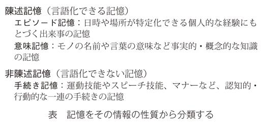

| 記憶の整理術 忘れたい過去を明日に活かす (PHP新書) | |
| 榎本博明 | |
| PHP研究所 (2011) | |
記憶の整理術
忘れたい過去を明日に活かす
榎本博明
「過去は変えられない」
そう思っている人が多いはずだ。だが、それは間違いだ。過去は変えられる。
「そんなバカな！ タイムマシンに乗って過去をやり直すなんて夢物語だし、過去を変えるなんてできるわけがない」
そんな声が聞こえてきそうだ。では、あなたの過去はどこにあるのだろうか。
記憶というのは過去の記録だと信じ込んでいる人が少なくない。もしかして、あなたも記憶は過去を忠実に記録したものなどと思っているのだろうか。そうであるなら、即刻考えを改めていただきたい。
このたびの東日本大震災は日本中を震撼させた。私自身も千葉で震度五の揺れに見舞われたが、あのような凄まじい地震は初めて体験するものだった。余震が来るたびにビクッとするが、未だに頻繁に起こるこうした余震が被災地の人々の心に喚起する恐怖や不安を察するとともに、自然の猛威を前にしての人間の無力を感じざるを得ない。今回の被災の現実はあまりに生々しく、記憶として濾過されていくには、まだまだ長い年月が必要であろう。
そんな中、震災から一〇日ほど経過した一昨日、被災者の方が倒壊した自宅の瓦礫の中から懐かしい家族写真を拾い出し、笑顔を取り戻す姿がテレビに映されていた。「この思い出があるから、前向きになれる、生きる勇気が湧いてくる」そんな心の声が聞こえてくるような笑顔だった。
懐かしい思い出をはじめとする過去についての記憶は、「今、ここ」で直面している悲惨な現実のもつ意味を塗り替える力を秘めている。そのテレビに映された人にとっての懐かしい思い出は、いったいどこにあるのだろうか。その写真の中にあるのだろうか。
かつては心理学の世界でも、記憶が過去の記録であるかのように扱われてきた。だが、そうした考え方を覆すような事例が数多く報告されるようになり、今では記憶というのは過去の単なる記録ではなく、もっと能動的に過去を生み出す機能であると考えられている。
私は記憶に関する前著『記憶はウソをつく』において、写真やビデオ映像のように固定的に過去を記録するメディアと違って、人間の記憶がいかに揺らぎやすいものであるかを示した。記憶のスレ違いというのは、ビジネスでもプライベートでも至る所で生じている。学生時代の仲間が集まって昔話に盛り上がると、人によって覚えていることがこんなに違うのかと驚かされる。プライベートなら笑って済ませられるが、ビジネスの場での記憶のスレ違いは困りものだ。だが、現実には頻繁に生じる。約束した日が違っていたり、合意していたはずの条件が違っていたり、口にした覚えのないことを言ったといわれたり、はっきり聞いた記憶のあることをそんなこと言うはずがないといわれたり......。それは、お互いの思いや立場が違うからだ。思いや立場が違えば記憶も違う。
さまざまな心理実験により、思い出すときの心理状態によって思い出される内容が違ってくることがわかっている。逆に言えば、記憶は思い出している人の心理状態を反映するものとなっている。
実験協力者にある物語を聞かせた後、うち半分の人たちには楽しいことを思い出し、肯定的な気分に浸ってもらう。残りの半数の人たちにはイヤな出来事を思い出し、否定的な気分に浸ってもらう。そして、先に聞いた物語を思い出してもらう。すると、同じ物語を聞いたのに、肯定的な気分の人は楽しい内容を多く思い出し、否定的な気分の人は悲しい内容を多く思い出す傾向がみられる。ここからわかるのは、私たちは今の気分に馴染む事柄を思い出しやすいということだ。辛い思い出が多いからうつになるのではないのだ。気分がうつ状態だから辛い記憶が引き出されるのである。
さらに言えば、楽しい気分、嬉しい気持に浸りつつ、過去を振り返ったり、身のまわりの出来事に目を向けることで、幸せな記憶をつくることができる。気の合う友だちと楽しくお喋りしながら過去のことをあれこれ思い出すのも効果的だ。
楽観的な人が成功するということは、さまざまな調査によって証明されている。楽観的な人のほうが、何事にも意欲的に取り組み、イヤなことがあっても落ち込みにくく、学校でも職場でも成果を上げやすく、身体の病気にもかかりにくい。
では、楽観的な人と悲観的な人を比べると、どこが違うのか。過去の解釈の仕方が違う。過去の不幸な出来事を語るのに、悲観的な人は、それによって自分がどんな被害を受けたか、どれほどイヤな目にあったかを切々と語る傾向がある。一方、楽観的な人は、その不幸のおかげで得たものに目を向けようとする。支えてくれた人の温かさを感じた、あれがきっかけで自分は強くなれた、天狗になっていた自分を立て直すちょうど良いきっかけになった、などというように。
モチベーションが大事だというのは、ビジネスの世界では、もはや常識だ。同じような能力や適性をもっていても、モチベーションの高い人のほうが成果を上げる。もっている能力や適性のうちの何パーセントを使うかを決定するのがモチベーションだ。
そのモチベーションを規定しているのが「未来予想図」である。明るい未来予想図を描くことができれば、モチベーションも高まり、意欲的に日々の仕事に取り組むことができる。しかし、明るい未来予想図を描くことができないと、どうしても意欲的になれず、惰性に流されがちとなる。
未来予想図は何をもとに描かれるのだろうか。こんな風になりたいといった自分の希望や期待が大きな要因となるのは言うまでもない。その希望や期待は、じつは過去の記憶に強く縛られている。商品などの需要予測が過去の売り上げ実績にもとづくのと同じだ。私たちは、これまでの人生における成功体験や失敗体験といったデータにもとづいて将来を予測する。そこに描かれるのが未来予想図だ。だが、過去の成功体験や失敗体験も、事実として目の前にあるわけではない。記憶として与えられる。それは、客観的な記録ではなく、きわめて主観的に意味づけされたものとして、私たちの記憶の中から引き出される。
ここで冒頭の問いに戻るが、あなたの過去はどこにあるのだろうか。
私たちの過去は、「今、ここ」にいる自分自身の心の中にある。10年前の出来事も、20年前の出来事も、10年前にそれが起こった場所や20年前にそれが起こった場所に保存されているわけではない。懐かしい生まれ故郷を訪れても、そこにあるのは変わり果てた見知らぬ風景だったりする。10年前の出来事も20年前の出来事も、今ここにあるのだ。このことから言えるのは、「過去は変えられる」ということである。過去を変えるのに、タイムマシンに乗る必要はない。自分の視点が変われば、過去も変わるのである。
カウンセリングも、じつはこうしたメカニズムで成り立っている。カウンセリングの場では、たえず過去の書き換えが行われているのである。過去に起こった出来事を起こらなかったことにすることはできない。自分の経験を他人の経験とすり替えることなど不可能である。しかし、過去に起こった出来事のもつ意味を変えることは、いくらでもできる。素材を取り替えることはできなくても、素材のもつ意味を変えることで、まったく趣の異なった人生を紡ぎ出すことができる。人がカウンセリングで立ち直り、生まれ変わることができるのも、視点を変えることによって過去を塗り替えることができるからである。
私は、カウンセリングや「自己物語」面接において、いかに多くの人々が忘れてしまいたい過去を抱えているかを知った。イヤな出来事、辛い経験を思い出すたびに、マイナス感情が刺激され、気持ちが萎え、「もう忘れてしまいたい」と思う。過去を封印して暮らしつつ、居心地の悪さをどこかで感じている。その一方で、挫折体験から目を背けることなく、むしろ逆境をバネに力強く歩んでいる人もいる。人間は思いのほか強い。どんな悲惨な挫折体験、喪失体験の中からも、自分を導いてくれるプラスの意味を読みとる力をもっている。そこで行われるのが、逆境をバネにするための記憶の整理である。
過去の記憶を前向きに整えることで、明るい未来予想図が描けるようになる。明るい未来予想図を描くことができれば、モチベーションが上がり、ものごとが好転する。それによって肯定的な記憶がつくられる。こうした好循環が動き出す。
インスピレーションとか創造力というのも、ビジネスの世界では非常に重要なものといえる。記憶に縛られないほうが創造的になれるなどと、まことしやかにささやかれたりするが、それは大きな間違いだ。新たな発想が一体どこからやってくると言うのだろうか。まさか天から降ってくると思っているわけでもあるまい。新たな発想は、紛れもなく自分自身の心の中から引き出されるのである。
あらゆる発想の背後には、何らかのヒントとなる記憶が潜んでいる。記憶素材の意外な結びつきが新たな創造につながることもある。素材がなければ創造もない。発想の手がかりは、記憶の中に眠っている。記憶は発想の宝庫なのである。
うつの人は問題解決能力が低いといわれる。その理由は、記憶の抑圧にある。うつの人は、落ち込んだ気分で過去を振り返るから、否定的な記憶ばかりが引き出されてくる。そうすると、ますます気分が落ち込む。そこで、自己防衛機能が働き、過去の記憶へのアクセスが悪くなる。つまり、記憶が悪くなる。うつが治ると記憶が良くなるというのも、そうした防衛が解除されるからだ。
問題解決能力は、過去のエピソードをどれだけ活用できるかにかかっている。過去の記憶が利用しやすいように整理されていれば、現状をスムーズかつ適切に分析でき、最善の対処法を打ち出すことができる。あらゆる判断の背後には記憶が存在する。直感力とは、目の前の状況に応用可能な記憶をとっさに引き出す能力であるといえる。
このように記憶を前向きに整理することは、快適な人生を手に入れるために必要不可欠なのである。日頃から前向きに快適人生を歩んでいる人は、本人はとくに意識していなくても、そうしたコツを身につけているのだ。ビジネスでもプライベートでも快適な人生を手に入れるために、記憶の整理に取り組んでいただきたい。本書では、そのための実践的なヒントを随処に散りばめたつもりである。
本書をまとめるに当たって、ＰＨＰ研究所新書出版部水野寛氏には、編集作業における意見交換においてさまざまな刺激を頂いた。また、阿達真寿氏には、企画段階で大変お世話になった。本書がこのような形に結実したのもお二人のご尽力によるものであり、心から感謝の意を表したい。
二〇一一年三月二十四日
榎本 博明
 目次
目次 アルバムをめくるように、過去の出来事を思い出して懐かしむことがある。仕事上どうしても思い出さなければならない大事なことが、どうしても思い出せないということもある。今いっしょに喋っている目の前の人とは、どこかで会っている気がするのだが、いつどこで会ったのか思い出せないというようなこともある。
記憶というと、このように過去の振り返りに関係する心の機能であるかのように、一般には思われている。
だが記憶とは、そんな限定的な心の機能ではない。じつは記憶というのは、私たちが生きるということ全般に深くかかわる心の機能なのである。
哲学者ヒュームは、
「なぜ未来は過去に似るのか」
という問いに対して、私たちは過去に似たものとしてしか未来を考えられないからだと言う（→「ヒュームと因果関係」）。
たしかに、私たちが自分の未来を想像する際には、これまでの自分の人生の軌跡を前提として、その延長上に自分の未来を思い描くものだ。いくらイチローに憧れたところで、野球に無縁の人生を送ってきた私が、メジャーリーグで活躍し、やがて名監督になる自分の未来を描くことなどできない。
将棋の羽生名人は、勝負所で何よりも大切なのは直感力だが、それは何もないところからパッと突然思い浮かぶようなものではないという。まったくゼロの状態から生まれるものではなく、それまでに経験したことの中から必要なものが瞬間的に浮かび上がってくるのである。つまり、直感力とは、これまでに自分が経験したことや覚えてきた知識の中から、瞬間的に取捨選択し、判断する能力なのだという。
今自分の置かれている状況に最も適した対処法を瞬時に判断するというのが、得意な人と苦手な人がいる。得意な人は、今この瞬間に必要な情報を、これまでの多くの経験や知識の蓄積の中から的確に引き出すことができる。苦手な人は、経験や知識が整理されていないため、それを適切に活かすことができない。このように直感力を働かすにも、記憶が深く関係しているのである。
記憶というのは、単に過去を振り返る心の機能ではない。記憶は、未来を見通す心の機能でもあり、現状をとっさに見抜く心の機能でもあるのだ。そのことを念頭に置いて、この先をお読みいただきたい。
まずは、だれにとっても非常に身近な問題である記憶のスレ違いの話から始めよう。
自分の記憶と相手の記憶のスレ違いにとまどうのは、仕事絡みでもプライベートでも日常茶飯事だ。
つい先日も仕事仲間から、
「チェックを頼んであった書類、そろそろ戻してほしいのだけど」
と言われ、大いに慌てた。そんな書類を受け取った記憶がない。私は書類の整理が悪く、毎日かなりの時間を探し物に費やす。そんな人間ゆえに、「これは大変だ」と思って部屋中探し回った。だが出てこない。結局、彼の記憶違いで、その書類は彼の机の書類の山の下に埋もれていた。
今回は、書類が出てきたから双方が納得いく結末になったが、そうした客観物のないやりとりでは、どちらも「自分の記憶が絶対正しい」と信じ込んだままということになりがちだ。もちろん相手を責めるような大人げない対応はしないまでも、心の中では二人ともが相手に対して「しょうがないなあ」といった思いを抱くに違いない。
プライベートでもこんなことがあった。親しい友人と旅行話で盛り上がり、
「そういえば、前に京都の高雄にいっしょに行ったとき、川沿いに結構な距離を歩いたよなあ」
と懐かしい思いに浸りつつ、つぶやく私に対して、
「高雄なんか行ってないよ、行ったのは嵐山だよ」
と言う。そうだっけ、こちらの記憶違いかな。では、だれと行ったんだろう、たしかにだれかと高雄三山（神護寺・西明寺・高山寺）をめぐって川沿いの道を歩いた記憶がある。いっしょに歩いている人物のぼやけた顔を何とかはっきりさせようと気合いを入れるが、記憶の中の顔はどうにも鮮明にならない。
何度も繰り返される経験は、個々の経験が溶け合って、そのうち区別がつかなくなる。何度も行っている場所の記憶となると、だれと行ったとか、どこをどう回ったとか、どんな出来事に遭遇したというような個々のエピソードが何回目のものかなど、皆目検討がつかなくなる。
多くの人が勘違いしていることがある。
それは、記憶を過去の記録と思い込んでいることだ。記憶というと、過去の出来事や経験の単なる記録と思われるかもしれない。だが、これは大きな勘違いなのである。
かつては心理学の世界でも、記憶が過去の記録そのものであるかのように考えられていた。当時の記憶理論は、言ってみれば「コピー理論」だ。オリジナルがそのまま保存され、引き出される。「記憶の貯蔵庫モデル」ともいわれる。出来事を瞬間的に冷凍し、保存しておき、思い出すときに解凍すると、オリジナルな出来事がそのままの形で引き出される。
しかし今では、記憶はそのような受け身の心理プロセスとは考えられていない。記憶というのは、オリジナルな出来事とは別に、記憶する人によって能動的につくられるのである。
記憶に先立って、知覚という心理プロセスがある。ある出来事を見て、それを記憶する。ある話を聞いて、それを記憶する。その「見る」とか「聞く」というのが知覚である。私たちはけっして受け身に知覚しているのではない。
ショーウィンドウの前に立つあなた自身をイメージしてみよう。そして、ショーウィンドウの中を覗き込んで、そこに飾ってあるマネキンが身につけている服を観察しよう。そのとき、ショーウィンドウに映っているはずの自分の姿は見えていない。つぎに、ショーウィンドウに自分の姿を映して身なりを整えよう。そのとき、ショーウィンドウの中のマネキンは見えていない。
カメラで写せば、マネキンと自分の姿が二重写しで映っているはずだ。網膜にも二重写しで映っている。
だが、私たちは、とくに関心のある刺激、自分にとって意味があると思われる刺激だけに絞って知覚する。知覚には取捨選択が伴う。このようにして知覚されたものを記憶する。
ある視点をとるとマネキンが見える。別の視点に立つと自分の姿が見える。どちらが正しくて、どちらが間違っているという問題ではない。どちらも正しい。どちらのほうが自分にとって意味があると感じるかが問題なのである。
ゆえに、同じ出来事を経験しても人によって思い出すことが違うのは、じつは当たり前のことなのだ。同じ出来事を目の当たりにしても、興味を感じて見ているところが違う。同じ話を聞いても、とくに関心をもって聞いている箇所が違う。したがって、同じ出来事を経験しても、同じ話を聞いても、思い出すことは人それぞれに違っている。人によって視点が違うのである。
同じ歴史的事件に関しても、国によって解釈が違う。それは、国によって立場が違うからだ。立場が違えば、当然視点も違う。これは、政治絡みの深刻な話に限らない。
巨人対阪神の伝統の一戦で、ツーアウト満塁ボールカウント「ツー・スリー」というチャンスで阪神のバッターがきわどい球を見逃した。が、ストライクと判定され三振に倒れた。そこでボールの判定なら、押し出しで点が入り、同点になっていた。結局、その回は無得点に終わり、試合は１点差のまま進行し、阪神は敗れた。
こうなると、阪神ファンは、あの審判のミスにやられたという思いが強いため、その三振の場面ばかりを思い出しては悔しがる。一方、巨人ファンにとっては、当然三振だとの思いがあるためとくに印象に残らず、思い出すのは先制点を叩き出したタイムリーヒットの場面となる。同じ試合を見ていても、どちらのファンであるかによって視点が違うのだ。視点が違うから、見えていることが違い、思い出すことが違うのである。
そう考えると、身近な人たちとの間で、記憶のスレ違いがしばしば起こるのも、やむを得ないことがわかるだろう。興味・関心の違い、利害の違い、立場の違い、そういったものが視点の違いをもたらし、記憶のスレ違いを生むのである。
逆に言えば、記憶のスレ違いには、それぞれの興味・関心の違い、利害の違い、立場の違いが如実に反映されているのである。
今でも多くの人は、記憶は過去の記録だと思い込んでいる。専門書を読んでも、そのように書いていることがある。だが、１６００年も前にアウグスティヌスという神学者は、記憶は「今現在」と深く関係していることを見抜いている（→「アウグスティヌスと記憶」）。
アウグスティヌスは、次のように言う。
未来は、まだここに存在しない。過去は、もうここには存在しない。ゆえに、未来や過去が存在するとしたら、「今ここ」の現在以外に考えられない。つまり、未来とか過去といったものは存在しない。あるのは、過去についての現在、現在についての現在、そして未来についての現在である。そして、過去についての現在が記憶だというのである。
思い出される過去には、思い出す現在の視点が色濃く反映されている。ゆえに、「今ここ」で思い出された記憶には、今の心理状態や価値観・欲求が強く関係している。そのことをアウグスティヌスは見事に見抜いているのだ。さらに、アウグスティヌスは言う。
過去の自分の悲しい出来事を今穏やかな気持ちで思い出すという場合、心は穏やかで記憶は悲しいというのは、一体どういうことなのだろうか。悲しみを記憶しているはずなのに、なぜ悲しくないのか。きっと心は胃のようなもの、嬉しい出来事や悲しい出来事は甘い食べ物や苦い食べ物のようなものなのだろう。出来事が起こった時点では、甘さや苦さが味わわれるけれども、記憶になると胃の中に送り込まれたようなもので、味わわれることはない。思い出すというのは、いったん胃に入った食べ物が反芻によって取り出されるようなもので、そのときの舌で味わわれる。
つまり、想起によって記憶から取り出されるとき、その出来事は、かつての心ではなく現在の心で味わわれる。ゆえに、かつては悲しくて仕方なかった出来事も、自分を鍛えてくれた懐かしい出来事のように思い出されたりするのである。
最新の心理学は、アウグスティヌスの考え方に回帰してきている。つまり、記憶というのは、出来事が起こったときのままに引き出されるのではなく、思い出すときにつくり直されると考えられている。
私は、カーマイケルたちの古典的実験にならって、こんな実験をよくする。二つの円を直線でつないだ図形を見せて、覚えてもらう。半分の人たちには「メガネ」だと伝える。残りの半分の人たちには「鉄アレイ」だと伝える。しばらくして思い出しながら図形を描いてもらう（→図参照）。
すると面白いことに、同じ図形を見て覚えたはずなのに、「メガネ」として思い出す場合と「鉄アレイ」として思い出す場合とで、思い出す図形に違いがみられたのである。「メガネ」として思い出す場合のほうは、いかにもメガネらしく二つの円が近寄っている。「鉄アレイ」として思い出す場合は、いかにも鉄アレイらしく、握りの部分に相当する線分が長めになる。
幼児を対象に、親子関係がしっかりと築かれ子どもの情緒が安定しているか、親子関係が不安定で子どもが情緒不安定気味であるかを測定しておき、その子たちがその後大学生になったときに幼児期を回想させるという大がかりな実験も行われた。
その結果、自分の幼児期を良かった時代として思い出すか、それとも不安定で不幸な時代として思い出すかは、実際の幼児期の状態によるのではなく、今の大学生活に適応しているかどうかによることがわかった。幼児期がどんな時代であったかは、現在の適応状態をもとに評価し直される、つまり今の視点から再構成されるのである。
このような実験例は、記憶というのが、けっして出来事が起こった時点で固定されるようなものではなく、思い出すときにつくり直されることの証拠になるものといえる。
記憶が思い出すときにつくり直されるなら、思い出された内容は、今の心理状態や欲求や価値観を映し出しているはずである。
先ほどの大学生の事例でも、自分の幼い頃についての記憶は、今現在の適応状態の良し悪しを反映していた。現在適応し、心地よい心理状態にある人は、幼い頃を良い時代だったと回想した。一方、現在不適応気味で、不安定で不快な心理状態にある人は、幼い頃を良くない時代だったと回想したのである。
私に相談に来たある経営者の方は、幼い子どもの頃は楽しい思い出が多く、結構いろいろなことを覚えているという。それなのに、思春期から青年期の思い出がまったくないというのだ。何だか暗い毎日だったというような漠然としたイメージはあるのだが、具体的なエピソードが浮かばないという。
ここには、精神分析を創始したフロイトの言う「抑圧」というメカニズムが働いている。
思い出したくないイヤな出来事や経験が含まれる時期についての記憶は全般に薄れているものである。その時期の何かを思い出すと、関連することが順々に思い出され、そうした連鎖の果てにイヤなことまで思い出してしまう可能性があるからだ。この抑圧という自分を守る心理メカニズムは、無意識のうちに発動される。
カウンセリングやそれに類する語りの場を通して、イヤな時期をどんより覆っている黒い雲が払いのけられると、その時期の具体的なエピソードが次々に蘇ってくるのがふつうである。
たとえば、それが母親との間の確執で、母親に対する嫌悪感が黒い雲となって中学生・高校生時代を覆っているとする。その頃は、しょっちゅう口論していたようなイメージがあり、常にイヤな気分でいた感じがする。そんな頃のことを思い出すのは不快だから、抑圧が働いてほとんど何も具体的なエピソードは思い出さなくなっている。
ところが、自分の成育史について語っているときに、当時の自分がうっかり見逃していたことに気づく。あの頃の自分たち家族の経済的基盤は、どうなっていたんだろうということだ。父親が病気で突然退職したため、母親が急きょ働きに出たが、その収入のみで何年も生活していた。
その間、父親や自分たち子どもの世話をするのは容易ではなかっただろう。いつもイライラしていたイメージがあり、何かというとお母さんは忙しいのだと言い、ちょっとしたことですぐに怒鳴られ、口論になった。当時はそんな母親が許せず、嫌いだった。今改めて振り返ってみると、それは仕方ないと思う。自分自身、結婚して子どもができ、妻も仕事をしながら子育てをしており、子育てと仕事の両立についての悩みをよく聞かされている。そんな立場から久しぶりに振り返ったために、気づいたのであろう。
こうして思春期を覆っていた黒い雲が払いのけられると、母親との口論も懐かしく思い出されるようになった。それと同時に、中学や高校での楽しいエピソードも、いろいろ蘇ってきたのだった。今の心理状態が変われば、思い出されることも変わるのである。
仕事の関係でつきあいのある人と雑談している際に、
「先日の飲み会で勉強会をやってみようかという話が出ましたよね。あれからときどき思い出しては考えてるんですけど、月１回くらいのペースなら現実的だし、思い切ってスタートするのもよいのではないかと思うんですけど」
と言われた。
じつは、私がしばらく前の飲み会で話したのは、ある人が異業種交流会のような勉強会をやっていて、自分は話題提供者として呼ばれて出かけたのだが、なかなか面白かったということだけなのだ。「良かった」という感想を述べたまでで、自分たちも勉強会を立ち上げようということなど言っていない。
だが、ここで重要なのは、記憶の正確さを競うことではない。この記憶のスレ違いは、相手の欲求を見事に反映している。私から異業種交流的な勉強会の話を聞いて、それは面白そうだと興味をもって繰り返し思い出しているうちに、自分もやってみたいという気持ちが強まってきたのだろう。
こちらが同調する気がない場合には、記憶の誤りを指摘して、その正確さを競い合う必要はないが、自分は面白そうだと思って話したけれど、現実的に考えるとちょっと難しいというようなら、やんわりと断らねばならない。だが、断らなくても良いなら、せっかくの相手の気持を尊重して、いっしょに立ち上げの相談をしていけば良いだろう。
フロイトは、ちょっとしたうっかりミスのことを「錯誤行為」と名づけた。そして、錯誤行為にも隠された無意識的な意図が働いていることがあるとして、多くの事例をあげている。
ある奥さんが、友だちと町を歩いているときに、通りの向こう側にご主人を見つけ、
「あ、Ｔさんが歩いている」
のように、よそよそしく名字を使って相手のことを表現した。今は自分も同じ名字なのに。その結婚は、まもなく破綻したという。そのうっかりした言い間違いの中に、気持ちがすっかり離れているという心理状態があらわれていたと考えられる。
同じようなことが、記憶にも当てはまる。
ある男性は、奥さんに対して不満があり、否定的な感情を抱いていた。そんなとき、
「散歩がてら本屋を覗いてきたんだけど、あなたが好きそうな本があったから買ってきたわよ。読んでみたら」
と言って、妻が本を一冊くれた。
「ありがとう」
と言って受け取った。その後、ときどきその本のことを思い出し、「せっかくくれたんだから読まないと悪いなあ」とは思うのだが、どこにやったのか見当たらない。あるとき、実家の母親が寝込んでしまい、妻が世話をしに行ってくれ、その看病のかいあって元気になった。妻への感謝の気持ちを感じつつ、何気なく机の引き出しを開けたら、そこに妻からもらった本が出てきた。
このエピソードは、記憶が思い出されるときの心理状態を反映することを如実に物語っている。妻に対する反発心が強いときには、「せっかくくれたんだから読まないと悪いなあ」という意識の背後に、「そんなもの読んでやるものか」といった無意識の反発心があるために、しまった場所を思い出せない。
ところが、妻に対する感謝の気持ちをもつようになったとたんに、無意識の抑圧が解けて、しまった場所の記憶が蘇ったのである。
私たちは、客観的な世界に生きているのではなく、主観的な世界に生きている。同じ映画を観ても、
「良かったなあ、久々に泣いた、感動した」
という人もいれば、
「全然面白くなかった、損した気分」
などという人もいる。映写される内容は客観的に同じであっても、その意味を感じるのはひとりひとりの心、まさに主観なのだ。
私たちが生きているのは、「意味の世界」である。モノや出来事そのものの世界ではなく、モノや出来事がもつ意味の世界なのである。そして、意味というのは、経験する側が感じ取るもの、もっと大胆にいえば、経験する側が生み出すものである。
若い頃に感動した漫画を読んでも、今ではあまり心が動かないということがある。逆に、若い頃に読んだときにはあまり意味がわからなかったが、改めて読んでみると非常に共感できたというような小説もある。
つまり、意味というのは、漫画や小説そのものにあるのではなく、読む側の心の中に生み出される。自分が人生経験を重ねることによって、意味を感じる対象が違ってくる、意味の感じ方が違ってくるのである。ゆえに、同じ出来事も、改めて振り返ると、以前とは違った意味をもつものになっていたりするのである。
先ほどアウグスティヌスの記憶論を紹介したが、私たちの過去はどこにあるかといえば、今ここにいる自分自身の心の中にあるのだ。10年前の自分も、20年前の自分も、10年前あるいは20年前のどこかにあるのではなく、「今ここ」にある。それは、今のどこか客観的な場にあるのではなく、自分自身の心の中という、きわめて主観的な場にあるのだ。
ここから示唆されることは何か。
それは、私たちの「過去は変えられる」ということだ。一般に、過去はもう済んでしまったことだから変えることなどできないと思われている。専門家にもそのような発言が目立つ。それに対して、私はこれまで一般向けの講演でも、学会でも、「過去が変わる新たな発達観」というのを唱えてきた。
客観的に起こった出来事を起こらなかったことにする。そのような意味で過去を変えるのは、もちろん不可能である。だが、出来事のもつ意味を変えるということは、十分に可能である。昔読んだ本に、その当時とは違う意味を読み取るというのと同様に、自分自身の身に降りかかった出来事から、当時とは違った意味を汲み取ることは、じつはよくあることなのだ。多くの人が意識していないだけで、そのようなことはだれもがしばしば経験しているはずである。
では、どうしたら過去を変えることができるのか。その具体的な方法については、本書を通してぜひとも体得していただきたい。
重要なポイントは、私たちの過去は写真やビデオ映像のような固定的なものではなく、ひとつの解釈であり、主観的な意味づけの産物であるということにある。記憶の書き換えが、実際にどのように行われるのかについては、後に詳しく説明する。
１章のポイント
 私たちは、過去に似たものとしてしか未来を考えられない。
私たちは、過去に似たものとしてしか未来を考えられない。
 直感力とは、これまでに経験したことや覚えたことの中から、役立つ情報を瞬時に取捨選択し、判断する能力であり、記憶に大きく依存している。
直感力とは、これまでに経験したことや覚えたことの中から、役立つ情報を瞬時に取捨選択し、判断する能力であり、記憶に大きく依存している。
記憶とは単に過去を振り返る心の機能ではない。記憶は未来を見通す心の機能でもあり、現状をとっさに見抜く心の機能でもある。
記憶を過去の記録と勘違いしている人が多い。
 記憶には思い出すときにつくり直されるという側面がある。ゆえに、思い出された内容は、今の心理状態や価値観を映し出している。心理状態や価値観が変われば、思い出すことも違ってくる。
記憶には思い出すときにつくり直されるという側面がある。ゆえに、思い出された内容は、今の心理状態や価値観を映し出している。心理状態や価値観が変われば、思い出すことも違ってくる。
 コミュニケーションの難しさは、記憶の曖昧さ、記憶の揺らぎやすさに起因するところが大きい。記憶のスレ違いは日常茶飯事だが、そこにはお互いの欲求や価値観が絡んでいる。逆に言えば、記憶のスレ違いをもとに、相手の心理や価値観を探り出すこともできる。
コミュニケーションの難しさは、記憶の曖昧さ、記憶の揺らぎやすさに起因するところが大きい。記憶のスレ違いは日常茶飯事だが、そこにはお互いの欲求や価値観が絡んでいる。逆に言えば、記憶のスレ違いをもとに、相手の心理や価値観を探り出すこともできる。
私たちが生きているのは、客観的世界でなく、主観的世界であり、「意味の世界」である。私たちの過去は、どこか客観的な場所に保存されているわけではなく、自分自身の心の中にある。10年前の自分についての記憶も20年前の自分についての記憶も、「今ここ」にあるのである。ここからわかるのは、過去はけっして客観的なものでも、固定的なものでもないということ。つまり、「過去は変えられる」のである。
ビジネスパーソンにとって、仕事力の有無は死活問題だ。仕事力のある人には、とてもこなしきれないほどの仕事が次々と舞い込む。一方で、仕事力の乏しい人は、頼まれればやる時間は十分あるのに、一向に仕事が回ってこない。世の中の不平等を嘆いても仕方ない。仕事力を高めるしかないのだ。
仕事力の基礎となるのが、「コミュニケーション力」と「モチベーション」だ。
コミュニケーションする動物である私たち人間は、起きている間じゅう、絶えずだれかとコミュニケーションをしている。上司や部下との関係も、社内の戦略会議でのやりとりも、他の部署や支店の担当者を説得するのも、取引先との関係も、新規に顧客を開拓する場合も、ビジネスのあらゆる局面にコミュニケーションが絡む。
もちろん、プライベートの世界もコミュニケーション一色に染まっている。友だちとの関わりも恋愛関係も、家族とのさまざまなやりとりも、すべてコミュニケーションの世界の出来事だ。友だちがいないといってインターネットの世界に向けてブログで発信したり、ツイッターでつぶやいたりするのも、すべてコミュニケーションである。
モチベーションという言葉も、いつのまにか世の中に氾濫するようになった。私たちを行動に駆り立てるのがモチベーションだ。やらねばならないのはわかっていても、なかなかやる気が出ない。だれでも経験があるだろう。先週はどうもやる気が湧かず能率が悪かったけど、このところなぜかやる気が高まってきて、一気に仕事が片づく勢いだ。そうした波もよくあるものだ。
でも、先週と今週で能力が違うなどということは考えられない。すべてはモチベーションの問題だ。仕事のできる人とできない人の違いはどこにあるのか。多くの場合、それは能力ではなく、モチベーションにある。能力が急に高まったり低下したりということは、現実にはあり得ない。成果の違いは、自分の能力をフル稼働させて80％以上を発揮するか、50％程度しか発揮できないか、そうした違いによるものだ。仕事の成果を決める最大の要因はモチベーションだといってよいだろう。
このように仕事力の基礎をなすコミュニケーション力とモチベーションだが、それらの背後には、じつは記憶が潜んでいる。
私たち人間にとって記憶が非常に重要な意味をもつことは、周知のことである。自分が自分であること、いわゆる自己のアイデンティティも、記憶によってかろうじて支えられているのだ。記憶が障害を受けると、仕事に差し障りが生じるのみならず、家族など身近な人間関係さえ困難になるのは、認知症などの事例をみれば明らかだろう。
記憶の大切さは、だれもが知るところである。いかに記憶力を高めるかといったテーマの本がやたらと売れている。雑誌でも、記憶力を高めるノウハウについての特集が目につく。だが、その手の本や雑誌記事をパラパラッとめくってみると、大切なことが抜け落ちているように感じられてならない。
こうすれば記憶の容量が増す、こうすれば効率よく記憶できるようになる。そういった類の、いわゆる記憶術系の話ばかりなのだ。もちろん、それも大切だ。しかし、記憶が仕事力にとって重要だというとき、問題となるのは単に記憶容量や記憶効率だけではない。
「記憶の使い方」が、じつは非常に重要なのだ。何を覚えているかではなく、覚えているものをどう使うかが問題なのである。たとえ物忘れが激しくても、覚えるのが苦手であっても、記憶の使い方を身につければ、十分補うことができる。
「記憶の使い方って、記憶をどう引き出すかということなんじゃないの？」
「結局、記憶術の一種ではないか」
と思われるかもしれない。だが、そうではないのだ。
私たちは、何の脈絡もなく支離滅裂に行動しているわけではない。私たちの行動の背後には、何らかの動機が潜んでいる。
何らかの行動を促すことを心理学では「動機づけ」という。モチベーションのことであり、一般に「やる気」といわれているものと同じと考えてよいだろう。
何に対してもやる気がみなぎっている人もいれば、やる気の乏しい人もいる。モチベーション水準が全般的に高い人と低い人だ。
活動領域によってモチベーション水準が異なるケースもある。仕事に対するモチベーションは低いのに、遊びやスポーツに対しては別人のような高いモチベーション水準をもつといったケースもある。本業に対してはあまりモチベーションが感じられないのに、アルバイト先ではモチベーション水準が高く、エネルギーがほとばしり出ているといったケースもある。
こういった個人個人のモチベーションは何によって決まるのだろうか。最も重要な要因は、過去の経験だ。これまでにうまくいくことが多かった活動領域、気持ちよくやってこられた生活領域では、当然モチベーションが高い。あまりうまくいかないことが多かった活動領域、イヤな思いをすることが多かった生活領域では、これも当然ながらモチベーションは上がらない。
これまでの人生で、うまくいくことが多かった人は、何に対しても全般的に高いモチベーションで向かっていくことができる。だが、頑張ってもうまくいかないことのほうが多かった人は、「どうせうまくいくわけがない」といった気持ちが先に立って、頑張る気持ちが湧いてこない。
セリグマンという心理学者が行った犬の実験がある。
部屋の真ん中に低い塀で仕切りをつくって二つの小部屋に分け、一方に犬を入れた。床は金属でできていて、電流が通るようになっている。実験者がスイッチを押すと電気がついて、その直後に電流が流れ始め、犬は痛くて跳び回る。たまたま塀を跳び越して、反対側に行けば電流の痛みから逃れられる。しばらくするとまた電気がついて、床に電流が流れる。犬は痛くて跳び回り、塀を飛び越して元の小部屋に戻ると、電流の痛みから逃れられる。何度かこれを経験すれば、電流の痛みが流れる合図となる電気がついたとたんに塀を跳び越して、電流の痛みから逃れることができるようになる。
ところが、前日にある実験を受けていた犬たちは、このような回避行動がとれない。どういう実験かというと、ハンモックに吊されて電流の痛みを受けるという実験である。塀を跳び越せば痛みから逃れられるセットと違って、ハンモックに吊されていては、いくらあがいても電流による痛みから逃れることはできない。苦痛な刺激をただひたすら受けるだけ、受け身で我慢するだけとなる。
これによって、「いくらあがいても自分にはどうにもならない」ということ、つまりどう頑張っても自分の置かれた状況を変える力は自分にはないということを学んでしまうのである。これを「学習性無力感」という。無力感を学習してしまう。つまり、経験によって無力感を身につけてしまうのだ。
人間も同じだ。頑張れるかどうか、やる気をもって取り組めるかどうかは、これまでの成功体験や失敗体験によるところが大きいといえる。
モチベーションを左右するのは、過去経験ばかりではない。
明るい未来展望がもてるかどうかも、モチベーションを大きく左右する。やっても報われる可能性が低いと思われることに全力でエネルギーを注ぐというのは、だれだって難しいだろう。頑張ればきっとうまくいくと思うことができるからこそ、頑張れるのだ。
松下電器（現・パナソニック）の創業者である松下幸之助氏は、ものごとをうまく成し遂げるには、「自分は運が強い」と自分自身に言い聞かせることが大切だと言う。その結果、仕事でも何でも、何か困難に直面しても、自分は運が強いから何とか乗り切れるだろう、きっと良い状態を生み出すことができるだろう、といった信念のような強い思いが、いつの間にか身についていた。そのおかげで、さまざまな困難にも、心を乱すことなく、勇気がくじけることもなく、何とかやってこられたという。
京セラの創業者である稲盛和夫氏も、「うまくいく」と信じることが大事だと言う。うまくいくと自分自身が信じていないことに対して、努力などできるはずがない。強烈な願望を抱くとともに、心からその実現を信じることによって、困難な状況を打開し、ものごとを成就させることができる。実現できると信じるからこそ、そのための方法を必死に考え、努力と創意が生まれるのだという。
それはよくわかる。松下幸之助さんや稲盛和夫さんの場合はそうだろう。希有な成功者なのだから。あれだけの成功を手にした人だから、自分はきっとうまくいくと自信をもてるのも当然のことだ。でも、自分たちのような一般人の場合は、なかなかそういうわけにもいかない。成功に裏づけられた人生を華々しく歩んでいる人たちといっしょにされても困る。なにしろ自分には、誇れる成功体験などないのだから。そのように思われるかもしれない。
うまくいくと信じる心も、明るい未来展望も、肯定的な自分の過去をもとにしてはじめてもつことができるというのは、その通りだと思う。
これまでにうまくいった経験の積み重ねがある場合は、明るい未来展望を描くことができるだろう。これまでにうまくいった試しがないという場合は、明るい未来展望を描くのは難しいに違いない。
マーケティングでも、過去の売り上げ実績をもとにして将来の需要予測を立てるのが原則である。それと同じというわけだ。
未来展望は、過去の実績にもとづいて描かれる。ということになると、前向きの未来展望をもち、モチベーションを高めるためには、前向きの過去をもつことが必要ということになる。
では、前向きの過去をもてるのは、これまでに成功体験をいくつも重ねてきた並はずれた成功者に限られるというのだろうか。それではほとんどの人が救われないではないか。そう思われるかもしれない。
だが、けっしてそうではない。うまくいくことを信じ、明るい未来展望をもって頑張れるかどうかは、過去の客観的な姿で決まるのではなく、過去に対する主観的な解釈で決まるのである。このことをもう少し詳しく説明しよう。
過去の出来事を思い出すような記憶を「回想記憶」という。過去を振り返って引き出す記憶のことである。回想記憶が得意かどうかは、「過去を振り返る心の習慣をもっているかどうか」と関係しているようだ。
過去を懐かしみながら反芻したり、特定の場面を何度も思い返したり、友だちと思い出話をすることが多かったりすると、過去のエピソードがしょっちゅう引き出されるため、回想記憶が良くなる。
反対に、過去を振り返ることがほとんどないと、過去のエピソードはまったく引き出されないまま何年も何十年も放置されるため、そのうちアクセスができなくなっていく。つまり回想記憶が乏しくなっていく。
不眠についての話をしていたとき、寝床に就いてから、今日あった出来事を反芻しつつ、ああ言えばよかった、こうすればよかったなどと考えたり、そこから昔の出来事に連想が及んであれこれ思い出しているうちに、眠れなくなってしまうことがある、というようなことをだれかが発言した。それに対して、
「何それ、布団に入ったら寝るだけだろう？ 目をつぶって、つぎに目を開けたら朝じゃないか。目をつぶってから考えるって、何だよ、それ？」
という人物がいた。彼は、過去を回想したり、未来を想像したりというようなことはほとんどなく、常に現在に生きているということなのだろう。そのような場合は、回想記憶は薄れているはずだ。
回想記憶には、二つの効用がある。
ひとつは、過去経験をストックしつつ、必要に応じて引き出せるようにときどき反芻しておくことで、現在の状況に適切に対処するためのヒントが得られるということである。
裁判の判例のようなものと言えばわかりやすいだろうか。このようなケースでは、関連する法律の第何条に基づいて、こういった理由によってこのような判決が下された。そのような判例をたくさんストックする。新たに生じたケースに関してどのような判断をすべきかを考えるに当たって、過去の判例集から似たようなケースを探して参考にすればよい。
回想記憶は、その場合の判例集のようなものといえる。これまでのあらゆる経験を回想記憶として利用可能な形でストックしておくことで、目の前の状況への対応力が高まる。
以前、こんな風にして失敗した、あんな風にした人がうまくいったなどと、似たような状況に置かれたときのことを回想することによって、今どうすればよいかのヒントが得られる。
自分はこんなことが得意だった、このようにするとうまくいくことが多かったというような、自分の強みを示唆するエピソードを引き出すことで、今の難局をどう乗り越えることができるかの手がかりがつかめる。
もうひとつの効用は、プラスの感情と結びついた過去経験を引き出すことで、自分自身を勇気づけたり、モチベーションを高めるなど、自分の心理状態のコントロールに活かせるということである。
思い出すと幸せな気分に浸れるエピソード、自分に自信が感じられるエピソードなどをストックし、ときどき引き出すことでアクセスを良くしておく。
そうすると、気分が沈んで元気が出ないとき、大事な仕事を前にしてどうしても自信がもてないときなどに、その種の記憶にアクセスすることで、前向きの気分に自分自身をもっていくことができる。
回想記憶をこのような形で利用するためには、ときどき反芻するなどしてアクセスを良くしておくと同時に、各エピソードを思い出すことで自分の中に引き起こされる反応を自覚しつつ整理しておくことが必要である。元気が出ないときに、マイナス感情と結びついたエピソードを思い出したりしたら、よけいに気分が滅入ってしまう。
私たちには、今の気分に馴染む記憶にアクセスしがちな傾向がある。気持ちが沈んでいるときには、悲しい曲や淋しい曲が心に浸みる。アップテンポの楽しい曲はどうも気持ちに馴染まない。それと同じで、うつ的な気分のときは、どうしてもマイナス感情と結びついたイヤな経験を思い出してしまう傾向がある。でも、そんなことをしたら、ますます気持ちは沈んでいく。
ゆえに、自分の今の気分状態をモニターしつつ、回想記憶へのアクセス法をうまく調整できるように、記憶そのものだけでなく、「アクセス法も整理しておく」ことが必要といえる。
過去の成功体験や失敗体験がモチベーションを左右するだけでなく、夢のある未来展望を描けるかどうかもモチベーションに影響する。その際に、未来展望のもとになるのは過去経験である。
私がモチベーションに関連する話をしたときに、ある若者が話しかけてきた。
「先生は成功者だから頑張ることができるんですよ。ふつうの人間は頑張ることなんてできませんよ。頑張ったってうまくいかないんだから、頑張ってもしょうがないじゃないですか」
と言うのだった。
この若者の発言は、二つのことを物語っている。
ひとつは、この若者がこれまでの経験をもとにこの先を予測しているということである。いくら頑張ってもうまくいかなかったという過去経験を根拠にして、だから今頑張ったところでうまくいくわけがない、将来良いことがあるとは思えない、ゆえに頑張れないというのである。
このことは、未来予想図が回想記憶をもとに描かれることを物語っている。
もうひとつは、この若者が自分の過去を悲観的な枠組みで構成しているということである。私たちが主観的世界を生きているというのは前にもお話しした通りである。客観的にみれば同じような状況に置かれていても、「もうダメだ」と悲観して諦めたり、切羽詰まった感じで悲壮感を漂わせている人もいれば、「何とかなるだろう」と楽観視して、目の前のことを淡々とこなしていく人もいる。
目の前の状況の解釈だけでなく、これまでの人生のもつ意味の解釈も非常に主観的なものであり、似たような人生を歩んできても、人によって解釈の仕方はさまざまだ。思い通りにならない出来事、辛い経験をたくさんしてきた人生であったとして、「どうにもならない悲惨な人生だった」と思う人は、暗い未来展望しか描けないに違いない。一方、「多くの試練に鍛えられたから、多少のことではへこたれない根性が身についた」と思う人は、きっと前向きの未来展望を描くことができるはずである。
未来予想図は、回想記憶をもとに描かれる。回想記憶はきわめて主観的な解釈の産物である。ゆえに、希望に満ちた前向きの未来予想図を描くには、これまでの人生を肯定的に意味づけることができるように、回想記憶を整理しておくことが必要だということになる。
これまでの自分の人生を振り返って、そこに今後の人生に勇気を与えてくれるような意味を発見する──つまり、上向きの人生の流れにつながるような形に回想記憶をうまく整理しておくこと。このことが、単に過去の記録の整理ということを超えて、未来の方向性まで大きく左右することをわかっていただけたであろう。
では、上向きの人生の流れにつながるように回想記憶を整理するには、どうしたらよいのだろうか。
そのために私が開発した方法が「自己物語法」である。その原理を簡単に説明しよう。
私たちは、それぞれ自分の物語を生きている。それは、年表のように過去の出来事を単に羅列したものではなく、個々の出来事が因果関係で結ばれるなどして、全体がひとつの意味のある流れをもった物語となっている。それを、幼児期から現在まで、エピソードで語ってもらおうというもの。そのことを通じて、自分のアイデンティティを再確認できる。語り方の方法には「面接式」「記述式」「グラフ式」の３通りがある。
実際の自己物語は、さまざまなライフイベントをいくつもの上昇線や下降線でつないだものとなっている。
〈Ａさんの場合〉 子どもの頃は勉強ができず、家庭的にも恵まれず、あまり良い人生ではなかったけれども、働き始めてから能力を発揮し始めて成功した、というように上昇線を描く自己物語もある。
〈Ｂさんの場合〉 反対に、若い頃は仕事も順調で、人間関係にも恵まれて、充実した日々を送っていたのだが、40代の転職をきっかけにしてあらゆる運から見放され、過去の栄光を心の支えにするみすぼらしい人生になってしまった、というように下降線を描く自己物語もある。
〈Ｃさんの場合〉 子どもの頃、親がとても厳しく、幼稚園や小学校で失敗をしたり悪い点をとったりするたびにひどく叱られた。だから、割と成績は良かったけれど、性格的に萎縮して、失敗を恐れてチャレンジできないことが多かった。人の顔色を窺うような習性が身につき、それが良い面としては周囲の人に気配りできるようになったが、悪い面としては人の意向ばかりを気にして自分のホンネがわからなくなってしまった。でも、中学生のとき、生徒ひとりひとりのことをしっかり理解しようとしていろいろ話しかけてくれる先生に出会って、自分の人生は大きく好転した......。
こういった具合に、個々の出来事を単に並べるのではなく、個々の出来事に今の自分につながる意味を与えつつ「自己物語」を綴っていく。それを促す方法が「自己物語法」である。
４コマ漫画というのがあるが、その中のひとつだけを見せられても、そこに描かれている出来事なり場面なりに、一体どんな意味があるのかなどわからない。出来事の流れが示されることで、１コマ１コマのもつ意味が決まるのである。
ひとつひとつの出来事に意味づけをするのは、じつは非常に能動的な作業なのだということがわかっている。「離人症」という神経症状がある。心のエネルギー水準が低下した状態のときに陥りやすいものといえる。精神病理学者木村敏氏によれば、外界の事物や自分の身体についての実在感や現実感、充実感、重量感、自己所属感といった感覚が失われ、自分自身の自己がなくなってしまった感じに襲われるものである。
離人症になると、たとえばテレビを見ても、場面場面は見ているのに、全体の流れがつかめず、楽しむことができない。ひとつひとつの場面そのものに元々の意味があるというのではなく、流れの中に置かれることで、はじめてひとつひとつの場面の意味が決まってくる。ゆえに、文脈を読み取ることができなければ、個々の場面をいくら見たところで意味がわからない。
生きていれば、さまざまな出来事を経験する。それら多くの出来事の羅列に対して因果関係をつけたりして、意味のある流れをつくるのは本人の役目である。そこに、その人の人生の文脈ができあがる。
前向きの文脈を生きている人は、何事も肯定的に受けとめる傾向がある。後ろ向きの文脈を生きている人が「もうダメだ」と思うような出来事に対しても、「何とかなるだろう」と考える。
人間不信の文脈を生きている人が「だまされないように注意しなくては」と思う相手に対しても、信頼の文脈を生きている人は「可哀相に、何とかしてあげなくちゃ」と思う。
これまでに私は、高校生から高齢者まで、数百人の人たちに「自己物語法」の面接を行ってきた。「記述式」を加えれば１０００人を超える人たちの自己物語を抽出してきた。面接を行った人たちには、時間をおいて何度か「自己物語法」を繰り返すことで、必要に応じた自己物語の書き換えのサポートもしてきた。
多くの方々の自己物語を聴取し、またその書き換えのお手伝いをしてきて、つぎのような確信を得るに至った。
「人生の良し悪しはライフイベントで決まるのではなく、それをどう意味づけるかで決まる」。
自分の人生はそれほど悪くないと思う人のほうが、自分の人生は失敗だったと思う人よりも、必ずしも良いライフイベントに恵まれていたというわけでもない。後悔することはもちろんいろいろあるけど、まあ人生ってこんなもんだろうという人のほうが、自分の人生はイヤなことばかりだったという人よりも、多くの困難を潜り抜けてきているということさえ珍しいことではない。
人生に納得するかどうかは、出会った困難の数や種類によるのではない。それをどう意味づけ、どう対処してきたかが問題なのである。
受験の失敗、親友との仲たがい、失恋、仕事上の失敗、上司との折り合いの悪さ、職業選択の失敗、配偶者選択の失敗、蓄財の失敗、会社の倒産、リストラによる解雇、突然の病気やケガなど、長い人生を生きていると、思いがけない困難に見舞われることがしばしばある。
こうした困難に出会わないのが良い人生かというと、必ずしもそうではないようだ。人生を前向きに歩んでいる人、未来に希望をもっている人には、とくに共通点がある。それは、これまでに自分の身に降りかかった困難に対して、「今の自分にとっての糧になっている」といった意味づけをしていることだ。
あの報われない日々があったから、とくに精神力が鍛えられて、今の仕事上の成功につながった。いろいろと辛い目にあったおかげで、人の気持がわかる優しい人間になれた。育った家庭がバラバラで不幸だったから、わが子には同じような思いをさせたくなくて、みんなで力を合わせる温かい家庭を築くことができた......と。
このように、「負のライフイベントにも今の自分につながる肯定的な意味を見つけることができれば、未来に向けて力が湧いてくる」のである。
２章のポイント
仕事力の基礎をなすコミュニケーション力とモチベーションにも、記憶が絡んでいる。
過去にうまくいった経験や失敗した経験の記憶がモチベーションを左右する。また、明るい未来展望を描けるかどうかもモチベーションを左右する。
「回想記憶」には二つの効用がある。
第一に、過去のさまざまな経験を判例集として参照することができる。それにより、現在の状況に適切に対処するヒントが得られる。
第二に、プラスの感情と結びついた過去経験を思い出してモチベーションを高めるなど、自分の心理状態を良い方向にコントロールすることができる。
回想記憶を効果的に利用するためには、ときどき反芻してアクセスを良くしておくことが必要だ。さらに、それぞれのエピソードを思い出すことで自分の気持ちにどんな反応がもたらされるかを自覚しつつ整理しておくことも大切である。
未来予想図は、回想記憶をもとに描かれる。希望に満ちた前向きの未来予想図を描くには、これまでの人生を肯定的に意味づけることができるように、回想記憶を整理しておくことが必要である
暇を見つけて、「自己物語法」をヒントに、自分の幼児期以降の各時期のとくに印象深いエピソードに思いをめぐらすのもよい。回想記憶には、過去を懐かしむだけでなく、未来を整える機能もあるのだ。
過去のエピソードをよく覚えているという意味では、私は非常に記憶の良いほうだと思っている。みんなが忘れているエピソードを結構覚えていることが多い。
学生時代の友だちと会うと思い出話になるが、そんなとき、私はとても重宝がられる。こちらの記憶を刺激に、
「そういえば、たしかにそうだった」
「そうそう、そのときこんなこともあったよな」
といった具合に、みんなの記憶も活性化され、日頃すっかり忘れていたことを思い出し、盛り上がる。
あのときＡがこう言った、そうしたらＢがこんな風に言った、みんなでこんなことをした、どこどこに行ったときこんなことがあった。その類のことは、なぜかよく覚えている。いわゆる「エピソード記憶」（→表参照）が得意のようなのだ。

ところが、一方で、私の記憶には大きな欠陥があることも、ずっと前から自覚している。じつは、私の記憶力には大きなハンディがあるのだ。
人の顔が覚えられないし、なかなか見分けがつかないのである。小学校の頃から、クラス替えがあるたびに、クラスメートの顔がみんな似たようなものに見えて、区別がつかず困ったものだった。正確に言えば、みんながみんな似て見えるというのではなく、たとえばクラス50人の顔が10パターンくらいには分かれるのだが、それぞれのパターンに含まれる３～５人前後の人物の区別がなかなかつかない。そんなイメージだ。
もちろん、毎日顔を突き合わせているうちに、だんだんと細かな特徴が見えてきて、１～２か月のうちにはひとりひとりを区別できるようにはなるのだが、そうなるまでに人より時間がかかるようなのである。
テレビでドラマや映画を見ていると、登場人物の見分けがつかないのは毎度のことだ。だが、だれだかわからないままでは、ストーリーがつかめなくなる。そこで、
「これ、だれだっけ？」
「この人、だれだった？」
などと何度も聞くので、家族や友だちから呆れられる。これがたび重なるため、呆れるのを通り越して、ウザったがられる。
「なんで刑事がこんなこと言うんだ？」
「えっ、これ犯人でしょ！」
「だって、さっき現場検証してたじゃないか」
「あれは違う人でしょ、ちょっと黙っててくれない！」
こんな会話が日常茶飯事だ。
覚えられないとわかっていても、役者がだれなのかは結構気になる。そこで、
「これ、Ｓ氏だよね」
と確認するのだが、多くの場合、はずれる。
「違うのか、似てるけどなあ」
と言うと、
「全然似てないじゃない」
と言われる。だが、私からすれば、区別がつきにくいほどに似ているのである。それなら、これはだれなんだろうと思い、
「じゃあ、この役者だれ？」
と聞くと、
「どうせ覚えないんだから聞かないで！」
などと言われたりする。
こうしてみると、記憶力が良いのか悪いのかというような一般化した議論は意味がないことがわかる。記憶にはタイプがあり、人によって得意な記憶のタイプや苦手な記憶のタイプが異なるのだ。
先日、『時をかける少女』や「七瀬シリーズ」で有名な作家筒井康隆さんとお話しする機会があった。そのときに、筒井さんから、先生は記憶力はどうですかと尋ねられ、前述したようなような特徴をどう説明しようかと一瞬迷って、間が空いた。すると、筒井さんは、
「私は、だれがこう言った、そうしたら別のだれがこう言ったというように、言葉のエピソードをよく覚えているんですよ」
と言われた。
その場に居合わせた漫画家の江川達也さんは、
「絵画的な記憶をよく覚えてる。その場面の光景がハッキリ焼き付いてる感じの記憶が多いですね」
と言われた。
小説家の筒井さんは過去の出来事をとくに言語的に記憶しており、漫画家の江川さんは過去の出来事をとくに絵画的に記憶している。お二人の話を聞いて、小説家と漫画家の特徴が如実にあらわれていて、面白いと思った。
私が得意なのは、筒井さんと同じく言語的な記憶である。過去のエピソードを思い出す際に、そのときの光景を思い出すことはよくある。だが、そのときの相手の服装とか周囲の建物の様子とか、細々とした感覚的な情報はほとんどが抜け落ちている。感覚的な記憶は、どうも苦手なのだ。
友だちの中に、やたら感覚情報の記憶が得意な人物がいる。彼は、前回会ったとき私が何色のどんな服を着ていたかを記憶している。当然のことながら、私は前回会ったとき彼がどんな服を着ていたかなどまったく記憶にない。
先日も、そのような話が出て、彼と別れた直後に、「彼はどんな服装だったかなあ」とふと思い、思い出そうとしたが、色も形もまったく思い浮かばない。振り向くと、彼の服装が見えた。今描写しようと試みたが、何色だったかさえ思い出せない。
自分は、どんなことが得意で、どんなことが苦手か。それを知っておくのは、非常に大事なことだ。
このところ再発掘され大人気のドラッカーも、マネジメント（→「ドラッカーとマネジメント」）の基本として、部下の強みや弱みをつかむこと、そして部下の強みを活かすことが大切だと言う。このことはセルフ・マネジメントにも当てはまる。苦手なことを得意にするのは、ほとんど不可能に近い。そんな無謀なことを考えて無理をするより、得意な能力をさらに伸ばしていくほうが、はるかに効果的であることが多い。
私の場合、感覚的な記憶は、どうあがいてもダメなのがわかっているから、その領域で勝負しようなどとは思わない。そのことで引け目を感じることもない。得意な能力もあれば苦手な能力もある。ただそれだけのことである。
自分の弱みを知っておくことは大事だ。だが、そのことを気に病む必要はない。知っているだけでよいのだ。その能力には頼れないということを自覚するだけでも、失敗を回避することができる。
問題は自分の強みをどう活かすかだ。自分の仕事の中で、強みをどのように活かすことができるか考えてみる。弱みについて考えるのは気分の良いものではないが、強みについてあれこれ考えるのは、結構ワクワクするものだ。
いろいろなシチュエーションを想定して、どう活かすことができそうか、工夫することが大切だ。
自己物語の文脈を前向きなものにするには、負のライフイベントに肯定的な意味を見つけるだけでなく、肯定的な素材を見つけることも大事である。つまり、正のライフイベントを見つけることである。
ドラッカーは、自分の強みを知ることが大事だと言う。たいていの人は、自分の強みを知っているつもりでいるけれども、意識しているのは弱みのほうであることが多い。だが、何かを成し遂げるのは強みによってであり、弱みをいくら知っていても成功にはつながらないという。
仕事のやり方も、自分に合ったものを見つけることが大事だ。苦手なやり方でやろうとしてもうまくいくはずがない。自分の得意なやり方を見つけ、伸ばし、確立していく。そこがポイントだ。
ゆえに、「こうしたらうまくいった」「こうするとうまくいくことが多い」というような、自分の強みをあらわすエピソードを記憶の中から拾い出していくことである。それによって、「自分はこういうことが得意みたいだ」「自分にはこういうやり方が向いているようだ」といった自分の強みがはっきりしてくる。
自分の強みがわかれば、この先どのような領域で、どのようなやり方をとればうまくいくかが見えてくる。
私は、言語的なエピソードの記憶は得意なのだが、顔や服装を覚えるなどの感覚的な記憶はどうにも苦手である。このことは、すでにお話しした。じつは、私は記憶力のハンディをもうひとつ抱えている。
「展望的記憶」が非常に弱いのである。その苦手さといったら、もうほんとうに驚くほどだ。
展望的記憶というのは、「今日、出がけにこの郵便を投函しないといけない」「明日この書類を持っていかなければならない」「明日はどこどこで何の会合がある」というような、この先の予定に関する記憶である。
私は、子どもの頃から忘れ物が異常に多かった。持ってくるようにと言われたものをことごとく忘れるのだ。小学校３年生になって転校していった先の学校では、教室の壁に忘れ物のグラフが貼り出されていたのを記憶している。私はほぼ毎日のように忘れ物をするため、１学期のうちにすでに２位に大きく水をあけて独走態勢に入っていた。過去のエピソードはじつによく記憶しているのに。
学校に行くときに雨が降っていて、帰りにやんでいると、傘を学校に忘れてくる。ゆえに、傘をさして出かける私の手のひらには、油性マジックペンで「カサ」と書いた。それでも手のひらをタイミングよく見ないことも多く、学校に傘が溜まるのが常だった。
このような習性は大人になってからも変わらない。
家から最寄りの駅までは、郵便ポストが三つもあるのに、投函するつもりで手に持って出かけた郵便物に気づくのは、いつも駅の改札でポケットから財布を出そうとするときだ。上着の内ポケットにでも入れようものなら、その郵便物はクリーニングに出すときまで気づかれないままとなる。鞄にしまうと、書類に紛れて忘れ去られてしまう。だから、電車に乗ってもずっと手に持っているしかない。降りてから郵便ポストを探すのだ。
「あとで、これをしなければ」
「あれをするのを忘れないようにしなくては」
この類の記憶は、常に私を脅かす。
私の若い頃、電車の窓は容易に開けることができた。あるとき、下宿用に当時よく使われていたビニール製の衣装ケースをスーパーで買って、駅のホームのベンチに腰かけた。電車が来たので乗車したが、発車しかけた電車の窓越しに、ベンチに置かれた私の衣装ケースが見えた。気がつくと反射的に窓に足をかけて、かがみながらホームに飛び降り、勢いで回転していた。サンダル履きだったため、爪が割れてしまった。
ユースホステルを使って九州を一人旅で回ったことがあった。鹿児島のユースホステルで知り合った何人かで指宿に行って砂風呂に入り、海にせり出した桟橋みたいなところにみんなで座って、開聞岳を眺めながら語り合った。私自身、青春真っ盛りの頃のことである。
その晩、私は熊本に泊まる予定だったので、たしか西鹿児島駅で熊本行きの特急に乗り、みんなに見送られながら電車は走り出した。その瞬間、私の大きなリュックが駅のコインロッカーに入ったままなのを思い出した。このときも瞬間的にボックスに座っている人たちの膝の間に割り込み、窓を開けて足をかけ、かがみながらホームに飛び降りた。その晩は必然的に鹿児島泊まりとなった。
このような習性をそのまま放置していては仕事にならない。何としても「リスク・マネジメント」が必要である。当然のことながら、いろいろと工夫をしている。
展望的記憶は、加齢とともに衰えるといわれている。私の場合は元々の習性だが、私が行っているリスク・マネジメントが多少は参考になるだろう。
簡単に言えば、小川洋子氏の小説『博士の愛した数式』の博士のとった防衛策のようなものだ。博士の場合は、展望的記憶のみならず回想記憶も忘れてしまうので、もっと深刻なのだが。映画では寺尾聡が博士を演じたが、すべきことを何でも忘れてしまうため、あらゆることを付箋にメモして、着ている上着の胸のあたりにペタペタ貼っていた。
さすがに服の上にペタペタ貼るわけにはいかないが、鞄の内側にペタペタ貼ることがある。当然、手帳にはいちいち予定を細かく書くようにしている。それは最低限の対策である。だが、手帳だとわざわざ開いて見ないことがある。鞄の内側にペタペタ貼ってあれば、鞄を開けるたびに「何か貼ってあるな」と気がつくので、見る可能性は一段と高まるのだ。
私の場合は、いつも鞄を持ち歩き、その中には本が入っており、電車に乗っているときや公園のベンチ、あるいは喫茶店で本を取り出すために鞄を開くので、そこに貼っているのである。それぞれ自分の日常的な行動パターンに合わせたリスク・マネジメントの工夫が必要なのは、言うまでもないことである。
展望的記憶というのは、未来の予定行動を確実に導く役割を担うだけではない。未来の予定行動を想起することによって、何らかの気分がもたらされることが多い。
たとえば、
「明日は気難しいクライアントのところに修正した企画書を持って説明に行かなければならない」
ということを思い出すだけで、ゆううつな気分になる。
「いよいよ新規開店の日が一週間後に迫ってきた」
と思えば、ワクワクする期待感とともに緊張感も高まり、漠然とした不安も頭をもたげてくる。
このように、イヤなことが予定されていたり、予想されたりすれば、それを思い出すたびに不快な気分に襲われる。また、はじめての経験で結果が予想できなければ、しょっちゅう思い出しては、どうなるのだろうと不安な気分になる。
逆に、
「明日は彼女とデートだ」
と思えば、早く明日が来ないかと気持ちがはやり、気分はハイになる。
「来週から夏休みだ、旅行に行けるぞ」
と仕事の合間に思い出すたびに、ウキウキした気分になり、普段は負担に感じる仕事もまったく苦にならない。
楽しい出来事が予想されたり、楽しみにしている予定があるときには、思い出すたびにワクワクしたり、楽しい気分に浸ることができる。
とくに否定的な気分を伴う展望的記憶に関しては、うっかり忘れることに対するリスク・マネジメントが大切だ。リスク・マネジメント研修の中で、
「気乗りのしない会議とか、イヤだなあと思っている仕事の予定をつい忘れてしまい、叱られることがある」
と発言した人がいて、周囲の笑いを誘ったことがあった。だが、これは笑って済ませられる問題ではない。
イヤな予定というのは、できることなら近づいてきてほしくないものである。だれでも無意識のうちにそういった思いを抱えている。そのため、イヤな予定は、展望的記憶の中で、先の日や先の時間に延びていることがよくあるので、注意が必要だ。
私自身、気乗りのしない予定をつい忘れてしまったこともあるし、日にちや時間を間違えていたこともある。来週の金曜日と思っていたのが今週の金曜日だったり、明日だと思っていたら今日だったり、４時だと思っていたら３時だったりした。いずれのケースも、いきなり電話がかかってきて大いに慌てることになった。
ゆえに、気乗りのしない予定、思い出すと否定的な気分になりがちな予定を忘れないように、日々しっかりと日程を確認することが必要である。
私たちは、自分がだれであるか、どんな人物であるかを知っている、あるいは知っているつもりになっている。それは、じつは記憶によって支えられている。認知症などで記憶に障害が起こると、自分がだれなのかわからなくなったり、これまでの自分史を失ったりする。
記憶のおかげで、自分がだれであるかがわかるし、自分らしさや自分の生い立ちを意識することができるのである。
私たちは、幼い頃から現在に至る自己形成史を説明する物語を抱えている。そのような物語を成立させているのが「自伝的記憶」である。つまり、自伝的記憶とは、自己形成史を構成する記憶のことである。
何歳の頃にこんなことがあった、そのとき自分はこんな気持ちになった、その出来事がその後の自分にこんな影響を与えているというように、自伝的記憶には事実やそれに対する思いや評価がたくさん詰まっている。
これまでの人生を振り返れば、だれでも自分にまつわる無数のエピソードを思い出すことができるだろう。その中には、幼い頃の懐かしい思いを伴うけれども詳細がぼやけているエピソードもあれば、青春期の痛切な後悔の念を伴う切ないエピソードもあるだろう。ごく最近のエピソードも含まれる。
出会いがあり、この相手ともっと知り合いたい、自分のことをわかってほしいと思うとき、私たちは自分らしさをよくあらわしていると思われる過去のエピソードを語る。そこでは、自伝的記憶が活性化され、引き出されていく。
自伝的記憶が引き出されるとき、出来事そのものだけでなく、それにまつわる思いも引き出される。ゆえに、人に自分自身のエピソードを語りながら、懐かしい思いに浸ったり、後悔の念に苛まれたり、悔しい思いを再燃させたり、誇らしい気分になったりする。そのとき、「こんなことがあったんだなあ」「いかにも自分らしいなあ」と自己認識を新たにしたりする。相手に対する語りが、自己再発見のための語りにもなっている。
自伝的記憶に含まれる諸々のエピソードが、私たち自身の自分らしさを教えてくれる。今の自分がどのようにしてつくられてきたのかも教えてくれる。自己のアイデンティティも、自伝的記憶によって支えられているのである。
心の葛藤を抱えた成人を相手に、子ども時代まで遡って自分にまつわる記憶を掘り起こす作業を徹底して行ったのは、精神分析の創始者フロイトである。青年時代や児童期の記憶は引き出せても、幼児期になると記憶がぼやけてくることから、フロイトは「幼児期健忘」という言葉を使っている。
では、実際に私たちは、自分自身の記憶を何歳の頃までたどれるものなのだろうか。試しに思い出してみよう。小学校高学年の頃のエピソードは何かしら思い出すのではないだろうか。小学校低学年の頃はどうだろう。小学校入学の頃のことは、何か覚えているだろうか。幼稚園時代のことで何か思い出さないだろうか。幼稚園に入る前の頃のことは何か覚えていないだろうか。その頃住んでいた家や街並み、友だちや先生などを手がかりに何か引き出せないだろうか。
最初の記憶に関する研究結果が示しているのは、平均して３歳くらいまでは記憶を遡ることができるが、それ以前に遡ることはできないということである。
３歳というのは、認知発達からみても、エピソード記憶が可能になる年頃である。３歳くらいから、私たちは自分自身のしたことや周囲で起こったことをエピソード形式で理解し、記憶することができるようになる。それ以前の記憶は非常に断片的で、すぐに記憶からこぼれ落ちていく。
断片的記憶と違って、エピソード形式の記憶になると、なぜ記憶が定着するのか。それは、語呂合わせを思い浮かべれば明らかだろう。
「１１９２年に鎌倉幕府が打ち立てられた」
「１４９２年にコロンブスが新大陸を発見した」
などとただ羅列しても、とても覚えられるものではない。ところが、
「いい国（１１９２）つくろう鎌倉幕府」
「意欲に（１４９２）燃えるコロンブス」
のように語呂合わせで覚えると、一生忘れることができないほどに記憶の定着が良い。このことは、エピソード形式をとれば記憶のネットワークに定着するが、断片的なものは記憶のネットワークからこぼれ落ちてしまうことの証拠といえるだろう。
自伝的記憶の研究で有名な認知心理学者ルービンは、自伝的記憶の年齢分布についての検討を行っている。
二〇〇八年、北海道大学にいたときに、ルービンの弟子のジャンセン氏が来日し、いっしょにワークショップを行った。今でもそのグループでは、自伝的記憶の想起量の年齢分布についての精密な研究を進めているとのことだった。
私が行っている自己物語研究は、自伝的記憶の想起量ではなく、いわば内容面についての検討である。ジャンセン氏によれば、自伝的記憶の内容について研究するのは面白いと思う、だが研究方法が非常に困難なので、思い出す量、つまりエピソードの数を年齢ごとに測定するという手法に絞って研究しているとのことだった。
ルービンの研究以来、一般に自伝的記憶は最近のことほどよく覚えているのだが、50歳以上の人では、10代～20代の頃の出来事はそれ以降の出来事よりもよく思い出すという傾向が一貫して確認されている（→「ルービンのバンプ研究」）。
この現象を「レミニッセンス・ピーク」あるいは「バンプ」と呼んでいる。
10代～20代の頃の自伝的記憶がとくによく思い出されることの理由として、いくつかの説が提唱されている。アイデンティティ論の立場から、最も説得力を感じる説明は、思春期・青年期というのは自己のアイデンティティを確立する時期であり、自分らしさをあらわすエピソードやその後の人生を方向づける選択に伴うエピソードがたくさん詰まっているからよく思い出すのだというものである。
10代から20代の頃は、自分の生き方を模索し、進学や就職についての重大な決断をしなければならない。進学、就職、結婚など、その後の人生を大きく方向づける出来事も、この時期にいっぱい詰まっている。友情や恋愛にまつわる深く重たいエピソードもたくさん経験する時期である。だから、その頃のエピソードはよく思い出す。言い換えれば、思い入れの強いエピソードが多い時期といえる。
このことは、マーケティングでも利用されているように思われる。パチンコ台のコマーシャルで流れる音楽が私の20代の頃のドラマの主題歌で、思わずその画面に惹きつけられた覚えがある。
青年期の思い出というのは、苦い味わいのものも多く含まれているものの、回想するととても懐かしい思いに包まれる。そうした思い出話を共有できる相手には、なぜか親近感を覚えるものだ。
３章のポイント
記憶には、「言語的な記憶」と「絵画的な記憶」がある。過去の出来事について、言葉のエピソードをよく覚えている人は、言語的記憶が得意な人であり、周囲の情景や相手の表情・服装など感覚情報をよく覚えている人は、絵画的記憶が得意な人だ。
自分が、どのような記憶が得意なのか、苦手なのか、つまり自分の強み・弱みをまず知っておいたほうがよい。このことは、自分の能力を活かす上で非常に大事なことだ。苦手なことを得意にしようと考えるより、得意な能力をさらに伸ばしていこうとするのが、セルフ・マネジメントの要諦である。自分の強みをどのように活かすかを考えることは、ワクワクするものである。
記憶には、回想記憶と並んで、「展望的記憶」がある。展望的記憶とは、未来の予定についてタイミングよく思い出せる能力のこと。これも人によって得意・不得意がある。
回想記憶が得意な人は過去の出来事をよく覚えているが、苦手な人は過去の情景はぼやけている。展望的記憶が得意な人は、予定通りの行動を滞りなくとることができる。苦手な人は、忘れ物をしたり予定を忘れるなど、仕事上あるいは人間関係上の失敗を招きかねない。とくに苦手な人でなくても、あまり気乗りのしない予定は、思い出すと不快な気分になるため、忘れたり、先の日や先の時間に延ばしてしまう。ゆえに、展望的記憶に関しては、とくにリスク・マネジメントが必要である。
自分の人生がどうであったか、自分史を構成する記憶が「自伝的記憶」である。自伝的記憶は、最近のことほどよく覚えているという一般的傾向のほかに、50歳以上の人々では10代や20代のことをよく思い出すという特徴がある。
先日、講演に呼ばれて訪ねた先で、主催者の方々と話しているとき、「記憶のスレ違い」の話になった。講演のテーマは記憶の話ではなかったのだが、少し前に私が『記憶はウソをつく』という新書を出しており、その本のことをきっかけに記憶の話になった。
それまでは和やかながらも静かな場だったのだが、記憶のスレ違いの話になったとたんに、一気に場が盛り上がった。
「記憶のスレ違いってやつですが、私なんか職場でも家庭でもしょっちゅうなんですよ。これって、私の記憶がそうとうヤバイってことなんですかね？」
「いや、そんなことないでしょう。記憶のスレ違いっていうのは、だれもがしょっちゅう経験しているはずですよ。どちらかが明らかに間違っているといったケースもありますけど、それぞれの立場や関心の違いからお互いの記憶がずれていることが多いと思いますよ」
「やっぱりそうですか。私の記憶は絶対正しいはずなんですけど、相手も自分が正しいと言って譲らないから、ほんとに困るんです」
こうしたやりとりを聞いて、みんな勢いづき、自分が日頃いかに多くの記憶のスレ違いを経験しているかを語り始めた。別の話題のときにはまったく発言せず、聞いていただけの人たちまでが、自分自身の体験談を我れ先にと語り出したのだった。それほどに記憶のスレ違いには、だれもが日常的に悩まされており、気になっているということなのであろう。
私自身も記憶のスレ違いはしょっちゅう経験するが、そのようなときは、さりげなく話題を変えるに限る。
どちらも自分の記憶が絶対に正しいと信じ込んでいるわけだから、いくら話し合っても埒はあかない。お互いムキになって相手を説得しようとし、どちらも譲らなければ、雰囲気が悪くなってしまう。
どうしてそんなことになるのかといえば、記憶されていることは「事実」ではなく、「解釈」であり「意味」だからである。
あるとき買い物に行った店の店頭で、お客が店員に向かって怒鳴るような調子で文句を言っていた。何気なく聞いていると、そのお客は電話で問い合わせた商品を買いに来たのだが、すでに売れてしまい、揉めているようだった。
お客のほうは、
「買いに行くからとっておいてくれと言ったはずだ」
と言う。それで、わざわざ買いに来たのに、ないとは何事だ、と怒っているのだ。それに対して、店員のほうは、謝罪はするものの、
「店頭にありますとお答えはしましたけれど、買いに来られるとか、とっておいてほしいとかはお聞きしていなかったものですから......」
というのである。
今さら事の真偽はわからないが、お客にしてみれば、わざわざ店頭にあるかどうか確認して、あったわけだから、買いに行くのは当然だし、とっておくのが当然だという思いがあるのだろう。それは、本人としてはあまりに当然の思考の流れであるため、とっておいてほしいと言ったつもりになっているのかもしれない。
人間には、自分が当たり前と思っていることは、つい言った気になってしまう、聞いた気になってしまうという習性がある。
だが、自分にとっては当たり前でも、立場の異なる相手にとっては当たり前ではないということもよくあるので、いちいち言葉に出して確認することが大切である。
私も、店員とのスレ違いを経験したことは何度もある。ある店で、まだ買うと決めたわけではなく、ある品を手に持ちつつ、いろいろ見ている途中で、
「レジでお預かりしておきましょう」
と店員から声をかけられ、渡したのだが、しばらく店内を見て回ってからレジに行くと、その品が包装されていて慌てた。じつは、あとで見つけたモノのほうが良かったので、預けたほうは買わないつもりだったのだ。
人間には、自分が期待し、求めていることは、聞いた気がしてしまうといった習性がある。
その店員も、売れてほしいという気持ちがあったため、私がまだ買うと言ったわけではないのに、買うと聞いたつもりになってしまったのだろう。結局、私は買うことになった。
ある会社の管理職の人が、部下にひとり困ったのがいると嘆くことがあった。自分とどうも考え方が合わない上、しょっちゅう指示したことを聞き逃すというのである。具体的にどういうときに指示を聞き逃すのかを聞いているうちに、両者の価値観の違いが、そのスレ違いの原因になっているのだろうと感じた。
人間には、自分の思考回路や価値観に馴染まないことは聞いても記憶に定着しにくく、いつのまにか記憶の中から弾き出してしまうという習性がある。
この上司は採算のために儲けにつながりにくい客層は切り捨てたいという思いがあり、一方、部下の側は儲けという観点でお客を区別するようなことはしたくないという思いが強く、両者の価値観の違いがスレ違いを生んでいると想像できた。
目の前の光景を何気なく見ているとき、まったく同じ光景を以前にも見たような気がしてならないことがある。だれかと話しているとき、前にまったく同じ会話をしたような気になることがある。この場面、夢で見たのと同じだといった感覚に襲われることもある。「既視感」と呼ばれる現象である。
私たちの現実感覚というのは、非常に揺らぎやすいもののようだ。目の前で起こっていることについてすら、このような現実感覚の揺らぎが起こるくらいである。過去の出来事となると、ますますわからなくなることがある。
だれかに伝えないといけないことがあり、それがちょっと複雑なことだったり、重要なことだったりすると、何度か頭の中でリハーサルしたりする。そうしたリハーサルがたまに記憶に混入する。
ちゃんと伝えたかどうか、後日ふと気になって思い出そうとしても、頭に浮かぶやりとりがリハーサル時の想像なのか、実際に伝えている場面の記憶なのかがよくわからなくなる。そうした経験は、だれにもあるのではないだろうか。
とくに何度も同じような場面を経験していると、過去のやりとりの場面の記憶が混入し、実際は今回はまだ伝えていないにもかかわらず、伝えたような気になりやすい。そのようなときは、同じことを言ったらバカみたいだしと思い、改めて伝えるのを躊躇しがちだが、万一伝えていなかったら困ったことになる。そこは念のために再確認するような雰囲気でうまく伝え直すようにすべきだろう。
これについては実験も行われている。実際にだれかと会話をしてもらう。また、ひとりの場面で、ある言葉を言っているところを想像させる。後日、実際の会話の中で言った言葉や、言っているところを想像した言葉をいくつも取り出して、それぞれ実際に言ったものか想像したものかを判断してもらう。すると、結構間違えることがわかったのである。
想像と記憶の間の境界線は、意外に曖昧なものであるようだ。
想像力の豊かな人は記憶の揺らぎを経験しやすいというが、ほんとうだろうか。想像と記憶の境界が曖昧であるなら、想像力の豊かさは記憶の揺らぎにつながることも十分考えられる。
これについては、認知心理学の領域で行われている実験が参考になる。
ある実験では、子ども時代に起こりがちな出来事を40個並べたリストを渡し、それぞれの出来事を子どもの頃に自分自身が経験したかどうかを答えてもらった。そして２週間後に再び来てもらい、２週間前に自分は子ども時代に経験していないと答えた出来事のうちのいくつかについて、その出来事を具体的にイメージしてみるように求めた。窓ガラスを割った場面、10ドル紙幣を拾った場面、散髪で失敗した場面などを、できるかぎり具体的にイメージしてもらった。その後で、40個の出来事のリストを渡して、それぞれを自分自身が子ども時代に経験したかどうかを再び判断してもらった。
その結果、具体的にイメージすることで、実際に経験したような気になることが証明された。
たとえば、子ども時代に窓ガラスを割ったことがないと２週間前に答えていた人でも、具体的に窓ガラスを割っている場面をイメージすると、24パーセントが実際に経験していたと答えるようになったのである。
出来事についての具体的イメージが浮かぶと、実際に経験したような気になる。この実験では、ほんとうは故意にイメージをつくったわけだが、具体的に思い浮かべることができるために、実際に経験したことであるかのような錯覚が生じるのである。
知人に記録魔とでもいうべき人物がいる。旅行に出かけると、毎日、どんな順路でどこどこを訪れたというようなことをマメに記録している。
私も若い頃は、旅先でよくメモをして、どこをどう回ったかを帰ってから日記風にまとめたこともあった。そうしておくと、後で読み返して当時のことが鮮やかに蘇り、とても懐かしい思いに浸ることができる。当時の自分に再会することができる。
そうは思うのだが、旅先では面倒になり、帰ってからメモすればいいと考える。帰れば帰ったで、いろいろとやらねばならないことに追われ、ついつい後回しになる。帰ってきたばかりのうちは、どんな順路でどこを回ったかがしっかりと頭に入っているのだが、しばらくすると混乱が生じる。
とくに何度か訪れていると、完全にお手上げ状態となる。
場所だけではない。何度も会っている相手、何度も参加している集まりになると、この話が出たのはいつのことだったか、前回は何を話したのかなどが、どうにもはっきりしなくなるのである。
家族の間で記憶のスレ違いがしょっちゅうだという人が多い。たしかに向こうはそう言ったのに、言ってないと言う。自分はきちんと伝えたのに、聞いてないと言う。それは、似たようなやりとりがよくあるため、いつどんなことを言ったり聞いたりしたかが混乱するのだ。
家族ばかりでなく、しょっちゅうやりとりしている職場の人間や取引先との間でも、同様の記憶のスレ違いがあるはずである。それほどでもないという場合も、安心はできない。家族と違ってお互い遠慮があるため、はっきり言わないだけかもしれないからだ。いちいちメモをとるなど、用心するに越したことはない。
記憶のスレ違いの背後に、欲求と知覚の関係が潜んでいることがある。同じものを見ていても、その人の欲求の状態によって、見えているものが違っているのである。
たとえば、昼食をとったばかりの満腹な人たちと、朝食も昼食も抜いた空腹な人たちを対象に、何だかよくわからない曖昧な映像を次々に見せて、それぞれ何に見えるかを尋ねる実験がある。
その結果、空腹な人たちのほうが食べ物と答えることが多いことがわかった。お腹が空いていると、曖昧な形のものが食べ物に見えやすいのである。
硬貨や紙幣の見えの大きさを推測させるという実験もある。その結果わかったのは、お金に対する執着が強いほど、お金が大きく見えているということだった。
こうしたことから言えるのは、そのときの欲求の状態によって、同じものを見ても、見え方が違うということである。
記憶というのは、知覚したものを覚える心の機能である。知覚が欲求によって歪んでいれば、記憶も当然歪むことになる。記憶のスレ違いの背後には、このように欲求状態が人によって異なるために「見たこと」「聞いたこと」にズレが生じるメカニズムが働いているのである。
ある会社の営業マンが、製品を４００個受注したつもりになって納入したら、相手方は３００個しか発注していないといってトラブルになったというエピソードを語り、
「記憶違いっていうか、言い間違いというのは怖いですね」
と言った。
たしかに記憶違いや言い間違いは怖い。だが、もしかしたら、聞き間違いだったかもしれない。その人の知覚と記憶の中で、たくさん受注したいという欲求が作用して、３００個が４００個に変容した可能性も排除できない。
無用なトラブルを防ぐためにも、きめ細かく確認し、再確認をするといったリスク・マネジメントが欠かせない。
同じ新聞を読んでいるはずなのに、こちらが気になった記事のことを言っても、相手はその記事にまったく気づいていなかった。よくあることだ。その逆もある。相手に言われても、そんな記事を読んだ覚えがない。
文学にとくに関心が強い人が、当然相手も読んだものと思って芥川賞や直木賞の受賞者や受賞作の記事のことを話題にしても、相手はちゃんと読んでいないどころか、そんな発表があったことすら知らない。
鉄道オタクにとっては、組閣された閣僚の中にテッチャンがいるということは嬉しい大ニュースなのだが、鉄道に関心のない人はそのことを知らなかったりする。同じようにその情報に触れているはずなのだが、関心がないため、とくに意識することがなく、記憶にも残らない。
日本経済の動向に強い関心をもっている人や株をやっている人の目には、円高のニュースは真っ先に飛び込んでくる。だが、経済動向や株価に関心がない人にとっては、円高はどうでもよい問題であるため、まったく印象に残らない。読むこともないし、記事があったことさえ記憶にない。
これは、認知心理学的にいえば、「選択的注意」および「選択的記憶」の所産である。つまり、注意とか記憶といった心理機能には、本人の価値観や関心によるフィルターがかかっており、とくに関心のあるものに注意を向け、記憶する傾向があるのである。あまり関心がなければ気づきもしないし、当然のことながら記憶にも残らない。
このように人によって価値を置く事柄や関心の方向が違うため、ほぼ同じ情報環境に身を置いていても、知っている情報に大きな個人差が生じる。このことが、記憶のスレ違いをもたらすことがある。
自分の選択的注意や選択的記憶の偏りをできるだけ防ぐために、幅広い関心をもつことは大切だ。でも、それにも限界がある。そこで、日頃からいろいろなタイプの人とつきあっておくとよい。人によって趣味も関心も違うため、いろいろなタイプの人と情報交換をすることで、自分の記憶に広がりが生まれる。
ある会社の人が、機械の納入に際し記憶のスレ違いによるトラブルを経験した。
機械の納入に当たって、機械の使用法やマニュアルの説明、価格の交渉、納入日時の打ち合わせなどはあったが、メンテナンスの打ち合わせやその費用についての説明はなかったという。
業者が機械の点検に来たというので見てもらったが、とくに問題はなかった。その後もときどき業者がやってきて、機械の点検をしていた。
後日、月々の保守メンテナンス料が請求されていることに気づいた。そのような説明は何もなかったので、話が違うじゃないか、そんな予算は計上していないと文句を言った。それに対して業者側は、事前の説明の際にメンテナンスについて説明をしたはずだし、安心して使ってもらうためにどの会社でもそのようにしていると主張し、話は平行線をたどった。
もしほんとうにメンテナンスについて事前説明が抜けていたとしたら、業者にとっては当たり前のことなので、たまたま言い忘れたのが言ったつもりになってしまったのだろう。他の顧客相手に何度も説明しているので、別の機会の記憶が混ざってしまったということもあるかもしれない。
当然と思っていること、いわば常識や一般的知識が記憶に混入することを端的に示した面白い心理実験がある。知らない人物のプロフィールを紹介し、後にその人物に当てはまる特徴とそうでない特徴を区別するというものだ。
その人物の名前をヘレン・ケラーとしたとき、「目が見えない」とか「耳が聞こえない」といった特徴に対して、誤って「当てはまる」と答える人たちがいた。違う名前にした場合は、だれもそのような間違いをすることはなかった。
ヘレン・ケラーは目が見えず、耳が聞こえなかったという知識が記憶の邪魔をするのだ。この実験で紹介されたヘレン・ケラーに関しては、そういった特徴について何も聞いていないにもかかわらず、名前から連想した一般的知識が記憶に混入し、「目が見えない」とか「耳が聞こえない」といった特徴についても聞いた気がしてしまうのである。
トランプを利用した知覚についての実験もある。スクリーン上にほんの一瞬だけトランプのカードを映し、どんなカードが映ったか答えてもらう。ふつうのカードに混ぜて、現実にはあり得ないカードを映写する。たとえば、「赤いスペードの５」とか「黒いハートのエース」のような色と形の間に矛盾のあるカードを映す。
すると、多くの人は矛盾に気づかずに、「赤いハートの５」「黒いスペードのエース」のように色に合わせて形の見え方を修正したり、「黒いスペードの５」「赤いハートのエース」のように形に合わせて色の見え方を修正したりする。そういった操作は瞬時に行われるため、本人自身には操作をしたという自覚はない。無意識のうちに修正した通りのカードを見たつもりでいる。
この場合、経験によって「スペードは黒である」「ハートは赤である」という一般的常識を身につけている。赤いスペードなどないし、黒いハートなどあり得ないと思っている。そうした先入観のため、実際には赤いスペードや黒いハートを見せられても、知識によって無意識のうちに見え方を修正してしまうのである。
顧客と業者、上司と部下など、立場が違えば身につけている知識や常識も違う。これまでの経験も違えば、当たり前と思っていることも違う。先入観による記憶のスレ違いを防ぐためにも、自分が知っていても相手が知らないことがいろいろあること、自分では当たり前と思っていることも相手にとってはそうでないということを肝に銘じて、いちいち確認しておくことが大切だ。
「それ知ってる」
「だけど、だれかから聞いたのか、何かで読んだのか、思い出せない」
このようなことは、だれもがよく経験するはずだ。内容はインパクトがあるから覚えている。しかし、その情報をどこから仕入れたのかが、どうしても思い出せない。
「情報ソースを特定させる」心理実験がある（→「情報ソースの記憶」）。まずは、ビデオ映像を見せた後に、その中には出てこなかった場面の写真を見せる。２日後に、さまざまな写真を見せて、ビデオに映っていたものかどうかを判断させる。その結果、ビデオに映っていたものと、直後に写真で見たものの区別が曖昧になることがわかった。その情報がビデオから入手したものかどうかがハッキリしなくなるのだ。
ある偏った意見文を読ませて、どの程度信用するかを尋ねる実験もある。その際、半分の人には、この意見文は権威ある科学雑誌に掲載されたものだと思い込ませ、残りの半分の人には、この意見文はあまり信用できない雑誌に掲載されたものだと思い込ませた。
結果は予想通りだった。権威ある科学雑誌に掲載された意見文だと思い込まされた人のほうが、その意見文を信用する率は、はるかに高かった。同じ意見文であっても、情報ソースの信頼性が高いと信用されやすいのだ。
だが、４週間後に再び意見を求めたところ、意外な発見があった。情報ソースによる違いがなくなってしまったのである。権威ある科学雑誌に掲載されたと思い込まされた人たちは、時が経つにつれて、その意見を当初ほど信用しなくなった。あまり信用できない雑誌に掲載されたと思い込まされた人たちは、時が経つにつれて、その意見を以前よりも信用するようになった。その結果、両者の差が消えたのである。
これは、情報ソースが何だったかがよくわからなくなったためと考えられる。時とともに情報ソースに関する記憶が薄れたのである。
信頼できる情報源から入手したものなのか、そうでないのか。これは重大な問題である。主要な経済新聞や科学雑誌で仕入れた情報なら自信をもって顧客への営業に使うこともできるが、娯楽雑誌や知らない人のブログで仕入れた情報となると、飲み会のネタにはなっても、とてもビジネスの場では使えない。だが、情報ソースがどちらなのかがわからない。そんなことが意外に多いのが現実だ。
ビジネスの相手にいい加減な情報を与えたら信用に関わる。でも、情報源がハッキリしない。そうなると、万一のことを考えて、情報源がわからない情報は使わないようにするしかない。
しかし、せっかく知っている情報が使えないというのも、何とももったいないことだ。情報ソースは記憶に残りにくいことがわかっているのだから、日頃からこの情報はどこで得たものなのか、何から得たものなのかを、可能なかぎりメモしておく習慣をつけたいものである。
記憶のスレ違いを引き起こす最も強力な要因に、記憶の書き換えがある。
記憶というのは生き物であって、写真やビデオ映像のように永続的に固定されたものではないということは、先に説明した通りである。ゆえに、記憶された内容が、いつの間にか少しずつ変容していることがある。ときに大きく内容が書き換えられ、まるで違う出来事のように歪んでしまうことがある。
仕事の依頼内容や発注内容、上司から部下への指示内容、部下から上司への報告内容などに関する記憶のスレ違いに悩まされたことのない人はいないだろう。依頼したはずの商品と違うものが届いて慌てたり、打診しただけなのに発注手続きをとられてしまったり、指示した内容と違うことを部下がしていたり、きちんと報告したはずなのに上司から何も聞いてないと言われたり。「そんなバカな」ということが、そこらじゅうで起こっている。
記憶という生き物は、時とともに容易に変容する性質をもっている。ゆえに、記憶のスレ違いは、しょっちゅう起こるものだと心得ておいたほうがいい。記憶のスレ違いによる被害・損害を防ぐためにも、無用のトラブルを避けるためにも、口頭でやりとりした内容についてメールで確認するなどして、確実に双方の手元に証拠が残る形で保管すべきだろう。
記憶が変容するどころか、実際になかった出来事の記憶さえ捏造できるのだから恐ろしい（→「記憶の捏造実験」）。そのことは、多くの心理実験で確認されている。
アメリカの心理学者たちが行った実験に、次のようなものがある。実験協力者が子ども時代に経験している印象的な出来事をそれぞれの両親にいくつかあげてもらう。それらの出来事に、実際に経験していない偽の出来事を一つ加えて、それぞれについて思い出すことをどんなことでもあげてもらう。
偽の出来事としては、ピエロが登場しピザが出てくる５歳の誕生パーティのエピソードが用意された。
その結果、実際に経験した出来事に関しては、最初の面接で84％が何らかのエピソードの断片を思い出すことができた。偽の記憶については、だれも何も思い出せなかった。ところが、２回目の面接では、偽の出来事に関しても20％が何らかのことを思い出したのである。たとえば、
「マクドナルドにいたとき、ピエロが入ってきました。みんなで小さなカップケーキを食べたと思います。13～14人いたかなあ、テーブルを囲んで座って、ピザを食べました」
というように、実際に経験していないにもかかわらず、非常に具体的な想起をしたのだった。
おそらく別の機会にマクドナルドに行ったときにピエロが出てきたということがあっただろうし、何かのパーティのおりにみんなでテーブルを囲んでピザを食べたこともあっただろう。誕生祝いにカップケーキを食べたこともあったのだろう。
何の素材もないところに偽の記憶が出来上がるというのは考えにくい。だが、実際に経験している記憶の断片をかき集めて、ひとつの偽の記憶を組み立てるということは、意外にしょっちゅう行われているのかもしれない。
自分の記憶をあまり過信せずに、歪みがあることを前提にチェックしてみる謙虚さも必要だろう。
人から思いがけないことを言われ、最初のうちは、
「そんなことはあり得ない」
と確信していたのに、話しているうちに、それらしき記憶の断片がチラつき始め、
「もしかしたら、そんなこともあったかもしれない」
という気がしてくる。そのうちに、
「たしかにそんなことがあった」
と当初とは逆方向の確信をもつに至る。そんなことがあるものだ。
とくに似たような経験を繰り返しているケースでは、そのような記憶の書き換えが起こりやすい。
お馴染みの取引先や、社内の上司や部下との間では、これまでにいろいろなやりとりをしているはずだ。今回指摘されたようなやりとりは、自分は絶対にしていないとはじめのうちは思っていても、強く言われると、記憶の中を探ってみることになる。相手はこちらを説得するために、関連しそうな記憶の断片をあれこれあげてくる。それによってこちらの連想が刺激され、記憶が活性化される。これまでにさまざまなやりとりをしており、部分的にみれば似たようなやりとりもあったに違いない。その記憶の断片がしだいに引き寄せられてくる。
相手が主張する話と一致するような記憶の断片がかき集められ、それらの断片に辻褄の合う流れがつくられていく。こうして思い出されたことは、記憶の再生というよりも、記憶の創作に近い。話の流れに沿って記憶が書き換えられたのである。
仕事上のトラブルの際の記憶の書き換えにしても、同窓会などで思い出話に花が咲いているときの記憶の書き換えにしても、実験の場合と違って、すでにオリジナルが存在しない。はっきり言って確認のしようがないのだ。
こちらの責任ではないのに、記憶の書き換えによって責任を負わされるのでは堪らない。逆に、こちらの勘違いによって相手に偽の記憶を生み出させてしまう恐れもある。そういったトラブルを未然に防ぐためにも、記憶のマネジメントには十分な留意が必要だ。
ビジネスにおいて信頼を得るためには、第一印象が大事だといわれ、私も印象マネジメントの研修を依頼されることがある。
私自身、若い頃から見た目を飾るのは嫌いだし、中身をわかってくれる人と深くつきあえればよいのだからと、印象マネジメントなど考えもしなかった。しかし、心理学を専門に研究をするようになって、人がいかに見た目で相手を判断しているかを知って愕然とした。
きちんとした服装の人が信号無視をすると、つられていっしょに信号を無視して渡る人が多い。ところが、だらしない服装の人にはつられない。
きちんとした服装の人が忘れ物をした場合のほうが、だらしない服装の人が忘れ物をした場合よりも、返してもらえる確率が高い。だらしない格好だと、ほんとうにあなたが忘れたのかと疑われるようだ。
考えてみれば、中身というのは、よほど知り合わないかぎりわからないものだ。初対面でわかるのは見た目だけである。だからこそ第一印象が大切なのだろう。
第一印象というと、最初に会ったときにつくられるものと思われている。ところが、そうではないことを示す面白い心理実験があるのだ。
臨時講師のプロフィールを書いた紙を配る。講師はすでにドアの外で待機しているので、聞こえるといけないから、黙読してすぐしまうように指示した。そして講師が入室し、講義を行い、質疑応答の時間をとってから、退室した。そこに実験者が戻ってきて、
「さっきの講師の印象を記入してください」
と言って、形容詞のチェックリストを配る。
じつは、はじめに配られたプロフィール文は２種類あった。２種類といっても、経歴や現在の肩書き、年齢、既婚であることなどの情報はすべて共通で、人柄をあらわす四つの形容詞のうちの一つが違うだけだった。つまり、一方で「とても温かい」となっている部分が、他方では「どちらかというと冷たい」となっているだけで、あとはまったく同じものだったのである。
結果は、非常に興味深いものだった。「温かい」という事前情報を得た人たちと、「冷たい」という事前情報を得た人たちとでは、講師に対する印象がまったく違っていたのだ。他人を思いやる、形式ばらない、社交的、人気がある、ユーモアがあるといった評価項目で大きな差がつき、「温かい」という事前情報を得ていた人たちのほうがすべてにおいて肯定的に評価していた。
同じ講師からいっしょに講義を受けながら、事前情報が違うだけで、記憶に刻まれたその講師に対する印象がまったく違ったのである。この場合の印象は、初対面の時点で形成されたのではなく、会う前の事前情報によってつくられたものと言わざるを得ない。
となると、第一印象が大切なだけでなく、会う前に相手の耳に入る事前情報も疎かにできないということになる。会えばわかってもらえるかというと、どうもそうではないようだ。事前に否定的な評判が相手に伝わっていると、すでに会う前から悪い人物像が相手の中につくられているため、正当に評価してもらうことは期待できない。肯定的な評判を伝えてくれる人がいればよいが、否定的情報が伝わっていそうな場合は、誤解されそうな発言は慎重に避けて、信頼につながる言動を心がけるしかない。
逆の立場に立った場合、たとえば新しく赴任してきた人の評判が芳しくないときなど、その評判に引きずられて、その人そのものを正当に評価できなくなりがちだ。それではせっかくの出会いの機会も台無しなので、事前情報は棚上げして、自分の目で判断する習慣をつけたいものである。
否定的な視線にはいい加減な態度で、信頼の視線には誠実な態度で応えようとするのが、人間の一般的な習性である。
記憶のスレ違いを防ぐためにも、人間関係を良くするためにも、自分の記憶をうまく使いこなすことが欠かせない。
４章のポイント
自分が当たり前と思っていることは、つい言った気や聞いた気になってしまいがちなので、いちいち言葉に出して確認したり、メールでやりとりの記録を残しておくことが大切である。
想像したことも実際にあったことも、後で振り返ったときにはどちらも記憶であり、区別がつきにくいことがある。想像力の豊かな人は、とくに記憶の揺らぎを経験しやすい。何度も行っている場所、会っている人、参加している集まりになると、別のときの記憶が混入し、記憶が混乱しやすい。
記憶には価値観や関心によるフィルターがかかっている。私たちには、とくに関心のある事柄に注意を向け、記憶する習性がある。「選択的注意」と「選択的記憶」である。記憶のスレ違いの背後には、人によって関心を向ける方向が違うために「見たこと」「聞いたこと」にズレが生じるメカニズムが働いている。
顧客と業者、上司と部下など、立場が違えば知識や常識も違う。これまでの経験も違えば、当たり前と思っていることも違う。そのために記憶していることが違ってくるのである。
内容は覚えていても、その情報をどこで仕入れたのかが思い出せないことがある。情報ソースは忘れやすい。とくにビジネスに関わる情報は、いい加減なものであっては困る。日頃から情報内容のみでなく、情報ソースもメモしておく習慣をつけたい。
記憶のスレ違いを引き起こす最も強力な要因に、記憶の書き換えがある。記憶は生き物であり、時とともに容易に変容する性質をもっている。とくに馴染みの顧客や上司・部下との間では、似たようなやりとりを繰り返しているために、記憶の書き換えが起こりやすい。口頭でやりとりしたこともメールで確認するなど、確実に双方の手元に証拠が残る形にすべきである。
だれの記憶にも歪みがあることを前提にして、自分の記憶も過信せずにチェックしてみる謙虚さが大切である。無用なトラブルを防ぐためにも、きめ細かく確認し、メモをとるといったリスク・マネジメントが欠かせない。
手帳に書いたはずの予定が消えていたり、重要な会議の議事録が白紙になっていたり改竄されていたりしたら、それこそパニックだろう。
明日の取引先との打ち合わせの場所と時間がわからない。これは大変な失態だ。今さら尋ねるのは失礼だし、みっともない。そうかといって、このままでは打ち合わせの場に到達できない。
重要な会議の議事録が白紙では、重要な決定をした証拠がない。ましてや改竄などされていたら、偽の決定事項がまかり通ってしまう。
手帳や議事録そのものが見当たらないということはあるかもしれないが、記されていたはずの文字が消えてなくなることは、まず考えにくい。人為的に改竄されるケースはあるかもしれないが、それは悪質な犯罪行為といってよい。
だが、そのような外部記憶装置ではなく、私たちの心の中に記録された内容に関しては、いつの間にか白紙になっていたり、内容が変わっているといったことが、日常的に起こっている。忘却や記憶違いである。
記憶力に関しては、本人のもつ記憶力に関する信念の影響力が大きいことがわかっている。
たとえば、記憶力は加齢により減退するという考え方は広く世の中に行き渡っている。面白いことに、年をとるにつれて記憶力が悪くなるという信念が広まっている文化圏では、加齢による記憶力の低下がみられる。ところが、そのような信念が広まっていない文化圏では、加齢による記憶力の低下はあまりみられない。
このことは、加齢によって記憶力が低下するという信念をもつことによって、記憶力が低下しやすくなることを示唆している。
私たちの行動は、自己イメージに強く規定されている。
自分は親切な人間だという自己イメージをもっている人は、通りかかった公園で泣いている子を見かけると放っておけない。道を渡りたくてなかなか渡れないでいる老人がいると、自分が急いでいるときでも、無視して素通りすることはできない。私たちは、自己イメージを守るためには、かなりの無理もしてしまうようだ。
一方、自分は冷たい人間だという自己イメージをもっている人は、泣いている子や困っている老人を見かけても、平気で無視して通り過ぎることができる。
記憶力が悪くなることへの不安は、多くの人が抱いているはずである。信念が記憶力に影響するのだから、記憶力は年とともに減退するなどといった信念を安易に受け入れないことである。
あまり使わない能力は衰退するけれども、しょっちゅう使う能力は鍛えられ、維持される。記憶力は年々悪くなって当然と開き直ったりすると、記憶力が着実に低下していくことにもなりかねない。頭を使っていれば、年をとっても記憶力はそう簡単には衰えないと信じて、大いに記憶力を鍛えたいものだ。
数字や単語の記憶テストをすると、平均して七つの数字、七つの単語まで覚えられることがわかっている。もちろん記憶力の優れた人もいれば、記憶が苦手という人もいるが、平均して５～９個の情報単位まで覚えられるようである。これは、短期記憶、つまりその場限りの暗記の場合である。
このことを発見した心理学者ミラーは、「不思議な数字 ７プラス・マイナス２」という論文を発表した。その中で、情報単位としての「チャンク」という概念を提唱し、人は５～９個のチャンク、平均して７チャンクしか記憶できないと述べている。
チャンクというのは、情報のまとまりのことである。無意味な数字の羅列であれば、七つの数字まで覚えられることになる。市内電話の電話番号が一般に７桁であるのも、そのような記憶容量に合わせたものかもしれない。
「たった七つしか覚えられないのか」と落胆する必要はない。チャンクそのものを膨張させればよいのだ。文字でも数字でも、意味的に組み合わせることで、１チャンクあたりの情報量をどこまでも増大させることができるのである。
たとえば、３桁の数字となると、三つの数字がひとまとまりになって一つのチャンクを形成するため、３桁の数字を七つ、つまり21個の数字を覚えられることになる。
文字も同様である。バラバラの文字を覚える場合は、わずか７文字しか覚えられない。しかし、３文字単語を覚える際には、３文字単語を七つ、つまり21文字まで覚えられることになる。
さらに、単語をつなげて文を作ると、数単語からなる文が一つのチャンクを形成するため、７チャンクというのは七つの文に相当し、かなりの文字数を含むことになる。
このようにして、多くの情報を組み合わせてチャンク形成を促すことで、１チャンクあたりの情報量を増やし、記憶容量をかなり増加させることができる。
最近プライベートでは、多くの人が携帯電話を使っている。携帯電話の場合は、よく電話する相手の電話番号は保存されているため、いちいち相手方の電話番号を見ながら電話する必要はない。だが、仕事の電話となると、相手先の電話番号を見ながらかけなければならない。そんなとき「リハーサル」が行われる。
相手の電話番号を頭の中で何度も繰り返しながら、番号をプッシュしていく。黙って繰り返すよりも、口に出して繰り返すことのほうが多いのではないか。
封筒や宅配便の伝票に相手方の住所を記入する際にも、同様のリハーサルが行われる。相手方の住所を頭の中で何度も繰り返しながら、忘れないうちに記入する。
短期記憶は数秒から10数秒しか保持されないが、リハーサルしている間は保持時間を延ばすことができる。
早口の人は、ゆっくり喋る人よりも、短期記憶の記憶容量が大きいといわれる。それは、早口の人のほうが一定時間内にリハーサルを多く繰り返せるからだと考えられている。
ただし、機械的反復によるリハーサルでは、頭の中に反響する音響効果によって一時的に保持されているだけなので、せいぜい数十秒程度で忘れられてしまう。
相手先の電話番号や住所などは、必要なときだけ見ながらかけたり記入したりできればよいので、いちいち覚えておく必要はない。しかし、一時的に覚えるのでなく、記憶に定着させたいと思ったら、できるだけ多チャンネルを用いてリハーサルするのが良いだろう。
一九世紀の終わりに心理学を体系化したウィリアム・ジェームズが、すでに１００年以上も前に、多チャンネルを用いて印象を強化するという記憶法のコツを唱えている。
多チャンネルというのは、文字や数字、文章などを見て覚えようとするだけでなく、声に出して読んだり、手で書いてみるなど、いろいろなチャンネルを使ってリハーサルするということである。学生時代の試験勉強で、英単語や数学の公式を覚える際に、目で見るだけでなく、声に出しながらノートに書いて覚えようとした経験はないだろうか。このように多チャンネルを使ったほうが記憶は定着しやすい。
リハーサルには、単純なリハーサルと複雑なリハーサルがある。
ただ頭の中で音韻を繰り返すような浅い水準のリハーサルは、意味を考えずに音を単純に反復するだけで、いわば丸暗記の手法である。
それに対して、意味を考えたり、そこからイメージを膨らませたりしながら行うリハーサルは、深い水準でのリハーサルといえる。
記憶テストをしてみると、意味づけや連想を用いた深い水準のリハーサルのほうが記憶の定着がいいことがわかる。単に音を繰り返す場合と違って、意味のネットワークが出来上がるために、短期記憶から長期記憶に送り込まれやすいのである。
感動した出来事やショックを受けた出来事のように、心が動かされた出来事はよく覚えている。情動的な体験をすると、副腎からストレスホルモンが放出され、それが側頭葉の中央部に位置する扁桃体に作用し、記憶が定着しやすくなる。とくに気持ちを揺さぶった事件や事故のニュースが「フラッシュバルブ記憶」となるのも、そうしたメカニズムによるものと考えられる。
フラッシュバルブ記憶というのは、そのときの光景がそのまま写真に焼き付けられたかのように鮮明に思い出される記憶である。ビデオ映像を再生するかのように、鮮やかに蘇る記憶のことである。
そのような記憶のメカニズムが解明されるよりもずっと昔から、強い情動が記憶の定着を促進することは、経験的に知られていた。文字で記録が残されるようになる前には、重要な出来事を記録するために、子どもを川に投げ込むという荒技が用いられていた。七歳くらいの子どもを選び、よく見ておくようにと言って重要な出来事を目の当たりにさせてから、川に投げ込む。川に投げ込まれることによる恐怖の情動体験によって、その出来事の記憶は強く刻まれ、大人になってもずっと覚えている。とんでもない話だが、記憶のメカニズムに関する直観的な洞察に基づいたものとして驚嘆に値する。
このメカニズムを利用して、忘れてはならないことを覚える際に、自分の中に強い情動を喚起するという手がある。
淡々と覚えたことはすぐに忘れてしまう。では、どうしたらよいか。これをしっかり覚えたら大好きな彼女をデートに誘おうと思いながら覚えると、ワクワクした気持ちによって記憶の定着が良くなることが期待できる。これをちゃんと覚えたら資格試験に受かるかもしれないと考えつつ、その資格がとれたらどんなに素晴らしいかを夢見ながら覚えれば、興奮気味の気持ちによって記憶が定着しやすくなるだろう。
何かを覚えようという際には、淡々とせずに、心を動かしながら覚えるように心がけるのがよい。
多くの製品を覚えないといけないときなど、闇雲に片っ端から丸暗記するのは効率が悪い。
私は、大きなスーパーで電化製品を販売していた頃、覚えないといけない商品の記号は枝分かれ図式にして覚えた。まず最初の枝分かれは大きなカテゴリーで、エアコン、冷蔵庫、洗濯機、掃除機に分ける。それぞれの中で次の層のカテゴリーとしてメーカー別に分ける。さらに次の層では容量別に分ける。こんな感じである。
カテゴリー化して枝分かれ図にすれば、小さなまとまりに分割でき、それぞれのまとまり間の関係も意味的に整理できるので覚えやすい。
自分に関連づけて覚えるというのも、記憶の定着がいいようだ。
いくつもの形容詞を並べたリストを見せて覚えさせる実験で、ふつうに覚えさせた場合と、「それぞれの形容詞はあなたの性格に当てはまりますか」と尋ね判断させた後に覚えさせた場合を比べると、後者のほうがよく覚えていた。「これは自分に当てはまる」「これは自分に当てはまらない」というように、自分に関連づけることによって、強く記憶に刻まれるのである。
自分に関連づける方法は、この実験のように「自分に当てはまるか、当てはまらないか」という形での関連づけばかりではない。「これは自分は好きだな」「これは自分は嫌いだな」といった関連づけや、「ここは行ったことがある」「ここは行ったことがない」といった関連づけ、「これは自分にもできそうだ」「これは自分にはできそうもない」といった関連づけなど、いろいろと工夫の余地はあるだろう。
単純な暗記ではとても手に負えないとき、私たちがよく使うのが語呂合わせである。
数学の時間に、というのを学び、基本的なものを覚えさせられた。は、「１・４１４２１３５６」と続くが、このまま機械的な音響の反復で覚えても、試験が終われば、すぐに忘れてしまう。それを「ひとよ、ひとよに、ひとみごろ」と語呂合わせで覚えると、覚えておく必要がなくなって35年にもなるが、未だに忘れない。も「１・７３２０５０８」と続くのを「人並みに、おごれや」と語呂合わせで覚えたため、未だに即座に思い出すことができる。
歴史の時間には、重要な事件が起こった年号を覚えなければならない。そうした年号を覚える作業も、語呂合わせのおかげで何とかクリアできた。７９４年に平安京を定め、平安時代が始まったが、「鳴くよ（７９４）、うぐいす、平安京」と語呂合わせをしたため、長期記憶に定着し、何十年たっても忘れることはない。明治維新の１８６８年も、「一つやろうや（１８６８）、明治維新」と覚えたために、おそらく死ぬまで忘れないだろう。
語呂合わせによって記憶されたことは、ほとんど永続的に保持することができる。記憶というのは、どうも物語構造をもっているようなのだ。物語構造に仕立てると、覚えるのが容易になる。
学校時代のことを思い出すと、授業で習った内容は覚えていないのに、教師が喋った雑談だけ覚えている。それは、雑談というのは何らかのエピソードであり、物語性のある内容だからだ。物語性があれば、記憶に定着しやすい。断片的な知識は、いつのまにか記憶のネットワークからこぼれ落ちてしまう。
ローマの雄弁家キケロが編み出した記憶術として有名なのが、「場所法」と呼ばれるものである。
これは、自分がよく知っている馴染みの場所を頭の中に思い浮かべ、イメージの散歩をしながら、話すべき内容を小テーマに分割して、いろんな場所に貼り付けるという方法である。
典型的な方法として、居間、寝室、応接間、廊下、バルコニーなどをもつ大きな建物を頭の中に建設し、想像の世界でその建物の中を歩きながら、演説の内容を端的にあらわすキーワードやエピソードをそれぞれの場所にくっつけていくということをやる。
このようなローマ時代の宮殿のような立派な建物は、私たちにとってけっして馴染みの場所ではないため、そんな建物をイメージしても、かえって混乱してしまう恐れがある。
私が講演に慣れない頃に使ったのは、自分が住んでいる家や通っている学校である。それなら身近な場所だからイメージが鮮明で、迷子になることはないはずだ。
たとえば、玄関を入ると台所があり、そこには大きな冷蔵庫があり、台所を出た廊下に電話台があり、そのすぐ横に洗面所があり、そこには洗濯機があり、風呂場が隣接し、その先に行くとリビングがあり、リビングの向かいにはトイレがあり、その先には親の寝室があり、そこには縁側があり、そこを降りると小さな庭があり、戻って寝室を出ると階段があり、階段の踊り場には絵が飾ってあり、２階に上がったところにトイレがあり、その先に自分の部屋があり、その奥は収納部屋になっており、その横に物干し用のベランダがある。
こんな具合に、頭の中で位置関係をはっきりイメージできることが重要である。自分がどの場所の次にどの場所に行くといった歩く順路が混乱しないことが肝心だ。右の家の場合、玄関、台所、冷蔵庫、電話台、洗面所、洗濯機、風呂場、リビング、トイレ、親の寝室、縁側、庭、階段、階段の踊り場、絵画、２階のトイレ、自分の部屋、収納部屋、ベランダという順に歩き回ることができる。この順路を頭に叩き込んでから、それぞれの場所に、自分の話すべき内容のポイントを貼り付けるのだ。今の描写では19個まで貼り付けることができる。そんなに数が多くない場合は、途中まで歩いて終わりにすればよい。
たとえば、最初の自己紹介を玄関に貼り付ける。台所に入って、現在の日本の経済動向を貼り付ける。冷蔵庫を開けて中を覗きながら、最近の携帯アプリの利用動向を貼り付ける。といった感じに、イメージの中で馴染みの場所を歩きながら、話のポイントを順々に貼り付けていくのである。これを繰り返すことで、話のポイントと場所の結びつきが強化されていく。
ある程度練習したら、イメージの散歩をしながら、それぞれの場所に貼り付けてある話のポイントを見つけて実際に話してみる。うまく話せたら、次の場所で移動し、そこでまた話のポイントを見つけて話す。イメージの散歩をしながら話すという作業がスムーズになるまで繰り返せば、本番でも成功間違いなしだろう。
よく知っている何かに結びつけて覚えるというやり方も効果がある。
仕事相手の名前を間違えるのは失礼なことなので、メモをするのはもちろんのことだが、うっかり言い間違えないように、名前のイメージを強化しておくことも必要だろう。そんなときに、よく使われるのが連想法だ。
阿倍さんとか麻生さんだったら、「総理大臣と同じだ」という連想がある。総理大臣の顔とその仕事相手の顔を並べてみる。
金本さんなら「アニキ」、田中さんなら「マーくん」、渡辺さんなら「アンダースロー」などの連想を働かせる。そして、金本さんがアニキのような迫力でフルスイングしているところをイメージしたり、田中さんがマー君顔で剛球を投げ込む姿をイメージしたり、渡辺さんが身体をねじ曲げ地上スレスレの位置からアンダースローで投球する姿をイメージすることで、連想が強化される。
藤原さんなら「紀香」、猪木さんなら「アントニオ」といった連想を働かせる。たとえば、その有名人のボディの上にその仕事相手の顔をくっつけたり、仕事相手の人のボディの上にその有名人の顔をくっつけたりといったイメージ操作をしているうちに、連想が強化される。藤原さんが紀香の顔でセクシーポーズをとっているところをイメージしたり、猪木さんが自分に巻きついてコブラツイストをかけている場面をイメージしたりすれば、その印象は強烈だろう。
名前を覚えるというような単純なことでなく、たとえば自社のヒット商品の変遷について頭に入れておかなければならないというようなとき、単にヒット商品の名前を覚えるだけだと、なかなか記憶が定着しない。
これが流行ったときは、他にもこんなものが流行っていた。こんな事件があった頃だった。この商品のコマーシャルは、タレントのだれだれがやっていた。そのタレントは、当時こんなドラマに出ていた。ライバル商品に他社のこんなのがあった。といった具合に、いろんな連想の網の目に絡めておくことが大事だ。
心理学をはじめて体系化したとされるウィリアム・ジェームズは、他のいろいろなものごとと連合しているほど、その記憶は強く保持されると言う。したがって、記憶を良くするには、覚えておきたいことを多様かつ多数のものごとと関連づけることである。教室では劣等生のスポーツ学生が、運動競技の記録については驚くべき知識をもっている。それは、他の教科の知識と違って、関心のある運動競技のさまざまな記録は体系的に結びついているからだというのである。
丸暗記は、すぐに忘れてしまう。できるかぎりいろいろなものと関連づけることで、連想が働くようにするのがコツといえる。
明日の予習として、説明資料を頭に叩き込んでおかないといけないときは、もし時間があれば、寝る前に簡単に目を通しておくとよい。
というのは、覚えてすぐ寝たほうが忘れにくいことがわかっているからだ。詳しいことは、忘却についての第６章で説明するが、新たに何かを覚えると、その前にせっかく覚えたことを忘れてしまう、ということが起こるのである。
たとえば、Ａ社の電話番号を頭の中でリハーサルして覚えても、次にＢ社の電話番号をリハーサルして覚えようとしているうちに、Ａ社の電話番号を忘れてしまう。報告会で喋らなければいけない内容を復唱してせっかく頭に入ったところで、同僚から話しかけられて、昨日のテレビドラマの話で盛り上がり、ふと我に返ると、頭の中が真っ白になっている。そんなことは、よくあるのではないか。
だったら、何でも直前に覚えれば効率が良いと思うだろうが、それもまた問題である。なぜなら、直前になると焦るため、落ち着いて頭に入れることができないからだ。気持ちが落ち着いた状態でないと、頭の中にきちんと整理して入れることはできない。
理想的には、まだ十分時間があって気持ちに余裕のあるときに、じっくり理解しながら頭に入れていき、直前に再度復唱することだ。
前日、寝る前に簡単に目を通しておくとよいというのも、起きているとだれかと喋ったり、テレビを見たり、考え事をしたりして、いろいろな刺激が生じるため、せっかく覚えたことの記憶が薄れてしまうのだ。だから、覚えたらすぐに寝るのがよいのだ。
ただし、寝る前にはじめて目を通すのでは、なかなか理解できないことが出てきたときに、時間がないため焦ってしまう。焦ると、よけいに理解が進まなくなる。落ち着いて頭に入れるためには、前もって一度理解しておくべきだろう。その上で、寝る前に簡単に目を通すのである。
記憶のスレ違いや情報の混乱は、情報ソースと情報内容の分離によって生じることも少なくない。
「この情報は、だれから聞いたんだっけ？」
「これに関連する話を何かで読んだんだけど、何で読んだんだっけ？」
「この話は、あの人から聞いた気がするけど、どうだったかなあ？」
といった情報ソースの混乱は、だれもがしばしば経験するはずである。
話の内容は印象に残りやすいが、それをどこでどのように仕入れたのかという情報ソースとなると、どうもよくわからなくなる。だれかから聞いた気もするし、新聞か雑誌で読んだ気もするし、もしかしたらテレビのニュースで見た気もする。芸能人や政治家のスキャンダルやスポーツの試合の結果なら、どこから仕入れた情報なのかわからなくなっても、構わない。そんなことは、実際どうでもよいことだ。
だが、仕事上の取引の鍵を握る情報が、果たして信頼できるものなのかどうかとなると、これは重大な問題である。情報通の人や信頼できる人から仕入れた情報なら信用して動いてもよいだろうが、いい加減な情報に踊らされるわけにはいかない。テレビや新聞のニュースで見たのなら信用もできるが、広告で見たのでは信用できない。
このような混乱を避け、自分のもっている情報を最大限活かすには、ときどき情報ソースを思い出し確認してみる習慣をつけることだ。
重要と思われる情報を仕入れた際には、その人が自分に話している場面を思い出しながらイメージを再現してみたり、新聞記事の見出しを思い出しながらイメージを再現してみたりするのである。
私たちの日常生活は、記憶なしには成り立たない。しかし、記憶がいかに頼りないものであるかもわかって頂けたことと思う。
身近な友人や家族との間でも、記憶のスレ違いは日常茶飯事である。最初は自分の記憶が正しいと信じていても、振り返って考えているうちに、どちらが正しいのかわからなくなってくることがある。
プライベートならそれでも構わないが、仕事上のやりとりとなると、どうでもよいという訳にはいかない。そこで、記憶の曖昧さへのリスク・マネジメントとして、外部記憶装置に頼らざるを得ない。
記憶というのは生き物だから、時間とともに変容する。実験の場合と違って、そこにはすでにオリジナルは存在しない。変容が始まってからでは、いくら振り返ってみても、オリジナルを確認することはできない。
ゆえに、その時点では、「絶対に忘れるはずはない」と思うことがらでも、必ずスケジュール帳やビジネス・ノートに記録しておくことが大切だ。内容だけでなく、日付のメモも必須である。日付というのは、しばらくすると混乱しやすい。数日前だと思っていたのに実際には１週間以上たっていたとか、２週間くらい前だと思っていたら１か月近く前だった。そうした勘違いも珍しくない。
時間の経過というのは、記憶の中ではきわめて主観的に伸縮する（→「時間経過の主観性」）。
楽しい時間は、あっという間に過ぎる。「もう、そんなに時間が過ぎたとは」と驚く。退屈な時間はなかなか過ぎず、永遠に続くかのような苦痛に苛まれる。「まだ、これだけしか経っていないのか」と溜息をつく。
一方、後になって思い出すとき、当時は長く感じた退屈な時間は、とくに思い出す内容もなく、短かったような気がする。反対に、楽しかった時間には、思い出すことがたくさん詰まっており、ずいぶん長かったように感じられる。
このように私たちの時間の経過についての記憶は、まったく当てにならないようだ。日付に関しては、必ず記録しておくことが必要といえる。
外部記憶装置を使って、記憶の曖昧さに対するリスクマネジメントを行うことは大切なことである。しかし、どんなものでもそうだが、便利な道具には利点とともに欠点もある。
電車や自動車といった交通手段の発達によって、現代人の足腰は弱っている。歩行不足を補うために、スポーツジムに通ってランニング・マシンの上を歩いたり走ったりしている。皮肉な光景ともいえるだろう。
ギリシア時代の哲学者プラトンは、文字の発明に対して批判的だった。文字を使うことによって、人々はものごとを容易に忘れるようになるというのである。
これは鋭い指摘であった。外部記憶装置は、忘却した場合のための備えとして非常に有効だが、それに頼ることで記憶力の衰えが加速する可能性がある。
機能の外部化によって、元々もっていた機能が衰弱するというのは、よくあることだ。外食文化が発達し、保育施設が充実することによって、家族が本来もっていた養育機能は衰退の一途をたどり、今や家族不要論まで声高に叫ばれるようになっている。
電卓やパソコンを使うようになって、計算能力の衰えもみられるようになった。昔は暗算で行った計算も、電卓で簡単かつ確実にできる。手計算で行っていた計算も、パソコンを使えば簡単に、しかも一瞬のうちにできる。日常生活において、自分の頭で計算するという必要がほとんどなくなった。
ワープロやパソコンで文書を作成するようになって、漢字を思い出せなくなる。つい先日、机のまわりの書類を整理していたら、20年ほど前の出版社とのやりとりの手紙が出てきた。企画書とともに、「原稿用紙をお送りします」と記した便箋が入っていた。「そういえば、この頃は原稿用紙に書いていたんだな」と改めて思い出すと同時に、「今はこうしたやりとりも、手紙でなくメールがほとんどだなあ」と思い、手紙の時代が懐かしくなった。私自身、ワープロソフトで原稿や雑多な文書を書くことが多くなったため、ときどき手書きで書くときに漢字を思い出せず困ることがある。
携帯電話を使うようになって、電話番号を覚えるということもなくなった。昔は、自宅や勤務先はもちろんのこと、しょっちゅう電話で喋る親しい友だちや恋人の電話番号くらいは、だれでも覚えていたものである。今や自宅の電話番号がわからないという人も珍しくない。
私たちの日常生活の中で、自分の頭で覚えておかなければならないことが少なくなりつつある。そうなると記憶能力はどんどん衰えていく。こんな時代に大事なのは、ときどき過去を振り返る習慣をもつことだ。
計算の仕方も漢字も電話番号も、わざわざ頭をトレーニングして覚える必要はない。だが、自分史だけは、自分の頭以外のどこにも保存されていない。よほどの著名人でないかぎり、だれかが伝記を綴ってくれることなどあり得ない。自分の成育史、自分の人生の流れ、あるいは自己物語は、自分自身の記憶に残しておくしかないのである。そして、それはとても貴重な記録となる。７章でもお話しするように、そのような自伝的記憶は、仕事や人間関係上の問題解決にも大いに役立つ。
貴重な記録を残すためにも、問題解決能力を高めるためにも、ときどき自分の過去を振り返る習慣をつけよう。記憶力のトレーニングにもなるので、一石二鳥である。
何年か前の事件に関する報道をみて、そんなに前だったのかと驚くことがある。いくつかの心理実験により、よく知っている事件や関心のある出来事は、実際よりも最近のことのように感じがちだということがわかっている。
よく知っていることは、実際より最近のような気がするという心理現象は、「望遠鏡効果」とも呼ばれる。望遠鏡を通して見ると、遠くの物がまるで近くにあるかのように細かなところまでよくわかる。記憶も同様で、詳細まで覚えていると、何となく近くのことのように感じるのである。
ゆえに、相手の記憶と自分の記憶がずれているときは、それぞれの関心の違いが原因であることも考えられる。
私自身、楽しみにしていることは、「まだかなあ」と思ったりするし、再来週なのに来週のような気がしてしまうことがある。反対に、イヤなことだと、今週末なのに来週末のような気になっており、人から言われて「そうだったっけ、もっと先だと思っていた」と大慌てしたりする。イヤなことは、記憶の中でも、無意識のうちに遠ざけてしまうのである。
楽しみなことや関心の強いことは近くに感じやすい、イヤなことや関心の薄いことは遠くに感じやすい。立場上、仕方なく携わっているけれど、じつはあまり関心がないとか、気乗りしていないというような場合、日にちや時間を間違える可能性があるから要注意である。
自分はどんなことに関心が強いのか、あるいは関心が薄いのかを知っておくことは大切だ。自分自身の価値観や欲求、関心などによるバイアスを差し引くことも、記憶の変容に対するリスク・マネジメントとして有効である。
記憶をめぐるトラブルやミスを防ぐには、自分の記憶の弱点を知っておくことが大切だ。
過去を振り返って懐かしむことがほとんどないという人は、回想記憶が苦手なことが多い。日々の出来事は反芻することによって記憶に定着するが、反芻がないとどんどん記憶が薄れていく。そうしたスタイルが身につくと、自伝的記憶が乏しくなる、つまり日々の経験をあまり記憶しなくなる。
自分は記憶が悪いから、過去のことはすぐに忘れてしまうという人がいるが、きっと過去を懐かしんで反芻するということがあまりないのだろう。
そのタイプの人には、過去にあまりいい思い出がないという人が多いようだ。子ども時代が良くなかったから、抑圧が働いて過去の出来事を思い出さないようになっているのかもしれない。若い頃は思い出したくないほど辛い時代だったから、過去を思い出さないようになっているのかもしれない。
いずれにしても、昔は良かったという思いの乏しい人は、回想記憶が悪いことが多いから、そのことを自覚しておく必要がある。人が持ち出したエピソードに対して、「そんなことは覚えていない」と思っても、もしかしたら自分が覚えていないだけかもしれない。
うつ気味の人も、自伝的記憶が乏しい。過去の出来事をあまり覚えていないのだ。過去の出来事を想起する際には、一般に、今の気分に馴染む事柄を過去の記憶から引き出すことになる。気分が沈んでいるときには、イヤな出来事を思い出しやすい。イヤな出来事を思い出すと、ますます気分が沈んでしまう。そうした事情があって、うつ的な人の自伝的記憶は乏しくなるのであろう。一種の自己防衛といえる。
気分が沈みがちな人は、このように自伝的記憶が抑圧されている可能性もあるので、思い出さないからといって即座に相手の言うことを否定するのではなく、スケジュール帳や打ち合わせ記録などの外部記憶装置を確認してみるようにすべきだろう。
私のように展望記憶に弱点をもつ場合は、その週のスケジュールを週初に確認すること、さらに毎晩翌日のスケジュールを確認することが欠かせない。
それだけでは不安だ。朝は覚えていても、いつの間にか忘れて午後の会議や打ち合わせをすっぽかすなどということも、十分あり得る。朝や昼休みはもちろんのこと、仕事が一区切りするたびにスケジュール帳を確認するのを習慣化しておこう。
「今日は、これから何があるんだっけ」
「明日までとか、今週中にとか、何か近々やっておかなければいけないことはなかったっけ？」
といった具合に、スケジュール帳をこまめに確認することが大切だ。当然のことだが、事あるごとにスケジュール帳にメモをしておくことが前提となる。
５章のポイント
信念が記憶力に影響する。記憶力は年とともに減退すると思っている人ほど、減退しやすい。
私たちは、短期記憶の中に、７チャンクしか記憶できない。これは、平均して七つ前後の情報単位を記憶することができることを意味する。だが、１チャンクあたりの情報量を増やすことで記憶容量を増大させることができる。
見たり、聴いたり、書いてみるなど、多チャンネルを用いると記憶は定着しやすい。音だけを反復する丸暗記的なリハーサルよりも、意味を考えたり、イメージを浮かべながら行うリハーサルのほうが、記憶の定着が良い。
心が動かされた出来事は印象が強い。ゆえに、ワクワクして期待したり興奮したりしながら覚えるなど、記憶する際に感情と結びつけると定着が良い。「自分に当てはまるか、当てはまらないか」「自分はこれが好きか、嫌いか」「自分にできそうか、できそうにないか」など、自分に関連づけて覚えるのも定着が良い。
記憶は物語構造をもつ。語呂合わせをするとほぼ永続的に記憶できるのも、物語構造を利用しているためである。物語性があれば記憶が定着しやすい。
人前で喋る内容を頭に入れる際によく使われるのが、「場所法」である。これは馴染みの場所を思い浮かべ、イメージの散歩をしながら、話すべき内容を小テーマごとにいろんな場所に貼り付けていくという方法である。
よく知っている人物やモノに結びつけて、連想を頼りに思い出せるようにするという方法も効果的である。
睡眠中はよけいな刺激の流入を防げるので、覚えたらすぐに寝るというのも有効である。起きていると新たな刺激が入ってきて、せっかく覚えたことが弾き出されることもあるからだ。
スケジュール帳や手帳、アラームなど外部記憶装置の活用の仕方も工夫すべきであろう。日付のメモは勘違いもあるので必須である。
 自分がどんなことに関心が強いのか、どんな欲求が強いのかなどを知っておくことも大事である。自分自身の価値観や欲求によるバイアスを差し引くことも、記憶の変容に対するリスク・マネジメントとして有効である。
自分がどんなことに関心が強いのか、どんな欲求が強いのかなどを知っておくことも大事である。自分自身の価値観や欲求によるバイアスを差し引くことも、記憶の変容に対するリスク・マネジメントとして有効である。
記憶が悪いと日常生活で困ることが多い。仕事の予定を忘れるのは致命的だし、プライベートでも約束を忘れたりしたらひんしゅくものである。ゆえに、物忘れが目立つようになると、だれでもちょっと心配になってくる。記憶力の低下が気になってくる。そこで、脳トレのようなものが流行り、記憶力を高めるノウハウを説く本が読まれる。記憶力の衰えを防ぐのはたしかに大事なことだ。だが一方で、忘れることができずに悩んでいる人もいる。
記憶に関心をもつ多くの人たちは、いかにしたら記憶容量を増やすことができるか、どうしたら忘れないようにできるか、そのコツを求めている。それももちろん大事なことだが、忘れるということにも重要な意味が隠されていることを忘れてはならない。
記憶には、私たちが生きていく上で必要な知識や経験が詰まっている。記憶を上手に使いこなすには、そのつど必要な知識や経験を引き出す必要がある。そのような場合、記憶がいっぱい詰まっていればよいというわけではないことは、容易に想像できるだろう。
後に見るように、忘れることができず、あまりに多くの細々としたことまで覚えているために、そのつど必要な知識や経験を引き出すことができないという悩みもあるのだ。パソコン上の情報整理と同様に、あまり必要のない知識や経験は削除していく。「忘れる」ということは、そのような重要な機能を担っているといえる。
大事なことを覚えて、後で思い出すことができるようにするには、大事でないことを覚えないようにする、忘れるようにすることが必要なのである。机の上や周囲に乱雑に積まれたり、棚に押し込まれたりしている書類の山から、必要な書類を探し出す苦労を想像すればわかるだろう。もう古くて必要のない書類や重要でない書類が廃棄されていれば、探すのはずっと容易である。
何でも覚えていればよいということではないのだ。忘れることで記憶を使いやすく整理しておくことも大切なのである。
さらには、快適な気分が保たれるように自分を守ってくれるのも、忘却の機能のひとつである。精神分析でいう抑圧のメカニズムについてはすでに触れたが、「昔は良かった」というように思い出が美しくなるのも抑圧のおかげである。
イヤなことを思い出すと気が滅入る。イヤなことをしょっちゅう思い出すのでは、とても身がもたない。そこで、イヤなことはあまり思い出さなくなる。無意識のうちに抑圧が働き、思い出すとイヤな気分になる記憶には、あまりアクセスできなくなる。そのおかげで、イヤな目に遭ってきた人にも、快適な日々が保証されるのである。
「トラウマ」という言葉を日常生活でも耳にするようになった。私のもとを訪ねてくる人にも、
「その出来事がトラウマになって......」
などという言い回しを口にする。トラウマというのは、心的外傷と訳されるが、そのせいでうつ的な気分になったり、前向きになれなかったり、後々まで尾を引くショック体験のことである。忘れられたら楽なのだが、なかなか忘れることができない。いつまでも引きずってしまう。
思い出すとイヤな気分になる出来事は、極力思い出さない。それができることが健康につながる。忘れることが健康ということもあるのである。
では、イヤな出来事を思い出さないようにするには、どうしたらよいのか。それについては後ほど説明することにして、まずは、人はなぜ忘れるのかということから考えてみたい。
使わない記憶は、いつの間にか薄れていく。
中学生の頃、すっかり暗唱して、当たり前のように歌えた校歌や応援歌も、それから数十年、歌うことはもちろん思い出すこともなく過ごしてきた今日、改めて思い出そうとしても、もはや断片的にしか思い出すことができない。
そんな昔のことでなくても、数年前に始終口ずさみ、カラオケでよく歌った流行歌を、久しぶりにカラオケで歌おうとすると、出だしからしてリズムを思い出さない。期待して盛り上がっている仲間の前で、調子っぱずれのつぶやきになってしまい、大恥をかく。そんなことはだれもが経験するところだろう。
しょっちゅう使っている記憶は保持されるが、使わなくなると次第に記憶痕跡が薄れていく。これを、「記憶痕跡崩壊説」という。思い出すことがないと、記憶の痕跡が崩れていくという考え方である。木の枝を使って地面に字を書いたとして、しょっちゅうなぞっていれば、その字をそのままに保つことができても、何日か放置すると、風で土や砂が飛んできて、字の溝が埋まり、読めなくなってしまう。そのうちに跡形もなくなる。
たとえば、かつては手紙を書いたり宅配便を出す際に、自動的に書くことができた住所や電話番号が、引っ越して何年もたつと、なかなか思い出せなくなってくる。
使わない記憶をいつまでも覚えていても無駄になる。昔の住所や電話番号を覚えていても意味がない。使わないものは削除してしまったほうが、記憶の使い勝手が良い。記憶効率を高めるためにも、使うことのない記憶は捨ててしまったほうがいい。ゆえに、記憶の整理のために、使われないものは忘れられていくのである。
後で使うかもしれないと思うのであれば、記憶痕跡が崩壊してしまわないように、ときどきその記憶の痕跡をなぞるように反芻しておくことが必要といえる。
明日までに覚えなければならないことを頭に叩き込んだら、すぐに寝るのがよい。５章で、そのようにアドバイスした。それは、まさに新たな情報の流入によって記憶が混乱するのを避けるためだ。
起きていると、テレビを見たり、音楽に聞き入ったり、人と喋ったり、考え事をするなど、他の刺激にさらされやすい。新たな刺激の流入によって記憶が妨害されるという考え方を「干渉説」という。刺激の干渉が忘却を引き起こすという考え方である。
心理学者ジェンキンズとダレンバックは、一連の単語を暗記させた後、ずっと起きている人と眠っている人に対して、一定時間ごとに記憶テストを繰り返した。寝ている人は、テスト時間になると起こして、寝る前に覚えた一連の単語を思い出してもらった。
その結果、起きている人より寝ている人のほうがよく覚えていることがわかった。この結果をもとに、睡眠の目的のひとつは忘却を防ぐこと、あるいは遅らせることであるという説を唱えた。起きていると新たな刺激が入ってくるために、せっかく覚えたことが弾き出されてしまう。眠っていれば、そのような事態を防ぐことができる。
夢を見ても、忘却が促進されるようである。夢を見ながら眠った場合と夢を見ずに眠った場合を比べると、前者のほうが忘却が進んでいることがわかった。夢を見るというのも新たな刺激の流入であり、それによって干渉が起こり、せっかく覚えたことを忘れてしまったりするのだ。
睡眠には、余計な刺激にさらされるのを防ぐという効用のみならず、覚えたことを定着させるという積極的な効用もあることがわかっている。夕方に一連の単語を覚えた人と就寝直前に一連の単語を覚えた人に、それぞれ24時間後に記憶テストが行われた。結果をみると、就寝直前に覚えた人のほうがよく覚えていた。
どちらも覚えた後に、同じくらい眠り、同じくらい起きて活動している。それにもかかわらず、寝る直前に覚えたほうがよく覚えている。このことは、覚えた直後に眠ることで記憶の定着が促進されることを意味する。
こうしてみると、翌日覚えていなければならないことをいったん頭に叩き込んだら、できるだけ早く寝るのがよいといえる。余計な刺激にさらされるのを防げるだけでなく、覚えたことが記憶にしっかり刻まれる。
最近、記憶の混濁が目立つと言っていた知人が、あるとき旅先から荷物を宅配便で自宅に送ろうとしたが、子ども時代に住んでいた住所をなぜか思い出して、現住所を思い出せなかった、ショックだと嘆いていた。
私は、子ども時代の住所など、まったく思い出せもしないので、その記憶力は素晴らしいではないかと感歎したのだが、本人は大いに落ち込んでいた。たしかに今の住所を思い出せないのは困るだろう。
彼の場合、宅配便を送ろうとしたときには現住所を思い出せなかったが、後になったらしっかり思い出すことができた。いわゆる「ど忘れ」である。
「ど忘れ」は、だれもがしばしば経験しているはずである。
「だれだっけ、あの人の名前」
「今度の開催地、どこだったかなあ」
「アレだよ、アレ、えーと......」
こんなこと、私はしょっちゅうである。そのときはいくら考えても思い出せないのだが、後になってふと思い出したりする。
このような「ど忘れ」が教えてくれるのは、思い出せないからといって、記憶痕跡が消えてしまっているわけではないということである。記憶痕跡はあるのに、それにアクセスすることができないのである。
この本で読んだのは確かなのに、何度パラパラめくっても、どこに書いてあるのか見つからない。そのようなとき、索引があれば、該当箇所に即座にたどり着くことができる。
忘却は検索できないことによるのだとする「検索失敗説」は、まさに「ど忘れ」に当てはまる。後になって思い出すということは、思い出せないときも記憶はしっかり保持されていることを意味している。それがどこにあるのかがわからないため、引き出せないのである。
となると、忘却を防ぐためには、図書館の本の分類のように、記憶をしっかりと整理しておくことが必要ということになる。
そうは言っても、知識を分類して頭に入れるということならできるが、日々の経験をカテゴリー分けして頭に入れるなどということが、はたしてできるのかどうか。検索の失敗を防ぐのに有効な方法は、重要なことはときどき思い出すようにすることである。しょっちゅうアクセスすることで、索引ができていく。また、繰り返すことによって、スムーズに索引を引くことができるようになる。
心理学者ワグナーは、毎晩その日にあった出来事を記録するという作業を６年間続けた。そして、２４００個ほどの出来事の記録ができあがった（→「ワグナーの研究」）。記録する際に、「だれ」「何」「どこ」「いつ」という４種類の情報を必ず記すようにした。
ときどき記憶検査を行ったが、それら四つの手がかりを順に提示して、その出来事を思い出すことを試みた。その出来事によって、どの手がかりを最初に提示するかを変えていった。
その結果、検索手がかりとしての有効性は、「何」「どこ」「だれ」「いつ」の順に高いことがわかった。たとえば、「３年前の何月何日に何があったか？」と問われても、一体何のことなのか、なかなか思い出すことはできない。だが、「３年前に同窓会があっただろう？」と言われると、それはどこで行われたとか、だれとだれがいたとか、いつ頃のことだったといったことを思い出すことができる。
気乗りしない予定は、ついうっかり忘れてしまいがちだ。楽しみにしている予定を忘れることはまずないが、思い出すとゆううつな気分になる予定となると、日にちを間違えたり時間を間違えるといったミスを犯しやすい。
予定だけでなく、過去の記憶も同様である。イヤな出来事は、思い出すたびに、ゆううつ、悲しみ、心の痛み、怒り、後悔など、否定的な心理状態をもたらす。今のところ生活は順調にいっており、せっかく元気にしているというときに、イヤなことを思い出すだけで、気が滅入り、元気がなくなってしまう。そこで、そうしたイヤな出来事はあまり思い出すことがなくなる。
イヤなことは忘れやすいということには、このように今の自分を守ってくれるという積極的な意味もある。イヤなことを思い出すとマイナス感情が溢れ出し、気が滅入ってくる。それによってモチベーションが下がる。イヤなことを忘れることで、前向きな気持ちを維持することができる。
思い出が美しくなるというのも、昔は良かったという気持ちをもつ人が多いのも、イヤなことは思い出しにくくなるからである。そこには、フロイトの言う抑圧という深層心理メカニズムが働いていると考えられる。
抑圧というのは、意識にのぼると不安になったり、不快になったり、怖くなるなど、否定的な気分をもたらす事柄を無意識に封じ込める心理メカニズムである。
記憶喪失というのがある。恐怖や大きなショックを伴う事故や事件をきっかけに記憶を失い、自分がだれであるかもわからなくなり、自分の名前さえ思い出せないといったケースに代表される、深刻な記憶障害である。そうした記憶喪失も、抑圧によるものと考えられる。
先ほど検索の失敗ということで「ど忘れ」に触れたが、フロイトは、うっかりミスのひとつとして「ど忘れ」という一時的な忘却を取り上げている。よく知っている人の名前が思い出せないとか、あることをしなければいけなかったのをついうっかり忘れていたとかが、「ど忘れ」の典型である。
このような「ど忘れ」の場合は、一時的に思い出せなくても、後になって思い出したりするのだから、記憶痕跡はしっかり残っている。それをなぜ思い出せないかというところに抑圧が絡んでいることがある、というのである。
たとえばフロイトは、好きな女性がある知人と結婚して以来、その知人の名前を「ど忘れ」するようになったという事例を紹介している。それまでは当たり前のように名前が出てくる相手だったのに、仕事上の手紙を出すにも、周囲の人に名前を尋ねなければならなくなってしまった。何度聞いても、次に名前が必要になったときには、また思い出せず、周囲の人に聞かなければならないのである。
こうした「ど忘れ」も、その人の名前がイヤな思い出につながっているからと考えられる。その人の名前は、好きな女性が他の男性に奪われたといった心の傷になる出来事と結びついているため、抑圧が働き、思い出しにくくなっているのである。
ボルヘスの伝奇集の中に「記憶の人・フネス」という小編がある。
ブエノス・アイレスのフネスという記憶の達人の物語である（→「イレオネ・フネス」）。
フネスは、自分の一日を克明に再現することができた。目の前の出来事を記憶するのみならず、本で読んだことや人から聞いたこともすべて記憶することができる。ゆえに、フネスは、
「わたしは自分ひとりの中に、この世がはじまって以来すべての人間がもっていた以上の記憶をもっています」
とまで言うのであった。
ただし、
「わたしの記憶はあなた、ごみばこのようなものですよ」
のように言うこともあった。
記憶の達人というと、何でも覚えることができて素晴らしいことだと羨ましく思われるかもしれない。だが、あらゆることを記憶できるというのは、どうも良いことずくめではないようだ。それが、先の「ごみばこのようなもの」という言い方にあらわれている。
フネスは、どんな森の、どんな木の、どんな葉も、覚えているばかりか、それを見たり想像した折々のひとつひとつをも覚えていた。だが、見たままに具体的に記憶しているため、同じ木も見るたびに違うように記憶されており、同じ木の見る角度による違いも別々の木どうしの違いのように、鮮明に区別されるのだった。これには困ったことがある。
たとえばフネスは、あるときに横から見た犬と、次の瞬間に前に回り込んで見た犬とが、同じ名前の犬、つまり同一の犬であるかどうかということに悩まされたのである。横から見たのと前から見たのでは、その姿は明らかに違う。細かく見れば、無数に違いがある。その細かな違いが鮮明すぎて、同じ犬であるという実感が得られないのだ。
ここからわかるのは、細かなことまで具体的に記憶することが大事なのではないということである。記憶というのは、現実生活に活かすことができてはじめて意味をもつのである。そのためには、枝葉末節にとらわれすぎずに概括すること、具体的な事物を並べるだけでなく抽象することが必要である。
フネスは、細かなことまで鮮明に記憶しすぎるため、かえって覚えていることを現実に利用することができない。だから、自分の記憶はごみ箱のようなものだなどと言うことになる。ゴチャゴチャしすぎているのである。
そこで大切なのは、記憶を整理することである。個々の三角形を具体的に覚えるのではなく、正三角形、二等辺三角形、直角三角形、その他の三角形などと分類していくことが重要なのだ。経験を整理するには、細部の違いを捨象して、大枠の共通部分で括っていくことが必要である。
フネスのように細部から離れることができないと、記憶の整理ができない。具体的すぎて抽象がない、細かいことまで覚えすぎて全体の整理が追いつかない、ということになり、せっかくの記憶を利用することができない。
ボルヘスの「記憶の人・フネス」は創作上の人物だが、現実に異常に記憶力の良い人物の事例を追究した心理学者がいる。発達心理学や神経心理学の領域で多くの業績を残しているルリヤである。
ルリヤの『偉大な記憶力の物語 ある記憶術者の精神生活』は、異常な記憶力をもつある新聞記者の能力や性格について、さまざまな実験や観察を用いて分析したものである。
その驚異的な記憶力をもつ新聞記者が、自分の記憶力を調べてほしいとルリヤを訪ねてきたのがきっかけで、異常記憶力症候群の事例研究が始まった。
この人物は、職場の上司であるデスクから受けた指示を一言もメモすることがない。デスクは、しっかりメモをしない記者に説教するつもりでいたが、試しにデスクが自分が伝えたことを復唱させてみると、記者はすべてを正確に復唱したのだった。驚いたデスクの薦めに従って、記者はルリヤを訪ねたのであった。
実験をしてみると、その記者の記憶力には凄まじいものがあった。数字でも単語でも、30個与えても、50個与えても、70個にまで増やしても、難なく完璧に覚えてしまうのだった。並べた順番に思い出せるだけでなく、逆の順序で思い出すように言うと、その課題も完璧にこなした。彼の記憶力には限界というものがないのではないかと、ルリヤは当惑に近い感情をもつに至った。
驚くべきは、記憶量だけではなかった。記憶痕跡の保持力もきわめて強力だったのである。いろいろ実験してみると、記憶してから数週間経っても、数カ月経っても、何年か経っても、いったん覚えた一連の数字や単語を完璧に思い出すことができた。時間が経っても記憶痕跡が薄れることがないのである。
15～16年経ってからも実験が行われた。何の予告もなく、いきなり昔覚えた一連の言葉の系列を思い出すように求めた。彼は、座ったままじっと目を閉じ、しばらく休み、それから話し始めた。
「そうです。そうです。それは貴方のアパートでのことでした。貴方は机の前に座り、私は揺り椅子に座っていました。貴方は灰色の洋服を着ていて、そしてそのように私を見つめて......はい......貴方が私に話したことがわかります......」
そう言うと、以前にルリヤが読み聞かせた一連の言葉を間違いなく再現したのであった。
だが、彼の悩みは、意外にも「どうしたら忘れることができるようになるのか」という問題だった。記憶の人フネスのように、細かなことまでいちいち覚えてしまうために、何か思い出すにもすぐに脇道に逸れていってしまい、要点を把握するのが困難になってしまうのだ。
そこで、何が重要であるかを判断し、大事なことだけに注意を向け、周辺的な情報はベールで覆うといったイメージ操作をする訓練をした。その結果、記憶の整理ができるようになり、余分な細部は記憶から取り除かれるようになった。
結局、このような天才的な記憶力の持ち主の事例をみてわかるのは、記憶力を高めるよりも、記憶を整理することのほうがはるかに重要だということである。
記憶は、それを日常生活で利用することで活きてくる。ゆえに、大事なのは、記憶を利用しやすいように整理することである。そのためには、細かなことを忘れること、重要でないことは覚えないこと、もう使わなくなった記憶は捨ててしまうことである。
何もかも覚えていては、必要なものを素早く取り出すことができない。意味のあることを記憶しておくことが大切である。そのためには、自分にとって意味のあることと意味のないことを区別する必要がある。そうした判断力を磨くことが重要なのだ。
いつも愚痴っぽい人や不機嫌で文句の多い人がいる。思い出話をしていても、最近の世間話をしていても、すぐに愚痴っぽい話になる。イヤな目にあったことや他人に対する批判がましい話になる。どうもこのタイプの人の記憶には、否定的な内容がいっぱい詰まっているようだ。
なぜ、このタイプの人の記憶には否定的な内容が多いのだろうか。
いつも機嫌が良く、前向きの話、心温まる懐かしい思い出話が多い人の記憶には、肯定的な内容がいっぱい詰まっているように思われる。このような記憶の違いは、何によって生じるのだろうか。
客観的に推察される生活をみるかぎり、愚痴っぽく不機嫌な人より機嫌が良く前向きな人のほうが日々良い出来事に恵まれているというわけではないようだ。
ここで注目したいのは、記憶と感情の関係だ。認知心理学では、感情が記憶に影響することがわかっている。
現在の感情状態と一致した感情的トーンをもった出来事が思い出されやすい。嬉しさ、喜び、楽しさといったプラス感情に心が満たされているときは、嬉しいこと、喜ばしいこと、楽しいことを思い出しやすい。反対に、悲しみ、怒り、ゆううつといったマイナス感情が心に溢れているときには、悲しいことや腹の立つこと、ゆううつなことを思い出しやすい。
これを「ムード一致効果」という。今の感情状態に一致することを思い出しやすい。ゆえに、今の感情状態と矛盾する事柄は思い出さない、忘れているのである。
ムード一致効果が影響するのは、思い出すときのみではない。記憶に刻みつける時点でも、ムード一致効果がみられる。嬉しい気持ち、楽しい気分といったプラスの感情状態のときには、嬉しいこと、楽しいことといった肯定的な内容を記憶に刻みやすい。反対に、悲しい気分や怒り、ゆううつといったマイナスの感情状態のときには、悲しいこと、腹立たしいこと、気分の落ち込むことなど否定的な内容を記憶に刻みやすい。
このような実験結果からわかるのは、いつも愚痴っぽく不機嫌な人は、良い出来事やイヤな出来事をともに経験しても、とくにイヤな出来事に着目して記憶に刻みつける傾向があり、また思い出すときもとくにイヤな出来事を思い出しやすいということである。ネガティブな感情傾向をもつために、イヤな出来事ばかりが記憶に蓄積され、過去を振り返るとイヤな出来事ばかりが思い出されるのである。良い出来事を経験しても、自分の感情状態に馴染まないため、記憶に刻まれない。だから記憶はネガティブな色調に染め上げられていく。
つまり、ネガティブな感情傾向をもつ人は、イヤな出来事をよく覚えていて、良い出来事は忘れやすい。逆に、ポジティブな感情傾向をもつ人は、良い出来事をよく覚えていて、イヤな出来事を忘れやすい。
結局のところ、記憶も自分自身の感情傾向がつくるのである。幸せな記憶をつくるには、楽しい気分、嬉しい気持ちに浸りつつ、過去を振り返ったり、身のまわりのことに目を向けることが効果的である。楽しい気分や嬉しい気持をイメージするだけでも効果があることが実験で示されている。
気の合う友だちと飲みながら話したり、好きな音楽を聴いたりするとよりいっそう効果的だろう。
顔の表情をつくるだけでも効果があることが、実験で示されている。まず、新聞記事を読んでもらう。そこには楽しい気分を喚起する記事も怒りの感情を喚起する記事も含まれている。その後で、ある人には微笑んだ表情をつくらせて、その状態で新聞記事を思い出してもらう。別の人には、不機嫌な表情をつくらせて、その状態で新聞記事を思い出してもらう。
その結果、微笑みの表情をした人たちは楽しい気分を誘う記事をよく思い出したが、不機嫌な表情をした人たちは怒りの感情を刺激する記事をよく思い出した。
ここから言えるのは、無理やりにでも毎日笑顔をつくって過去を回想したり、身のまわりのことを振り返ったりすることで、幸せな記憶がつくられていくということである。
うつの人は、具体的なエピソードをあまり記憶していないといわれる。過去のそれぞれの時期に対して、暗い時期だったとか、あまり良いことはなかったといった具合に、漠然としたイメージはもっていても、具体的なエピソードが乏しいのである。
その理由は、抑圧という考え方とムード一致効果で説明できる。
うつの人は、しょっちゅう気分が沈みがちであり、全般的にマイナス感情に包まれている。ゆえに、ムード一致効果によって、イヤな出来事ばかりを記憶に刻みがちである。そして、過去を振り返れば、イヤな出来事ばかりを思い出してしまう。
そこで抑圧が働く。イヤな出来事ばかりが思い浮かぶのでは、ますます気持が沈んでしまう。ゆえに記憶がぼやける。具体的なエピソードは強烈な印象をもたらすが、具体的描写の乏しい漠然とした記憶しかなければ、あまり印象がない。
イヤな出来事だけでなく、良い出来事も、良くも悪くもない淡々とした出来事も、なぜ記憶全般がぼやけるのだろうか。それは、連想が働いてイヤな出来事にたどり着くのを防ぐためである。
たとえば、中学校時代の楽しい遠足のエピソードを思い出して反芻しているうちに、担任の先生を思い出し、その先生との間のイヤな思い出が鮮明に蘇る可能性もある。連想はどこでどう作用するかわからない。イヤな思い出にたどり着かないためには、記憶全般をぼやけさせるしかない。
うつの人は、問題解決能力が乏しいとも言われる。それは、記憶がぼやけており、具体的エピソードが乏しいこと、つまり自伝的記憶が乏しいことと強く関連している。
私たちは、仕事上の問題でも、プライベートな問題でも、何か困難に直面したり、重大な決断を迫られたりしたとき、過去に経験した似たような事例を参照する。
あのときは、こうして失敗した。以前は、このようにして切り抜けることができた。自分にはこういう能力があり、これを使うとうまくいくことが多いようだ。人はどうもこういう風にされるのを嫌うようだ。あの人は、こうしたやり方が嫌いみたいだ。このような構図では、こうするのが無難だろう。
自伝的記憶には、このようなヒントがたくさん蓄積されている。自伝的記憶は、人生のさまざまな問題に関する事例集のようなものである。ゆえに、自伝的記憶が乏しいうつの人は、何か課題に直面した際に、過去の事例集からヒントを得ることができないため、うまく打開することができないのである。
６章のポイント
使わない記憶は、いわば、あまり必要のない記憶である。ゆえに、使わない記憶はいつの間にか薄れていく。使わないでいると記憶痕跡が薄れていくとみるのが、「記憶痕跡崩壊説」である。
新たな情報が入ってくることによって記憶が混乱するとみるのが、「干渉説」である。睡眠には、よけいな刺激による干渉を防ぐ効用があるだけでなく、覚えたことを定着させる効用もある。
忘却は、記憶痕跡がなくなったことを意味するのではなく、記憶内容の検索がうまくできなくなったことをさすとみるのが、「検索失敗説」である。
イヤなことは思い出すたびに気が滅入るので思い出さないようになるとみるのが、「抑圧説」である。そのおかげで前向きに気分を維持することができる。
記憶の達人というと、何でも覚えられて羨ましいと思われがちだが、じつは忘れるのが苦手で困っている人もいる。記憶には、周辺的なこと、自分にとってとくに重要な意味をもたないことを忘れることによって、大事なことを思い出しやすくなるという性質がある。
記憶力を高めるよりも、記憶を整理することのほうが、はるかに重要である。大事なのは、記憶をたくさん蓄えることではなく、記憶を使いこなすことである。そのためには、何が重要で何が重要でないかを判断すること、重要でないことは覚えないこと、あまり使わなくなった記憶は捨ててしまうことである。何もかも覚えていては、必要なものを素早く取り出すことができない。
記憶と感情との間には密接な関係がある。今の感情状態と一致する感情的トーンをもつ出来事が思い出されやすい。これを「ムード一致効果」という。思い出すときだけではない。記憶に刻みつけるときも、そのときの感情状態と一致する事柄が記憶に刻まれやすい。
記憶も自分の感情傾向がつくるのである。幸せな記憶をつくるには、楽しい気分や嬉しい気分に浸りつつ、過去を振り返ったり、身のまわりのことに目を向けるのが効果的である。表情も記憶に影響する。笑顔で思い出すと、楽しいことを思い出しやすい。
「インスピレーションとか創造という心の機能は、記憶と相反する機能である」。そのような大きな誤解が、世に広まっているように思われる。
何か新たな発想がひらめくとき、それはどこからやってくるというのだろうか。空から降ってくるわけでもなく、身体から分泌されるわけでもない。自分自身の心の中からやってくるのである。心の中からやってくるということは、すなわち記憶の中から引き出されるということである。
「記憶というのは過去に縛られているから、発想力を鍛えるには記憶に頼らないようにしないといけない」。そのような論調に出くわすことが少なくない。だが、それは記憶という機能を固定的にとらえすぎている。本書の冒頭で、記憶というのは写真やビデオ映像のような過去の固定的な記録とは違うのだということを説明した。記憶というのは生き物であり、たえず変容しており、思い出すときの心理状態によって書き換えられるものである。
団扇や扇風機を発想するには、風の心地よさの記憶や大きめの木の葉などで扇いでみた経験の記憶が役立つだろう。キャリーバッグや宅配便の発想の背後には、旅先で荷物が重くて困った経験や鞄がいっぱいでお土産を諦めた経験の記憶が潜んでいたのではないだろうか。あらゆる発想の背後には、何らかのヒントとなる記憶が潜んでいるものだ。
記憶の素材の意外な結びつきが新たな創造につながることもある。素材がなければ、創造もない。大学で専門課程に入る前とか、仕事について間もない頃など、基礎知識の習得がつまらない、早く応用的なことをやりたい、といった不満の声をよく耳にするが、基礎がなければ応用はできない。それと同じである。
世の中には、「物知り型の人」と「ひらめき型の人」がいる。
記憶と創造を相反するもののように思い込んでいる人は、物知り型の人の発想の堅さを記憶によるものと勘違いしているのであろう。物知り型の人は、たとえば鉄道に強い場合には、全国の鉄道の駅名が言えたり、各地の有名な駅弁が言えたりする。クラシック音楽に強い場合は、作曲家ごと、楽曲ごとに、いつ収録されただれの指揮による演奏がいいとか、どの作曲の背景にはどんなエピソードがあるといったことを語らせたら、話が尽きないほどに物知りである。
では、ひらめき型の人は、記憶が乏しいのだろうか。そんなことはない。物知り型のように細かなことまで覚えはしないが、異質な記憶の断片を結びつける柔軟さをもつのである。記憶の断片がなければ、新たな結びつきを模索することさえできない。
記憶は発想の素材の宝庫である。発想の手がかりは、自分自身の記憶の中に眠っている。ゆえに、発想を得たいと思ったら、記憶を活性化することが大切だ。
では、自分自身の記憶を活性化するにはどうしたらよいのか。次に、それについて考えてみよう。
フロイトが無意識の心理学を発想するきっかけとなったのが、「後催眠暗示」という心理現象を目の当たりにしたことだった。フロイトは、催眠の技術を磨くために、フランスの医師ベルネームのもとを訪れた。
そこで、ベルネームが自分の病院の患者に「後催眠暗示」の実験をして見せた。フロイトは自伝の中で、この実験を目撃して、人間の意識には隠されているもうひとつの強力な精神過程があるのではないかと強く感じたと記している。まさに、無意識の心理過程の発見である。
では、後催眠暗示とは、どんな心理現象なのだろうか。それは、催眠中に何らかの命令を与えられた患者が、催眠から覚めた後、命令されたことなど覚えていないのに、何となくその命令を実行してしまうというものである。
たとえば、目が覚めてしばらくしてから部屋の窓を開けるようにとか、トイレに行くようにとか、催眠中に命じておく。すると、目を覚ました患者は、目が覚めてしばらくするとそわそわし始め、そのうち立ち上がって窓を開けたり、トイレに行ったりする。その行動の理由を尋ねられても、患者は催眠中に命令されたことなど何も覚えていないようで、暑いから窓を開けたとか、尿意を催したからトイレに行ったなどと、もっともらしい説明を行う。
この心理現象の場合、命令されたということを思い出せず、もちろん命令内容も思い出せないにもかかわらず、その命令に従った行動が実際にとられる。このことは、意識化することはできないものの、行動に影響を及ぼす記憶というものがあることの証拠といえる。
フロイトは、意識というのは海面上に姿を見せている氷山のようなもので、海面下にはもっと大きな氷の塊があるように、意識の下には無意識の広大な領域が広がっていると考えた。
私たちは、自分の記憶のすべてを意識しているわけではない。むしろ記憶のほとんどは意識されておらず、必要に応じて意識上に引き出される。
たとえば、私はこれまでに20回ほどの転居を経験しているが、自分のこれまで住んだことのある家のうち、最近の何軒かの住所は概ね潜在的に記憶している。しかし、いつもそうした住所を意識しているわけではない。郵便物を送ったり、公的文書を作成するときなどに、必要に応じて無意識の記憶から引き出す。
頻繁に引き出しているときにはスムーズに引き出せた住所も、転居して数年が経ち、ほとんど引き出すことがなくなると、突然必要になったときに思い出せなかったりする。だが、記憶から消えたわけではない。その証拠に、何かのきっかけでふと思い出すことがある。
何となく見ていたものを潜在的に記憶しており、その後何かのきっかけで潜在記憶が顕在化される。そんなことがたまに起こることがある。
たとえば、ある古生物学者は、ヤギ狩りに行った。ヤギに忍び寄る際に、ふと足下に生えている植物を見て、潜在的にそれを記憶していた。そのときは、まったく意識することなく、ヤギに気づかれずに近づくことばかりを考えていた。だが、後にある植物のことが話題に出たとき、それが数キロ離れたところにある山の麓に生えているという夢を見た。出かけてみると、ほんとうにあった。そこは、前にヤギ狩りに来た場所だった。
「潜在知覚」「潜在記憶」に関しては、面白い実験がある。映画館で上映中に、映画のコマとコマの間に、コーラとポップコーンの宣伝のコマを何度も挿入するという実験が行われた。間にひとコマ異質なコマが挿入されても、見る人は気づかない。そんな宣伝が映画の合間に何度も見えたら、映画を楽しむどころではなく、文句が殺到するはずだが、だれひとり気づかなかった。ところが、その実験期間中にコーラとポップコーンの売り上げが跳ね上がったのだった。
意識されない知覚を「閾下知覚」というが、これが潜在記憶となり、行動に影響したのである。これは、人間が無意識のうちに操られることを意味するため、宣伝に閾下知覚を利用することは、今では倫理上禁止されている。
私たちは、意識していなくても、いろいろなものを見て、いろいろなことを記憶している。そうした潜在記憶は、発想の宝庫ともいえる。
稲盛和夫氏は、潜在意識を活用すれば正しい判断を迅速に、しかも楽々と行うことができると言う。たとえば、車の運転をする際に、カーブの曲がり具合やスピードによってハンドルの切り方が違うが、運転に慣れると無意識のうちに状況を判断してハンドルの切り方を調節する。それは、潜在意識の中に状況とハンドルの切り方のパターンが類型化されて入っており、瞬間的にそれを呼び出して対応しているのである。
それと同様に、人生で私たちが経験したことは、すべて潜在意識に入っている。だが、稲盛氏は、とくに毎日気を込めて繰り返し行ったことや強烈な経験は、潜在意識から取り出して活用しやすいと言う。強烈な経験は自ら求めて得られるものでもないので、何事も真剣に気を込めて考え抜いて行うことが、潜在意識を活用するための唯一の方法だというのである。
これは、人生経験に裏打ちされた言葉であるが、強い情動を伴う出来事は記憶に強く刻まれるのは、先に説明した通りである。情動と記憶は密接に関連している。したがって、科学的にみても、日々の状況に気を込めて立ち向かうことが、潜在記憶を使いこなすことにつながると言ってよいであろう。
ちょっとしたことがきっかけで、長年忘れていたことを思い出すことがある。このように潜在記憶は、ひょんなことをきっかけにして意識上に姿をあらわす。
私は、潜在記憶を刺激する方法として、よく本を読む。本を読んで、そこに書かれている知識や体験を吸収しようというのではない。本に書かれていることを刺激にして、潜在記憶を攪拌し、自分自身の中から何かを引き出すのが目的だ。
本を読むと、さまざまな連想が働き、忘れていたことを次々に思い出す。「何か似たようなことがあった気がする」「そういえば、こんなこともあったな」「あのやり方が使えるかもしれないな」「そうだ、こんな分類はどうだろう」といった具合に、本に書かれていることが刺激となって、自由連想のネットワークが動き出し、潜在記憶が活性化される。
本に限らない。映画を観ても、テレビドラマを見ても、潜在記憶が刺激される。映画そのもの、ドラマそのものに集中し、楽しみながらも、自由連想のネットワークが自動的に動き出し、自分の中の潜在記憶がふと蘇ることがある。
多くの発想は、そんな具合に自分自身の中から引き出されるものである。私たちの記憶には、生まれてから数十年もの間、日々経験してきた事柄が詰まっている。そのほとんどは意識されることなく、潜在記憶の形で眠っている。まさに「眠れる発想の宝庫」である。大切なのは、普段意識に上らないものを意識上に引き出すことである。そのために、さまざまな刺激を利用するのだ。
人に会って話すというのも潜在記憶の活性化のために有効な方法だ。相手の言葉や相手が語るエピソードを刺激にして、潜在記憶から関連するものが引き出される。自分ひとりで考えていては得られないような刺激が得られ、そこから連想のネットワークが膨らんでいく。そこに自分自身の潜在記憶の何かが引っかかる。
場所というのも強力な刺激となる。場所というのは、そこで起こった出来事やそれにまつわる思いと密接に結びついている。
はるか昔に訪れた場所を久しぶりに訪れると、長年すっかり忘れていたその当時のことが、部分的にではあるが、鮮やかに蘇る。あたかも当時の記憶がその場所に保管されていたかのように。
ゆえに、発想を得るために場所と記憶の連合を利用するという手がある。
たとえば、海について調べているなら、海に関する資料に目を通したり、パソコンを通して海に関連する情報を検索するだけでなく、実際に海に行ってみるのもよい。現実の海に何かヒントが転がっているだけでなく、海の景色や匂いを刺激にして潜在記憶の中から何かが引き出されるかもしれない。
夢の中で発想を得たとか、お風呂に入っているときに発想を得たといったエピソードをよく耳にする。
化学者ケクレは、ベンゼン環の発想者として知られるが、原子の結びつきに関して、何度か夢をヒントに着想を得ている。
ある晩ケクレは、ベンゼン化合物の結合について考えている最中にうたた寝をした。夢の中で、原子が長い列をつくり、ねじれたり巻きついたりしながら、蛇のような運動をしていた。そのとき、一匹の蛇が自分の尾をくわえ、輪になってグルグル回った。この夢をヒントに、ケクレは炭素原子を輪につないだ。その後ベンゼン環と呼ばれることになった化学結合である。
ケクレは、夢に学ぼう、そうすれば私たちは真理を発見できるだろうと言う。ただし、夢に見たことは目覚めた心で理解し、証明する前にむやみに公表しないように用心しようと注意も促している。
常識を破る発想は、現実的な縛りの緩まった状態で浮かんでくることが多い。ゆえに、夢のように無意識に漂っているときにヒントが浮かんできやすい。それを現実の問題に当てはめるには、醒めた意識で冷静に検討する必要があるのだが、いったんは現実の縛りから解放されないと、常識を破る発想を得ることはできない。
お風呂でくつろいでいるときに発想を得るということもよくあるが、なぜ夢の中とかお風呂に入っているときに発想が湧きやすいのだろうか。それは、意識が弱まり、現実の縛りが緩むことと関係している。
夢の中では、もちろん意識の規制は大幅に緩んでいる。現実にはとてもできないような大胆なことも、夢の中の自分は平気でやってのける。意識の支配の程度は夢よりは大きいものの、お風呂にも似たようなところがある。裸になってお湯に浸かっていると、しばし現実の縛りから解放され、非現実的な方向に想像力が飛翔する。
そんなときに常識を破る発想が湧き上がるものである。現実に縛られているかぎり、現行通りの、みんなの共通認識に基づいた発想しか出てこない。常識を破る発想をするには、現に実現しているものを超える必要がある。つまり、現実の縛りから解放される必要があるのである。
私たちの意識の世界は、フロイトも言うように現実原則に支配されている。それによって社会適応が保証されている。だが、新たな発想を得るには、既存の現実の秩序を突き抜ける必要がある。そのためには、現実原則に支配されない潜在意識の世界に漂うことである。そこに眠っている潜在記憶をかき回すことで、何かヒントが浮上してくる。
ものごとを判断するには、何らかの基準なり理由なりが必要である。
自分自身が何かを判断する場合を思い返してみよう。その基準はどこにあるのだろうか、その理由はどのように組み立てているのだろうか。
そのように振り返ってみると、日頃私たちが何気なく行っている判断の際にも、これまでに経験したことや見聞したこと、人から得た助言、仕入れてきた知識や情報など、自分自身の記憶が基準となっていることに気づく。自分自身の記憶から関連する事柄を引き出し、現状と照合しながら、最も適切な判断を下すことになる。
私たちは、けっして客観的に判断するのではない。同じような状況に置かれても、人によって適切とみなす結論が違うというのは、じつによくあることだ。なぜか。それは、背負っている過去経験が違うからである。つまり、引き出され、参照される記憶が違うからである。
過去の成功経験や失敗経験の記憶は、現状を判断する際に大きな力をもつ。
あのときは自分にウソをついて後で後悔したから、今回は自分の気持ちに正直にいきたい。これまで優柔不断で出遅れることが多かったから、今回は即決で勝負しないと。あんな裏切りはもう経験したくないし、傷つくのはごめんだから、せっかくだけどあの人の気持ちを受け入れるわけにはいかない。人を信用しすぎて痛い目にあうことが多いから、今回は慎重にいきたい。
このように、あらゆる判断に過去経験の記憶が影響を及ぼしている。私たちは、過去経験の記憶なしにものごとを判断することはできない。
過去に置き去りにしてきたものを拾うことによって、人生の軌道修正を行うというのも、多くの人が経験するところである。
現実生活に行き詰まったとき、私たちはしばしば過去を振り返る。そこには態勢を立て直すためのヒントがある。
子どもの頃の夢、若い頃のこだわり、そうしたものをいつの間にか忘れてしまい、現実の要請に応えるばかりの生活に明け暮れてきたことに気づく。いつの頃からか、自分の時間を生きていなかったといった思いが込み上げてくる。
ドラッカーは、証券アナリストとして働いていたとき、十分に力を発揮していた。儲かった客にも感謝され、会社にも利益をもたらし、自身も高収入を得ていた。しかし、世の中に貢献している感じがせず、自己実現の実感が得られなかった。
ドラッカーは、自分にとって価値があるのは、金でなく人であること、自分は人と社会に強い関心をもっていることに気づいた。そこで、せっかく仕事が軌道に乗っていたにもかかわらず会社を辞めた。
自分の価値観を知ることが大切だとドラッカーが強調するのも、こうした自分自身の経験に裏づけられてのことである。価値観に合わなければ、うまくできても、儲かっても、そこからは充足感が得られない。
自分自身で納得のいく方向に進んでいると感じられるとき、モチベーションが高まる。自分がどんなことに価値を置いているのかを知って、自分の価値観に沿った人生設計、キャリア設計をしていくことが必要である。
経済的な豊かさに価値を置く人と、ゆったりとした自分の時間を生きることに価値を置く人とでは、ものごとの優先順位が違うはずである。組織や人を動かすことにやりがいを感じる人と、身近な人たちとの人間的な交わりを楽しみたい人とでは、目指すべき方向性が違うだろう。世の中に貢献したいという思いの強い人と、できるだけ社会との接点をもたずにひっそり暮らしたいという人とでは、生き方が違って当然である。
自分がどんな価値観のもとに生きているかは、そう簡単にわかるものではない。目指すべき方向がわからなくなったら、自伝的記憶をたどってみるのもよいだろう。
子どもの頃こんなことがあった、あんなことがあった。若い頃こんなことがあった、あんなことがあった。私たちは自伝的記憶の中に無数のエピソードを抱えている。
過去の成功のエピソードは、自分は何が得意か、どんな能力があるのか、どうすればうまくいきそうか、どんな生き方が向いているのかを教えてくれる。
過去の失敗のエピソードは、自分は何が苦手か、どんな能力が足りないか、どんなことに気をつけるべきかを教えてくれる。
成功のエピソードや失敗のエピソードは、さまざまな教訓を与えてくれる。こうしたらこんな結果になったというように、さまざまな出来事に因果の流れをつくることで、人生の指針ができあがる。肯定的なエピソードは、成功をもたらす方法を教えてくれる。否定的なエピソードは、失敗を回避する方法を教えてくれる。それらを参考に、多くの可能性の中から、とるべき行動の選択肢を絞り込むことになる。
大切なのは、過去から現在に至る自伝的記憶の流れを上向きの流れをもつもの、上昇気流に乗ったものに組み立てていくことである。未来は、過去から現在への流れの延長上に描かれる。過去から現在への流れが下降気味だと、その延長上にある未来は現在よりもさらに価値的に下降した地点に描かざるを得ない。下り坂の人生といった感じになる。過去から現在へ流れが上向きであれば、未来はその上昇気流に乗って現在よりもさらに価値的に上昇した地点に描かれる。上り坂の人生といえる。
ゆえに、良い未来を手に入れるには、過去から現在に至る人生の流れが上向きになるように、自伝的記憶を整理しておく必要がある。
自伝的記憶を整理するにあたって、前向きのストーリーの流れに組み立てていけば、幸せな未来が手に入る。
自伝的記憶が未来を方向づけるというと、不幸な生い立ちの人、イヤな目にあうことの多かった人の場合、明るい未来を手にすることはできないのかという疑問が出てくるかもしれない。
もちろんそんなことはない。過去にどんな辛い目にあっても、不幸な生い立ちであっても、イヤなことが立て続けに起こっても、そこから現在に至る流れを上向きにもっていくのがポイントである。
そこで重要なのは、出来事そのものと意味をしっかりと分離すること。そして、否定的な出来事の中にも、今の自分にプラスになっている肯定的な意味を読み取ることである。これさえできれば、自伝的記憶の中にどんなに否定的なエピソードが詰まっていても、上向きの人生の流れを組み立てることができる。そうなれば、明るい未来を描くことができる。
「あの苦しい時期があったから、その後たいていのことには耐えることができた」
「あんなにきつい親のもとで育ったから、だれとでもうまくやっていけるようになった」「あそこで人生大きく躓いて、大変だったけど、そのおかげで人の心の痛みがわかる人間になれた」
こんな風に否定的エピソードに対しても、現在の自分にプラスの意味をもたらす意味を与えることができれば、過去から現在に至る流れは上向いてくる。その延長上に描かれる未来も、上向きの流れに乗ることができる。
あらゆる判断・決断の背後に記憶があると言ったが、過去のエピソードをどれだけうまく整理し利用しやすくしているかが課題解決能力を左右する。
記憶が予測を可能にするのである。
自伝的記憶というのは、いわば法律の判例集のようなものだ。このようなケースで以前こうしたらこんな良い結果になった。こうしたら失敗した。このような方法で打開することができた。こうしたら泥沼になった。そういった過去のエピソードを参照しやすいように自伝的記憶を整理することが大事なのである。
自伝的記憶が参照しやすいように整理されていれば、似たような構図や状況の事例を参照して、「今ここ」でどうすべきかをいろいろとシミュレーションすることができる。
自伝的記憶を参照するには、個々のエピソードが具体的に想起されなければならない。うつの人は課題解決能力が低いといわれる。それには、うつの人は超概括的記憶をもつこと、つまり具体性のある自伝的記憶をもたないことが関係していると考えられる。
超概括的記憶というのは、具体的なエピソードが鮮明でなく、漠然としたイメージしかないような記憶をさす。つまり、具体的なエピソードを記憶から引き出して参照するということができないため、課題解決能力が低いというわけである。
自伝的記憶が具体的で鮮明なエピソードに整理されているほど、過去のエピソードをもとに類推機能を働かせて、現状を分析し、問題を解決していくことができる。
こうしたらこうなる可能性が高いといった予測も、具体的で鮮明な自伝的記憶によってはじめて可能になる。こういうときに無理をすると体調を崩すことが多い。こういうことを言うと、あの上司は怒り出す。このようなケースでは、あの人は助け船を出してくれる。この種の失敗には、あの取引先の担当者は厳しい。そうした具体的なエピソードが、現状の問題解決には大いに役立つのである。
自伝的記憶を鮮明にしておくには、ときどき過去を振り返って自伝的記憶にアクセスする習慣をつけるとよい。
ドラッカーの言う「自分の強み」や「自分の仕事の仕方」を知ることも、自伝的記憶の鮮明化によってもたらされるものといえる。
ドラッカーは、自分自身の強みや仕事の仕方を知る者だけが、納得のいくキャリアを手に入れることができると言う。だれでも自分の強みをよく知っているつもりでいるが、たいていは間違っている。せいぜい弱みを知っているくらいであるという。
たしかに、こうして失敗したといった類のエピソードは、非常にインパクトがあるのでよく覚えている。そこに示されているのは、強みでなく弱みである。しかし、何かを成し遂げるのは強みによってであって、弱みによってではない。
仕事のやり方も、自分に向いたやり方を知っていれば、成果を上げることができる。得意でないやり方でやっていても、成果は上がらない。
そこで、ドラッカーは、仕事がうまくいかないときは、自分を変えようとするよりも、仕事のやり方を変えることを推奨する。自分の強みを活かせるように、仕事のやり方を変えていく工夫をするのである。
そのためには、自伝的記憶を振り返り、どんなときに成功し、どんなときに失敗したか、どんなやり方でうまくいき、どんなやり方でうまくいかなかったかを整理することが必要だ。
子どもの頃、先生からどんなことでほめられたことがあるか、友だちからどんな長所を指摘されたことがあるか、友だちからどんなことで感謝されたことがあるか。自伝的記憶には、自分自身の強みや得意なやり方に気づくための多くのヒントが詰まっている。
知能は10代後半にピークを迎え、20代以降は衰退の一途をたどるとする見方がある。だが、これは知能の一端にすぎない。知能には、成人してからも発達し続ける側面と衰退していく側面がある。
心理学者キャッテルは、知能を「流動性知能」と「結晶性知能」に分けた。流動性知能とは、単純な記憶力や計算力など、作業のスピードや効率性が問われる課題の遂行に役立つ能力のことである。文字や数字、図形などを単に記憶する課題や、簡単な計算を暗算でする課題によって測られる。これは青年期がピークで、その後は徐々に衰退していく。
現代の情報化社会では、人間自らが記憶しなくても、計算しなくても、コンピューターやネットによって十分に補うことができる。電話するにも相手の電話番号を覚えている必要はないし、スーパーのレジ係も自分で計算をする必要はない。ゆえに、このような流動性知能は、たとえ衰えても、それほど日常生活や仕事で困ることはない。
そもそもこのような認知能力は多少低くても、さしつかえない。日常生活では知能テストのように計算の速さを競うわけでもなく、暗記した語数を誇ることもないからだ。
一方、結晶性知能とは、言語理解や経験的判断など、作業の質が問われる課題の遂行に役立つ能力である。これは成人期以降も伸び続け、老年期になっても伸びていく。経験の蓄積がものをいう能力というわけだ。
ある実験によると、意味のつながりのない単語のリストの単純な暗記課題では、30歳ですでに成績が低下し始める。それに対して、文書や人の話を理解する課題や言葉の意味の理解といった複雑な読解力を要する課題となると、少なくとも測定が行われた60歳までは、成績が伸び続けることが確認された。
このことは、経験が知的作業を促進することの証拠といえる。実際、社会で働いている人たちをみると、中高年の人たちが若年層の人たちよりも、知的に劣っているといった感じはない。むしろ、経験の浅い若年層を中高年層が引っ張っていくというのが、仕事現場の実情だろう。
年齢と業績の関係を調べた調査研究によれば、物理学者や数学者の業績のピークは35歳くらいであり、それ以降は緩やかに低下する。音楽家や画家は、30代後半から40代にかけて最高の業績をあげるが、個人差も大きく、ピカソやミケランジェロのように老年期に第２の業績のピークを迎える者もある。作家では、作品数のピークは35～45歳だが、その間ベストセラーを出す年齢は、45歳くらいが一番多い。
日本でも文部科学省が全国の文学、法学、経済学、理学、工学、農学、医学等の研究者を対象に学術研究活動の調査をしているが、それをみるとやはり成人後期になってからピークを迎えることが多いのがわかる。たとえば、発表論文数のピークは46～50歳、海外渡航経験のピークは41～45歳、海外での国際会議や学会の出席のピークは51～55歳となっており、中年期に創造性、生産性、社会的活動などが最も盛んであることがわかる。
このような特殊な才能は別にしても、実社会で有能に働くには、計算の速さや単純な暗記力よりも、人生経験や仕事経験によって生み出され蓄積される智恵を働かせることが必要となる。そのような能力は、年齢を重ねるほどに高まっていくと言ってよいであろう。
明るい未来展望も自伝的記憶を上向きに整理することで手に入ると言ったが、モチベーションも自伝的記憶しだいといえる。
モチベーション・アップに最も有効なのは、頑張り屋のエピソードや明るい未来展望である。
幼稚園のとき、どうしても自転車に乗れるようになりたくて、転んでも転んでも練習して、ようやく乗れるようになった。小学校６年間、遅刻も欠席もなかったから、熱が出て調子の悪いときでも我慢して登校して、無遅刻無欠席を死守した。好きな野球をやりたくて高校で野球部に入り、強い学校だからレギュラーにはなれなかったけど、控え選手でも練習を一度も休むことなく３年間頑張り続けた。
こういった頑張り屋のエピソードを自伝的記憶に抱えている人は、なかなか思い通りにならない状況に置かれても、モチベーションを高く維持することができる。自分自身の自伝的記憶を振り返って、頑張ったエピソード、諦めずに努力して報われたエピソード、苦労が実ったエピソードを掘り起こしてみよう。くじけそうになったときには、そうしたエピソードを自伝的記憶から引き出せばよい。
頑張り屋のエピソードに限らない。悔しさのエピソードもモチベーション・アップにつながることがある。バスケット・ボールの天才的プレーヤであるマイケル・ジョーダン（→「マイケル・ジョーダンの名言から」）は、大学時代にレギュラーになれず悔しい思いをしたときのことを何度も噛みしめたという。きつい練習でくじけそうになると、その悔しさのエピソードを思い出して自分を奮い立たせたそうである。悔しさをバネにモチベーションを高めるのである。
明るい未来展望がモチベーション・アップにつながるのは当然のことだ。上向きの明るい未来展望が描けるということは、頑張れば報われる可能性が高いということである。それなら頑張る気力も湧くであろう。逆に、明るい未来展望が描けないとき、だんだん人生が上向いていく感じがしないとき、そんなときには頑張る気力も湧きにくい。
そこで大事なのは、２章の明るい未来展望の描き方のところでも強調したように、過去の否定的なエピソードにも現在にとってプラスの意味を見つけるように努力をして、自伝的記憶を上向きに整えていくことである。
人間のほんとうの強さが試されるのが、何らかの重大な挫折をしたときである。
松下幸之助氏は、「困っても困らない」ことが大事だと言う。長い人生を生きていれば、困難なこと、苦しいこと、辛いことがいろいろあるものだ。そんなときにどう考えるか、どう対処するか、それによって人間の幸不幸、飛躍か後退かが決まってくる。困難を困難とせず、決意も固く歩めば、困難が逆に飛躍の土台石となる。要は考え方であり、決意である。困っても困らないことである。困難なときこそ、あえて自らの夢を開拓するという力強い道を歩みたい、と言うのである。
稲盛和夫氏も、「困難に真っ正面から取り組むことが大事だ」と言う。困難な状況から逃げてはならない。真っ正面から立ち向かわなければならない。苦しければ苦しいほど、現象をつぶさに見つめ直すという姿勢が必要となる。そうすれば、今まで見過ごしていたものを、ハッと見つけるものである。これを稲盛氏は「神のささやく啓示」と呼んでいる。啓示を受けるほどの切羽詰まった状況からしか、真にクリエイティブなものは生まれてこない。素晴らしいアイデアを得ようとするなら、困難に真っ正面から取り組む姿勢が必要である、と言うのである。
ともに偉大な実績に裏づけられた迫力のある言葉であり、説得力に溢れている。では、どうしたら困難な状況に直面したとき、防衛的な態度で逃げの姿勢をとったりせずに、真っ正面から立ち向かい、それを新たな飛躍に結びつけることができるのだろうか。そのような心の強さは、どうしたら手に入れることができるのだろうか。
じつは、ここにも記憶の整理の仕方が大いに関係している。逆境に強い人は、自伝的記憶に含まれる挫折経験を前向きに整理することができているのである。
重大な挫折経験は、自伝的記憶の中にしっかりと刻まれる。その刻まれた挫折経験を、思い出すと脅かされるトラウマのようなものにするか、プラスの意味をもつものへととらえ直すことができるか。それによって、逆境から学ぶ人と学ばない人に分かれる。
どんな挫折経験であっても、どんなにイヤな出来事であっても、何かしら学ぶことはあるものだ。思い出すとイヤな気分になる、不安に襲われる、絶望感に苛まれるからといって、フタをしてしまうと、それはトラウマになる。けっしてフタを開けてはならない、掘り起こしてはならない爆弾を抱えているようなものである。
逆境に強い人は、挫折経験を直視することができる。そんなイヤな経験をなぜ直視することができるのか。それは、イヤな経験をイヤなだけのものにしておかないからである。挫折経験にも今後につながるプラスの意味を読み取ることができるのである。
先ほどのマイケル・ジョーダンの悔しさのエピソードでも、レギュラーになれずに悔しい思いをしたという経験に対して、だから二度とそんな惨めな思いをしないように、どんなに辛い練習にもめげずに頑張らなければと思えば、モチベーション・アップにつながるエピソードとなる。だが、なかなかレギュラーになれない、だから自分には才能がないのだ、といったマイナスの意味づけをしてしまうと、モチベーションは大きく低下する。
逆境から学ぶことができる人は、否定的なエピソードの中にも肯定的な意味を見つけ出すことができる。自伝的記憶を上向きに整理することができるのである。
そうしたとらえ直しができるために、挫折経験を抑圧することなく、直視することができ、今後に活かすことができる。防衛の鎧を身につけることのない、真の強さが手に入るのである。
７章のポイント
創造的な心の機能は記憶と相反するものだとする誤解が世に広まっている。だが、新たな発想は、自分自身の心の中から、つまり記憶の中から引き出されるのである。あらゆる発想の背後には、何らかのヒントとなる記憶が潜んでいる。
記憶の素材の意外な結びつきが新たな創造に結びつくこともある。素材がなければ創造もない。ひらめき型の人は、異質な記憶の断片を結びつける柔軟さをもつ。
発想の手がかりは、自分自身の記憶の中に眠っている。私たちの記憶には、生まれてから数十年もの間に経験してきた事柄が詰まっている。まさに「眠れる発想の宝庫」である。発想を得るには、記憶を活性化することが必要だ。
潜在記憶を活性化する最も基本的な方法は、本を読むことである。自由連想のネットワークが動き出し、忘れていたことを次々に思い出す。本に書かれていることが潜在記憶を刺激し、自分の中からさまざまなヒントを引き出すのである。
人と会って話すのも、潜在記憶の活性化のために有効な方法だ。相手の言葉や語るエピソードを刺激に、関連する自分自身の経験や知識が潜在記憶から引き出される。ひとりで考えていては得られないような刺激をもとに、連想のネットワークが動き始める。
あらゆる判断・決断のもとになっているのは記憶である。人によって適切とみなす結論が違うのは、引き出され、参照される記憶が異なるからである。
自伝的記憶は、私たちに行動指針を与えてくれる。肯定的なエピソードは成功をもたらす方法を教えてくれる。否定的なエピソードは失敗を回避する方法を教えてくれる。大切なのは、過去から現在に至る自伝的記憶の流れを上向きに整えることである。それによって未来を明るい地点に導くことができる。
自分の強みや弱みも自伝的記憶が教えてくれる。自伝的記憶が具体的で鮮明なほど、過去のエピソードをもとに類推機能を働かせて現状を分析し、問題を解決していける。そのためにはときどき過去を振り返って自伝的記憶にアクセスする習慣をつけておきたい。
逆境に強い人は、経験から学ぶことができる人である。自伝的記憶に刻まれている挫折経験を前向きに整理することができている。そこから今後につながるプラスの意味を読み取ることができるのである。
（脚注）
ロック、バークリーを継承するイギリス経験論に立つ哲学者デイビッド・ヒューム（１７１１－１７７６）。ある出来事と別の出来事がつながって起きると、人はそこに原因と結果、あるいはそこに必然的な「因果」を見ようとしがちである。しかし、ヒュームは、こうした必然性は心の中にある蓋然性に過ぎず、過去の現実と未来の出来事の間に必然的な関係はありえず、人間が勝手につくったものと主張した。原因と結果をつなぐものは、経験から未来を予測する心理的習慣とみなした。彼のこうした立場には「懐疑主義的」という評価が与えられた。
「冷凍→保存→解凍」というシステムで成り立つ冷凍庫では、解凍すると冷凍時のままのものがあらわれる。それと同様に、記憶した当時の出来事がそのままに保持され、思い出すときにオリジナルがそのまま引き出されるとする記憶のとらえ方。
神学者アウグスティヌス（３９４－４３０）は、１６００年以上も前に、自らの魂の遍歴を綴った『告白』において、現代でも通用する独創的な記憶論を展開している。アウグスティヌスは、私たちは過去や未来を思うが、それらは過去や未来にあるのではなく現在にあるという。このような考え方は、記憶が思い出すときにつくり直されるという「記憶の再構成説」に通じるものといえる。
思い出すことで恐怖や不安、不快感が引き起こされるような事柄は、意識から排除され、意識に上らないように抑えつけられる。精神分析の創始者フロイト（１８５６－１９３９）は、そのような心理メカニズムを「抑圧」と名づけ、自分を守るための心の機能とみなした。過去が美化されるのも、抑圧のおかげといえる。
いつもなら思い出せるはずの名前がなかなか出てこなかったり、言おうと思っていることと違うことをつい言ってしまったりする。こうしたちょっとした物忘れ、言い違い、書き違い、聞き違い、しまい忘れなどのことを、精神分析の創始者フロイトは「錯誤行為」と名づけた。
このようなうっかりミスは、疲労や興奮あるいは緊張といった生理学的要因で説明されがちである。フロイトは、もちろんそうした生理学的要因の存在を認めつつ、「では、なぜよりによってこの言葉のところで言い間違えたのか？」「どうしてよりによってそれをしまった場所を思い出せないのか？」のようにうっかりミスの心理学的な意味を問う。つまり、こうした行為から「今の心理状態」を示す重大なことが窺われると主張する。
フロイトは、議長が議会の開会を宣言すべきときに「閉会を宣言します」と言った例をあげ、議会の形勢が思わしくないという思いが後ろに隠れていたと指摘した。錯誤行為を「一時的で意味のないもの」ととらえるのではなく、純粋に心理学的な意味をもつ研究対象とみなした。
「動機づけ」と訳され、行動を起こさせたり、持続させたりすることをさす。人間性心理学者マズロー（１９０８－１９７０）は、モチベーションのもととなる基本的欲求として、食欲・性欲などの生理的欲求、リスクを避け安定を求める安全欲求、仲間や恋人を求める愛と所属の欲求、人からの評価や賞賛を求める承認と自尊の欲求をあげている。それら基本的欲求がある程度満たされると、より高次なモチベーションとしての自己実現の欲求に動かされるようになる。
１９６７年、心理学者セリグマン（１９４２－ ）らは、いくら頑張っても状況を好転させることができないという経験の積み重ねが無力感を生むということを、犬を使った実験で証明した。それをもとに、学習された無力感（学習性無力感）という考え方を提起した。
その後、学習性無力感を生じさせる実験にも屈せずに前向きに頑張れる動物や人間のほうに注目し始め、楽観主義者（学習された楽観主義）の研究を行った。
そうした成果を踏まえて、セリグマンは２０００年になってポジティブ心理学の提唱者となった。
過去の出来事や過去に覚えた知識についての記憶。過去を懐かしんで回想するだけをさすのではない。回想記憶があるからこそ、私たちは自分らしさを保って周囲と安定した関係をもつことができる。その中核を占めるのが自伝的記憶である。
個人のアイデンティティは自己物語の形で保持されているという立場から、筆者が開発したアイデンティティ抽出法。
「面接式」の自己物語法では、幼児期のエピソード、小学校時代のエピソード、中学校時代のエピソードといった具合に、各年代ごとに思い浮かぶエピソードについて、その具体的な詳細やそのときの気持ち、今思い出して感じることなどを語ってもらう。転機となったエピソードについても語ってもらう。
「記述式」の自己物語法では、語る代わりに筆記してもらう。
「グラフ式」の自己物語法では、生まれてから現在に至るグラフを描いてもらう。グラフは上昇や下降を繰り返すが、グラフの上昇局面、頂点、下降局面、どん底の時点のそれぞれについて、印象的なエピソード、その時期を象徴するエピソードを語ってもらったり、記述してもらったりする。
自分自身の心的活動や身体、あるいは外の世界の風景、物、人や出来事から疎隔されているように感じる意識障害。
主として自分の感情や欲求、行為に自分のものである親しさが感じられない自己意識面の障害、自分の身体がまるで自分のものでないみたいによそよそしく感じられる身体意識面の障害、外的世界のあらゆる光景に生気が感じられず現実感がわいてこない外界意識面の障害の３側面に大別できる。
大事な人を亡くしたり、失恋するなど、大きな喪失体験に伴って、離人症に似た意識障害が生じることがある。
マネジメントの父と呼ばれる経営思想家ドラッカー（１９０９－２００５）は、マネジメントの理念や手法について数多くの提言を行い、産業界に多大な影響を与えてきた。岩崎夏海著『もし高校野球部の女子マネージャーがドラッカーの「マネジメント」を読んだら』が爆発的大ヒットとなったため、ドラッカーのマネジメント論が改めて注目されている。
未来のある時点にしなければならないことについての記憶のこと。予定していることをタイミングよく思い出すことができるのは、展望的記憶のおかげである。展望的記憶をうまく使いこなすことができないと、社会生活に大いに支障をきたす。
人生史を構成する記憶のこと。自分自身の行動や自分の身にふりかかった出来事についての記憶である。個々の出来事そのものについての記憶だけでなく、特定の人物についての記憶、ペットや所有物についての記憶、育った土地や旅先などの場所についての記憶も含まれる。
ルービンは自伝的記憶の想起実験において、最近のことほどよく思い出すという一般的傾向に加えて、50歳以上の人々では、10代から20代の頃の出来事をそれ以降の出来事よりもよく思い出すことを発見した。10代から20代の出来事の想起量が多いことを「自伝的記憶のバンプ」という。その理由については諸説あるが、10代から20代の頃には受験、進学、親友との出会い、恋愛、価値観の形成、就職、結婚など、その後の人生を大きく方向づける重要な出来事が多いからという説が有力とみてよいだろう。
既視感のこと。「前にもこんなことがあった気がする」というのは、多くの人がたまに経験する感覚である。既視感を経験しやすい人の特徴として、感受性の強さ、気分の変化の激しさ、不規則な仕事のリズムなどがあげられる。夕方や夜など、疲れていて、集中力が欠けているときに経験しやすい。
感覚器官には必要以上に多くの情報が入ってくる。そこで、特定の刺激情報を選択的に知覚している。注意を向けた刺激は受け取れるが、向けない刺激はシャットダウンされ、聞き取れない。たとえば、騒がしいパーティ会場であっても、呼ばれた自分の名前は聞き取れるなど、選択性がある。これには個人差があり、個人の関心のもち具合により、あるいは集中力の差によって、選択性が生じる。
記憶し学習するためには経験が必要である。したがって、覚える対象がたとえば何らかのモノである場合、その名称がわかり、何に使われるものであるか、その用途がわかると覚えやすい。意図的に覚えるためには注意力が必要で、反復する、声に出して覚える、意味をもたせる、イメージに転換するなどの方法がある。記憶にも選択性があり、高い関心をもっていることは覚えやすい。
情報の内容は印象が強く記憶に残っても、それをどのように知ったのかという情報源についての記憶は薄れやすい。そのことが記憶のスレ違いの原因となることも少なくない。自分のもっている情報をどこから仕入れたかをしっかり把握しておくことを「ソース・モニタリング」という。
認知心理学者ロフタス（１９４４－ ）は、子どもの頃に父親が友だちをレイプして殺害したと実の娘から訴えられている父親を弁護する側の証言台に立った。娘の記憶の不確かさを指摘し、それを証明する実験データを示したが、結局その父親は有罪判決を受けた。
敗北感に打ちひしがれたロフタスは、冤罪事件を防ぐには、記憶が歪むことを証明するだけでは不十分で、まったくの偽の記憶を植えつけることが可能であることを証明する必要があると考えた。そこで行われたのが「記憶の捏造実験」である。そのひとつが、「５歳の頃、ショッピングモールで迷子になり、泣いているところを老人に保護され、何とか家族と再会できた」という偽のエピソードを植えつける実験である。
記憶する人にとっての意味あるまとまりのこと。心理学者ミラーは、「不思議な数字 ７プラス/マイナス２」という論文において、人間は５～９個のチャンク、平均して７チャンクしか記憶できないとしている。たとえば、１個の数字や文字を記憶するときには７つの数字あるいは文字しか覚えられないが、３桁の数字や３文字からなる単語を記憶するなら、３つの数字や文字が１つのチャンクを形成するため、７つの数字や７つの単語を覚えることができ、記憶可能な字数は３倍となる。さらに、数式や文を１つのチャンクにすることで、記憶可能な文字数を飛躍的に増大させることができる。
暗記の基本となる「反復」のこと。リハーサルにより短期記憶から長期記憶に送り込むことができる。記憶の定着を良くするには、多チャンネルを用いたリハーサルを行うのが効果的である。覚える内容を黙読（視覚を用いる）するだけでなく、音読したり（聴覚を用いる）、書いてみたり（手の運動感覚を用いる）すると、記憶の定着が良くなる。これなども、多チャンネルを用いたリハーサルの効果といえる。
そのときの光景がそのまま写真に焼き付けられたかのように、鮮明に想起される記憶のこと。非常に印象的な出来事の場合、そのとき自分のいた場所、まわりにいた人たちの表情や声、周囲の情景などが、思い出すたびに鮮やかに蘇る。
私たちの時間感覚はきわめて主観的であり、楽しい時間はあっという間に過ぎ去り、退屈な時間はなかなか経過しない。時間の過大評価や過小評価に影響与える要因として、受ける刺激量の効果や能動性の効果がある。
たとえば同じ字数でも、単なる単語の羅列として聴く場合と１つの物語として聴く場合とでは、物理的には同じ時間でも後者のほうが短く感じる。また、易しい課題に取り組んでいる時間よりも、難しい課題に取り組んでいる時間のほうが、たとえ同じ時間であっても短く感じる。
時間を過小評価する傾向を望遠鏡にたとえて説明するもの。遠くの物体でもくっきり見えることで実際よりも近くにあるといった印象を与えるように、印象的な出来事は実際よりも最近のことと感じやすい。
心的外傷と訳され、心の傷となるような忌まわしい体験、恐ろしい体験、悲惨な体験をさす。地震災害の被災者が恐怖体験に脅かされ情緒不安定になるなど、トラウマをめぐる記憶が立ち直りの過程を阻害することが着目され、トラウマ記憶を和らげるカウンセリング的な対応が重視されるようになってきた。
認知心理学者ワグナーは、毎晩その日の出来事を記録するということを６年間続け、約２４００もの出来事を記録した。各出来事に関して、だれ、何、どこ、いつといった４種の手がかり情報を記録するとともに、快ー不快度、感情度、顕著度を評定して記録した。記憶検査では、４つの手がかりを順に提示して、その出来事の想起を行った。
作家ボルヘスの「記憶の人・フネス」という作品の主人公。何でも覚えてしまうという驚くべき記憶力だが、具体的な記憶像が次々に刻まれ、細部にとらわれすぎて、重要でない情報を捨て去ることで概括し抽象するということができないために、記憶の使い方に困難を示す人物として描かれている。これはサヴァン症候群の１例といえる。サヴァン症候群は記憶の天才とみなされがちだが、じつは記憶機能に重大な欠陥があるとみるべきだろう。
本来、記憶は不必要なものを捨て去ることによって、利用しやすいものとなる。必要性による取捨選択により記憶を整理することが適応につながるのである。
記憶する人の感情状態と一致する感情価をもつ内容が記憶に定着しやすい。さらには、思い出すときの気分に一致した感情価をもつ内容が検索されやすい。これをムード一致効果という。
たとえば、同じ物語を読ませても、その後悲しい気分に誘導された人は、楽しい気分に誘導された人よりも、肯定的なエピソードを思い出しにくいことが実験的に証明されている。
催眠中に与えられた命令を、覚醒後に知らず識らずのうちに実行に移してしまうという現象をさす。ベルネームがこれを実演するのを目の当たりにしたフロイトは大きな衝撃を受けた。このことは、フロイトの無意識の心理学の確立に多大な影響を与えた。
「閾下知覚」ともいう。人間が気づくことのできる閾値以下の刺激に対して反応する知覚現象をさす。たとえば、こんな実験がある。ふつうの単語と不快感や恐怖を与える単語をペアにして、徐々にライトを明るくしていくと、ふつうの単語が先に認識される。こうした実験結果は、抑圧と結びつけて説明される。つまり、不快感や恐怖を刺激する単語はできる限り見たくないため、ふつうの単語よりも見えにくいというわけだ。だが、見える前に、この単語は見たくないものだとなぜわかるのか。認識される前に両方の単語が見えていないと、つまり潜在知覚を想定しない限り、このような実験結果は説明できない。
「顕在記憶」に対して、本人が意識していない記憶を潜在記憶という。何気なくコマーシャルで馴染みのブランドを選んでいたり、とくに意識することなく車の運転ができたり、自宅に帰り着いたりというのも、潜在記憶の働きといえる。
流動性知能とは、単純な記憶力や計算力など作業のスピードや効率が問われる課題の遂行に役立つ知能で、青年期がピークとなり、その後衰退していく。
結晶性知能とは、言語理解や経験的判断など作業の質が問われる課題の遂行に役立つ知能で、成人期はもとより老年期になっても発達し続ける。
「人生の中でなんどもなんども繰り返し、わたしは失敗した。それがわたしが成功した理由だ」「常に積極的に考えよ。そしていかなる失敗からも、エネルギーを得ることだ」
「失敗をすることは耐えられるが、挑戦しないでいることには耐えられないんだ」
榎本博明［えのもと・ひろあき］
１９５５年生まれ。東京大学教育心理学科卒業。東芝市場調査課勤務の後、東京都立大学大学院心理学専攻に学び、大阪大学助教授、名城大学教授等を経て、現在、ＭＰ人間科学研究所代表、産業能率大学総合研究所研修講師。心理学博士。メンタルマネジメントをベースとした研修・講演を行っている。新たな心理学領域「自己心理学」の提唱者として、ビジネス心理学を展開中。「自分とは何か」に悩む人々に広く支持される心理学の論客。
著書に『「自己」の心理学』（サイエンス社）『＜私＞の心理学的探求』（有斐閣）『自己心理学（全６巻）』（金子書房）『＜ほんとうの自分＞のつくり方』（講談社現代新書）『記憶はウソをつく』（祥伝社新書）『ビジネス教養としての心理学入門』（日本経済新聞社）など多数がある。
記憶の整理術
忘れたい過去を明日に活かす
著 者：榎本博明
 Enomoto Hiroaki
Enomoto Hiroaki
この電子書籍は『記憶の整理術』二〇一一年五月六日第一版第一刷発行を底本としています。
電子書籍版
発行者：安藤卓
発行所：株式会社ＰＨＰ研究所
本書の無断複写（コピー）は著作権法上での例外を除き、禁じられています。